Saúde · marketing digital · tecnologia
Guia digital para o sucesso do profissional da saúde.
O guia do CliniLoop, com os módulos Redes e CRM, para atrair pacientes e colegas com ética, método e inteligência artificial.
Edição 2026 · versão beta · CliniLoop: guia, Redes e CRM
Início
Apresentação9O mundo comum9O chamado9A recusa do chamado11O encontro com o mentor12A bússola: uma hipótese, não uma promessa13A ferramenta do herói: o Oceano Azul13O código do herói: o limite ético da diferença15O preço da travessia15Como esta história está contada16As jornadas do paciente17Sete famílias de caminhos17As jornadas se cruzam19O que o guia e o app otimizam19O que fica de fora, e por quê19Cada jornada com o seu nome no CRM20Antes de começar22O terreno é diferente22Para quem é23Para quem não é23Como ler23Como escrever um bom prompt24As quatro regras de uso da IA26Como começar271. Uma conta em uma ferramenta de IA272. As contas nas redes e no Google283. Os módulos do CliniLoop294. Um rascunho do seu diferencial30Seu roteiro
Seu roteiro em seis etapas31As seis etapas31Não sabe por onde começar?33Plano de 30 dias33Marcos de referência37Etapa 1 · Entenda o jogo e as regras
01A jornada das sete decisões39As sete decisões40Duas portas de entrada41O papel de cada canal42O caminho entre os canais não é uma linha reta4302Ética primeiro: conselhos e LGPD47Regras que valem para todas as profissões48O que muda por profissão49Diferenciar dentro das regras52LGPD: dado de saúde é dado sensível53Políticas das plataformas53A revisão em duas etapas54Etapa 2 · Posicione-se
03Os canais, um a um: manual de configuração56Primeiro a proposta de valor57Perfil da Empresa no Google59Instagram61YouTube64LinkedIn66TikTok70Onde tudo converge: WhatsApp Business e CRM71Etapa 3 · Gere autoridade e demanda
04Conteúdo que gera autoridade e alcance75Conteúdo que só você poderia publicar76O que o Instagram premia77A escada de crescimento77Três temas de conteúdo por profissão79O que você sabe e o que você atende80Pautas pela jornada do paciente81Formatos recorrentes: séries que o público reconhece84Roteiro de Reel para saúde85YouTube, carrossel e Stories86Gravação e confiança na câmera87Frequência sustentável87Medir sem confundir grandeza com resultado87Ser citado, não só publicar90Estruturas que vale adaptar9105Reaproveitamento: uma aula, quatro entregas96Por que reaproveitar diferencia97Fontes boas e fontes proibidas97Do episódio ao conjunto de peças98As quatro entregas99Comentário que leva ao guia99Bastidores como fonte de conteúdo99A página da bio como próximo passo100Comece com um piloto pequeno10006Vídeo: como produzir com o que você tem104Por que vídeo105O kit por nível105Celular ou câmera106Luz107Som108Fundo e cenário108Enquadramento e postura: como se posicionar diante da câmera109Teleprompter: falar o texto sem decorar109A sessão de gravação111Perder o medo da câmera11107Edição de vídeo: das ferramentas nativas às externas114O que a edição precisa resolver115Três níveis de ferramenta116Comparativo116Como escolher118Legendas automáticas: revise sempre119Avatares e voz por IA: o que pode e o que não pode119Imagens com IA para capas, carrosséis e apoio120Exportar sem perder qualidade12008A decisão dos colegas: a rede de indicação123Por que o colega indica você124Quem indica quem124Os cinco movimentos da indicação125Collabs entre colegas12609Anúncios: Meta Ads e Google Ads130Anúncio amplifica o que já é seu131Se você trabalha com agência ou gestor de tráfego132Qual plataforma para qual intenção133Meta Ads passo a passo134Google Ads passo a passo135Que tipo de mensagem funciona (e é ética)136Impulsionamento na Meta: manual passo a passo139Etapa 4 · Converta contatos em consultas
10Do clique à consulta: a decisão de agendar145Padrões de atendimento146Duas conversas diferentes146Roteiro de agendamento em cinco mensagens147Quando o paciente pergunta o preço primeiro147Quem não agendou na hora14811A decisão de comparecer151Sequência de confirmação152Boas práticas153Comparecimento por origem153Etapa 5 · Feche e acompanhe o tratamento
12A decisão de tratar: fechamento com ética155Por que é preciso um processo de fechamento156Onde a diferença é cumprida156O fechamento em cinco momentos157Fisioterapia: da avaliação à alta157Clínicas multiprofissionais e odontológicas158Objeções comuns e respostas honestas159Etapa 6 · Meça e escale com CRM
13O CRM: a gestão do relacionamento com o paciente163O funil do paciente em sete etapas164O funil dos colegas165O que registrar (e o que ignorar)165Métricas que importam166A conta da hipótese167O ritual semanal de 30 minutos168Automações que valem a pena16814O app CliniLoop: guia das ferramentas172O que o app faz por você173O caminho em nove passos174Tutorial: o primeiro uso, passo a passo177Do guia à ferramenta186Status do Rastreador de pacientes188O que fica registrado189Privacidade e dados189Clínicas com vários usuários19015Gerador de campanhas e biblioteca de prompts192A ficha da campanha193Quatro modelos de campanha196Biblioteca de prompts deste guia19716Ferramentas para materializar as campanhas201Mapa de ferramentas por necessidade202Delegar sem perder a diferença204Anexos
Manual prático: criar, editar, publicar e anunciar2071. Antes de criar: posicione-se2072. Edição nativa: dentro das próprias redes2103. CapCut, passo a passo2124. Canva, passo a passo2135. HeyGen, passo a passo2156. Imagens com IA, ferramenta por ferramenta2157. Anúncio no Instagram, passo a passo2188. Anúncio no TikTok, passo a passo2209. Checklist final de publicação222Glossário223Dados de mercado e comparação229Dados que conseguimos verificar229Comparação com o que existe hoje230Os caminhos intermediados: convênios, plataformas, hospitais e a porta da rua233Por que eles importam233Convênios e planos de saúde234Plataformas de agendamento234Hospitais, plantões e pronto atendimento235A porta da rua235De conveniência a confiança236Fontes e agradecimentos238Agradecimentos238Bibliografia239Antes de publicar242APRESENTAÇÃO
Toda boa história começa com alguém competente diante de um mundo que mudou. Esta é a sua. O herói é você; este guia e o app que o acompanha são o mentor que aparece no caminho.
Você estudou anos para fazer bem uma coisa: cuidar de pessoas. Fez residência, especialização, cursos, congressos. Atende com cuidado, explica com paciência, acompanha cada caso. Os pacientes que chegam até você costumam ficar, e muitos voltam com a família.
E mesmo assim há semanas com buracos na agenda. Há colegas com metade da sua formação e o dobro de seguidores. Há o paciente que chamou no WhatsApp, perguntou o preço e sumiu. Ninguém na faculdade ensinou o que fazer com isso, porque durante muito tempo não foi preciso: o bom profissional era encontrado pela indicação, e a indicação bastava.
Esse é o mundo comum de quase todo profissional de saúde que chega a este guia. Não há nada de errado com ele, a não ser que ele mudou, e você talvez ainda não tenha mudado junto.
O paciente de hoje pesquisa antes de escolher. Ele vê um vídeo no ônibus, procura o seu nome no Google à noite, pergunta a uma inteligência artificial qual especialista procurar e confere as avaliações antes de mandar a primeira mensagem. A indicação continua valendo, mas agora ela também é conferida na tela.
Diante dessa mudança, o mercado oferece ao profissional dois caminhos. Eles usam as mesmas ferramentas, como Instagram, Google, anúncios e WhatsApp, mas apostam em coisas opostas.
A fábrica de leads aposta no volume. Uma agência ou um gestor de tráfego compra anúncios, cobra uma mensalidade e entrega contatos. Para escalar, o criativo costuma ser genérico: a mesma foto de banco de imagens, a mesma frase sobre “sorriso dos sonhos” ou “qualidade de vida”, servindo a qualquer profissional da cidade. O paciente que chega por esse anúncio não sabe quem você é. Ele compara o que consegue comparar, e quase sempre isso é o preço, justamente o terreno em que os conselhos proíbem a disputa.
A qualificação por diferenciação aposta no contrário. O conteúdo nasce da sua experiência clínica, das dúvidas que você ouve e da forma como você explica. O paciente chega já sabendo quem você é e por que procurou você. E os colegas que indicam entram como um canal de verdade, cuidado com método.
| Fábrica de leads | Qualificação por diferenciação | |
|---|---|---|
| O que se compra | Volume: verba de anúncio e mensalidade da agência | Método e tempo seu: 25 a 30 minutos por dia, mais anúncio quando fizer sentido |
| De onde vem o criativo | Modelos genéricos, iguais para muitos clientes | Da sua experiência clínica, com a sua voz |
| Como o paciente chega | Sem saber quem você é, comparando preço | Sabendo quem você é e por que procurou você |
| Papel dos colegas | Quase nenhum | Canal de indicação, com carta, retorno e registro |
| Onde o conselho pesa | Na tentação de competir por preço e promessa | No cuidado de diferenciar sem superlativo nem promessa |
| O que fica com você | Os contatos do mês, enquanto a verba durar | A reputação, o conteúdo e o registro de cada relação |
O chamado deste guia é para o segundo caminho.
Em toda boa história, o herói hesita antes de partir. Na saúde, a hesitação costuma ter três vozes, e todas merecem resposta honesta.
“Marketing não combina com a minha profissão.” Combina menos do que deveria, porque muito do que se vê por aí é sensacionalista, promete resultado e expõe pacientes. Mas o problema é o mau marketing, não a comunicação. Este guia trata a ética como estratégia: as regras dos conselhos fecham as portas do preço e da promessa, e por isso empurram você para o único jogo que vale a pena jogar, o da diferença demonstrada. A Parte 2 mostra como.
“Não tenho tempo.” É a objeção mais séria, e ela é verdadeira. O caminho da diferenciação custa tempo, e ninguém faz por você o conteúdo que nasce da sua experiência. A boa notícia é que o tempo cabe numa rotina: de 25 a 30 minutos por dia útil no primeiro mês e um ritual de 30 minutos por semana depois. Se nem isso couber agora, é melhor saber antes de começar.
“Vou contratar alguém e esquecer o assunto.” Você pode e talvez deva contratar ajuda, mas não pode terceirizar a sua diferença. Uma agência sabe comprar mídia; não sabe como você explica um exame a um paciente com medo. O guia não é contra anúncios nem contra agências. Ele apenas muda a ordem das coisas.
Anúncio amplifica o que já é seu. A Parte 9 ensina Meta Ads e Google Ads passo a passo. Primeiro você constrói a diferença; depois paga para que mais gente a veja. Se você já trabalha com uma agência, este guia ajuda a entregar a ela o que só você tem, como a proposta de valor, as dúvidas reais e os vídeos, para que o anúncio deixe de ser genérico.
Nas histórias, o mentor não faz a jornada pelo herói. Ele aparece quando o herói hesita, entrega um mapa, algumas ferramentas e um conselho, e depois sai de cena para que o herói atravesse sozinho.
Este é o papel do CliniLoop, que tem três partes:
CRM é a sigla, em inglês, de gestão do relacionamento com o cliente. No consultório, é o caderno de bordo da jornada: quem entrou em contato, de onde veio, em que etapa está e qual é o próximo passo.
Um mentor precisa ter passado por algum caminho parecido. O CliniLoop nasceu da soma de três experiências: décadas de trabalho executivo em marketing de bens de consumo, indústria farmacêutica e negócios entre empresas, na Europa e na América Latina; a incorporação de tecnologia e inteligência artificial à forma como um serviço chega a quem precisa dele; e a vivência de empreender na saúde, com uma clínica odontológica de várias especialidades. Dessa soma veio uma constatação: corpo clínico qualificado, espaço bonito e equipamentos modernos não garantem agenda cheia nem paciente que adere ao tratamento. O que faz diferença é um processo contínuo, medido e ético.
Todo herói precisa saber se está no rumo. A bússola deste guia é uma hipótese simples.
O gargalo da maioria dos consultórios não está em ser visto. Está depois do primeiro contato: o paciente chama e não agenda, agenda e não comparece, comparece e não segue o tratamento. A Parte 1 chama essas etapas de decisões 4 a 7. A hipótese é que o paciente que chega por confiança tende a agendar, comparecer e aderir mais do que o que chega pelo preço. Quem já assistiu às suas explicações, ou foi indicado por um colega em quem confia, entra na conversa com metade das objeções resolvidas.
É uma hipótese, e não uma promessa. Não existe um número universal que diga quanto a diferenciação reduz o custo de cada paciente, e este guia não inventa um. O que ele faz é dar a você um jeito de conferir a bússola no seu próprio consultório.
Teste no seu consultório, com os seus números. O CRM registra a origem de cada contato. Depois de 90 dias, compare as origens: de cada grupo, quantos agendaram, quantos compareceram e quantos seguiram o tratamento? A Parte 13 mostra como fazer essa conta. Se os seus números não confirmarem a hipótese, eles mostram onde ajustar.
Diferenciar-se é fácil de dizer e difícil de fazer. Existe um oceano de bons profissionais com a mesma formação, os mesmos títulos e a mesma dedicação. Para sair da comparação, o guia empresta uma ferramenta da estratégia de empresas.
A Estratégia do Oceano Azul, de W. Chan Kim e Renée Mauborgne, professores do INSEAD, foi publicada em 2005. O livro estuda quem deixou de disputar o mesmo mercado com os mesmos argumentos e criou um espaço próprio, como o Cirque du Soleil, que reinventou o circo.
Oceano Vermelho é o mercado em que todos disputam os mesmos clientes com os mesmos argumentos. Na saúde, são dezenas de perfis parecidos, os mesmos posts de data comemorativa, a promessa de ser “o melhor” e a tentação do desconto. Oceano Azul é o espaço que você cria quando oferece um valor que os outros não oferecem, e a comparação direta perde importância. A ferramenta central são as quatro ações:
| Ação | Pergunta | Exemplo na saúde |
|---|---|---|
| Eliminar | O que o setor faz e o paciente não valoriza? | Posts de data comemorativa sem nenhum conteúdo |
| Reduzir | O que está acima do necessário? | Jargão técnico nas explicações ao paciente |
| Elevar | O que deveria estar bem acima do padrão? | Clareza sobre como funcionam a avaliação e o tratamento |
| Criar | O que o setor ainda não oferece? | Um quadro recorrente que responde às dúvidas reais do consultório |
Uma palavra de realismo. O livro fala de criar mercados novos, e a melhor fonte deles são os não clientes: as pessoas que poderiam precisar de você e não procuram ninguém da sua área. Às vezes um consultório encontra um espaço assim, como um público que ninguém atende bem na cidade. Na maioria das vezes, o resultado é mais modesto e igualmente útil: uma diferença clara dentro do mercado que já existe, suficiente para sair da comparação por preço. O guia não promete o primeiro e trabalha para garantir o segundo.
As quatro ações acompanham você por toda a travessia. Em cada parte, uma caixa mostra o que eliminar, reduzir, elevar e criar naquela etapa, do perfil no Google ao lembrete de consulta.
É esta caixa. Ela aparece em todas as partes e traz as quatro ações aplicadas ao assunto da parte. No CliniLoop, a ferramenta Estratégia Oceano Azul guarda as suas escolhas e as leva para os prompts das outras ferramentas.
Todo herói tem um código que não quebra, mesmo quando o atalho está ali. O seu é o da sua profissão. Os conselhos restringem o que se pode dizer para se destacar: em geral, proíbem superlativos como “o melhor”, promessa de resultado, preço como chamariz e, em várias profissões, imagens de antes e depois. A Parte 2 detalha as regras de cada conselho.
Por isso, a diferença que este guia ensina não mora nos adjetivos. Mora em fatos que o paciente consegue verificar:
O guia chama isso de diferencial ético: uma diferença real, demonstrada pelo conteúdo e pelo atendimento, e dita dentro das regras do seu conselho.
O CliniLoop não troca a mensalidade de uma agência por um preço menor. Ele troca o jogo, e o novo jogo cobra em outra moeda: o seu tempo.
A inteligência artificial reduz muito esse tempo, porque escreve rascunhos, organiza ideias e revisa textos. Mas o ponto de partida é sempre o que você sabe, e você revisa tudo antes de publicar.
O guia segue a estrutura que o mitólogo Joseph Campbell encontrou nas histórias de todas as culturas e que o roteirista Christopher Vogler organizou em etapas: o herói sai do mundo comum, cruza um limiar, enfrenta provas, chega à provação e volta transformado, trazendo algo de valor para a sua comunidade. Donald Miller levou a mesma ideia para a comunicação de marcas: o cliente é o herói, e quem o ajuda é o guia. Aqui, o herói é você.
Cada parte abre dizendo em que ponto da jornada você está e termina com uma passagem para a próxima. Você não precisa ler tudo de uma vez: siga as seis etapas do roteiro e volte às partes quando elas se aplicarem ao seu momento. Os termos do mercado digital, como algoritmo, Reels, impulsionamento e funil, são explicados quando aparecem e reunidos no Glossário.
Os nomes das pessoas e das obras que inspiraram este trabalho estão em Fontes e agradecimentos, no final, com a nossa gratidão.
Próxima passagem. Antes de partir, falta entender a outra jornada desta história: a do paciente. Ele também atravessa um caminho até chegar à sua cadeira, e nem todos os caminhos passam pelos mesmos lugares.
AS JORNADAS
Nenhum paciente chega do nada. Cada um percorre um caminho até a sua cadeira, e esses caminhos cabem em sete famílias. O guia e o app escolhem otimizar algumas delas, e é bom saber quais antes de partir.
Pense nos seus últimos dez pacientes novos. Um veio indicado por um colega. Outra viu um vídeo seu e chamou no Direct. Um terceiro achou você no Google Maps, uma quarta veio pelo convênio, e assim por diante. Cada um entrou por uma porta, e as portas não são iguais.
| Família | Exemplos | Porta mais comum | O que o CliniLoop faz |
|---|---|---|---|
| Indicação | Colega de outra área, encaminhamento interno da clínica, paciente atual ou antigo, família e amigos | Confiança | Otimiza: rede de colegas, contrarreferência, avaliações e indicação espontânea (Partes 8 e 12) |
| Conteúdo próprio | Reels, carrosséis, vídeos no YouTube, posts no LinkedIn, um guia útil enviado por mensagem | Confiança | Otimiza: posicionamento, conteúdo, vídeo e reaproveitamento (Partes 3 a 7) |
| Busca ativa | Perfil da Empresa no Google, busca por sintoma ou especialidade, site, assistentes de IA | Mista | Otimiza: perfis completos, coerentes e citados em vários lugares (Partes 3 e 4) |
| Mídia paga | Impulsionamento, Meta Ads, Google Ads, anúncios no YouTube e no TikTok | Depende do criativo | Otimiza para que o anúncio amplifique o seu conteúdo, e não o substitua (Parte 9) |
| Presença fora do digital | Entrevista na imprensa, palestra numa escola ou empresa, parceria com academia, evento com colegas | Confiança | Apoia: ser citado, LinkedIn e rede de colegas (Partes 3, 4 e 8) |
| Caminhos intermediados | Convênio ou plano de saúde, plataformas de agendamento, hospital e plantão, quem passa em frente ao consultório | Preço ou conveniência | Fora do foco principal; o Anexo D mostra como levar a diferença também para eles |
| Retorno | Paciente antigo que volta, revisão periódica, reativação de quem consentiu | Confiança | Otimiza: alta com vínculo, lembretes e reativação (Partes 12 e 13) |
A coluna da porta vem da Apresentação. Pela porta da confiança, a pessoa chega sabendo quem você é. Pela porta do preço, ou da conveniência, ela chega comparando valor, distância e horário. Nenhuma das duas é errada; elas apenas pedem conversas diferentes e, segundo a hipótese deste guia, terminam de jeitos diferentes.
Na vida real, quase ninguém percorre uma família só. A paciente indicada pela amiga confere o seu Instagram antes de chamar. O homem que achou você no Google assiste a dois vídeos seus antes de agendar. O paciente do convênio lê as avaliações e escolhe você entre os cinco credenciados do bairro.
Isso tem duas consequências. A primeira é que a diferença precisa estar em todos os lugares por onde o paciente passa, porque você não sabe por qual deles ele vai conferir. A segunda é que a origem que você registra é a porta principal, mas vale anotar também o que a pessoa citou: “vi o vídeo sobre joelho”, “a Dra. Ana falou de você”. É desse detalhe que sai o aprendizado.
O CliniLoop faz três escolhas.
Os caminhos intermediados dependem de contratos e regras que você controla pouco: a tabela da operadora, o algoritmo da plataforma, a escala do hospital, o ponto comercial. Para muitas especialidades eles são essenciais, mas não são o foco deste guia, que não ensina a negociar com operadoras nem a escolher imóvel.
O que dá para fazer é levar a sua diferença também para eles: um perfil bem cuidado na plataforma, um atendimento que transforma o paciente do convênio em paciente que indica, uma fachada que diz o mesmo que o seu Instagram. O Anexo D trata disso.
Para saber quais caminhos trazem os pacientes que ficam, cada contato precisa entrar no CRM com a origem certa. O Rastreador do CliniLoop usa as mesmas famílias deste capítulo:
Com esses nomes, a conta da Parte 13 fica simples: basta agrupar as origens pela porta e comparar.
Liste os seus dez últimos pacientes novos e escreva ao lado de cada um a família do caminho por onde chegou. Se não souber, escreva “não sei”. Quantos “não sei” apareceram? Esse é o tamanho do mapa que ainda falta desenhar.
Próxima passagem. Com as duas jornadas à vista, a sua e a do paciente, é hora de arrumar a mochila: entender o terreno, os tipos de caixa do guia e a forma de conversar com a inteligência artificial.
COMO USAR
Antes de qualquer travessia, o herói arruma a mochila. Aqui ela leva três coisas: o mapa do terreno, as caixas que o guia usa em cada parte e o jeito certo de pedir ajuda à inteligência artificial.
Na saúde, o que sustenta um consultório vem de sete decisões em sequência, e o terreno em que elas acontecem tem regras próprias. O que funciona para vender um tênis não funciona para escolher um médico. Na saúde, o mercado é regulado, a publicidade sensacionalista é proibida e o paciente decide por segurança, não por impulso. Por isso, a diferença precisa ser demonstrada, e não anunciada.
| Em outros mercados | Na saúde |
|---|---|
| Prospecção ativa e abordagem direta | Atração por conteúdo, indicação e anúncios, sem abordagem invasiva |
| Funil de vendas | Jornada do paciente: descoberta, agendamento, comparecimento, tratamento, retorno |
| Texto livre, com promessa e urgência | Comunicação regulada pelos conselhos (CFM, CFO, CFP, COFFITO, CFN) e pela LGPD |
| Destacar-se pelo preço ou pela oferta | Destacar-se pelo foco, pela forma de atender e pelo que você explica |
| Conteúdo novo para cada canal | Reaproveitamento: uma aula, podcast ou entrevista vira carrossel, guia, Reel e Stories |
| LinkedIn como vitrine de vendas | LinkedIn como rede de reputação: colegas que indicam, imprensa, empresas e pacientes que pesquisam o seu nome |
Para médicos, dentistas, psicólogos, psiquiatras, fisioterapeutas, nutricionistas e demais profissionais liberais de saúde, além de gestores e secretárias de clínicas.
O guia foi escrito para várias gerações, de quem acabou de se formar a quem atende há décadas. Se você já domina um assunto, siga para o próximo. Se está começando, encontra aqui o passo a passo completo.
Toda jornada tem um preço, e convém dizê-lo antes da partida. Este guia não é para quem quer contatos amanhã sem dedicar tempo ao processo. A diferenciação leva semanas para aparecer e depende de constância: de 25 a 30 minutos por dia útil no primeiro mês e um ritual semanal depois. Quem precisa de volume imediato e não tem esse tempo pode preferir começar por anúncios e voltar a este guia quando quiser que esses anúncios deixem de ser genéricos.
Leia primeiro a Apresentação, As jornadas do paciente e as Partes 1 e 2. Elas explicam o jogo que o guia escolhe, os caminhos por onde o paciente chega, as sete decisões que ele toma e o que pode e o que não pode ser dito. Depois, siga as demais partes na ordem do roteiro e volte a elas como manual de consulta.
Cada parte abre com o ponto da jornada em que você está e termina com uma passagem para a próxima. No meio, você encontra quatro tipos de caixa:
As quatro ações do Oceano Azul aplicadas àquela parte: o que eliminar, reduzir, elevar e criar para que o paciente perceba a sua diferença naquela etapa.
Um pedido pronto para a IA. Copie o texto, troque o que estiver entre colchetes e envie.
Um passo concreto de até 30 minutos, para fazer no mesmo dia em que você ler a parte.
A ferramenta do CliniLoop que coloca aquela parte em prática no seu consultório.
Prompt é o texto que você escreve para pedir algo a uma ferramenta de inteligência artificial, como o Claude, o ChatGPT ou o Gemini. A qualidade da resposta depende muito da qualidade do pedido. A IA responde melhor quando você a faz assumir um papel, explica o contexto e diz exatamente qual é a tarefa.
Os prompts deste guia seguem sempre a mesma ordem:
O segundo item é o que separa um texto genérico de um texto seu. Sem o seu diferencial no contexto, a IA escreve o que serviria a qualquer colega da cidade.
Exemplo. Atue como um profissional de marketing ético, especializado em comunicação para a saúde. Sou dentista e atendo adultos que têm medo de ir ao dentista; a minha primeira consulta é só conversa e exame, sem nenhum procedimento. Escreva três legendas curtas para um post do Instagram explicando como é essa primeira consulta. Use tom acolhedor e até 60 palavras em cada uma. Siga as normas do CFO, não prometa resultado e não invente informações.
Para usar os prompts do guia, copie o texto da caixa, troque o que estiver entre colchetes, como [PROFISSÃO] ou [CIDADE], e envie. No app, o botão “Copiar prompt” faz a cópia e o link “Abrir no Claude” abre o pedido direto na ferramenta, já com os dados e o diferencial do seu consultório. Leia a resposta com atenção e peça ajustes na mesma conversa, como “mais curto” ou “mais simples”, até o texto ficar correto e soar como você.
1. Não invente. Peça que a IA use só os fatos que você forneceu e marque com [CONFIRMAR] o que faltar, sobretudo informação clínica.
2. Revise sempre. Nada vai para paciente, colega ou anúncio sem leitura do profissional responsável.
3. Proteja os dados. Nunca cole nome, prontuário, exame ou foto identificável de paciente em um assistente de IA.
4. Mantenha a sua voz. Ajuste o texto até soar como você fala no consultório. A sua voz é parte do seu diferencial.
As normas dos conselhos citadas neste guia foram conferidas em outubro de 2026, em fontes públicas, e devem ser checadas na versão vigente antes de qualquer publicação.
Próxima passagem. A mochila está pronta. Falta abrir as contas que você vai usar no caminho e escrever, em uma linha, a primeira versão da sua diferença.
COMO COMEÇAR
O limiar está perto. Antes da Parte 1, separe uma hora para abrir as contas que o guia usa e para escrever, em uma linha, por que um paciente deveria procurar você. Essa linha vai mudar ao longo do caminho, e é bom que mude.
Se você ainda não usa inteligência artificial, abra uma conta em uma das ferramentas abaixo. Todas podem ser usadas sem assinatura, o que basta para começar e para usar os prompts deste guia. Para entrar, basta um e-mail ou uma conta Google, Apple ou Microsoft. Os aplicativos para celular têm o mesmo nome nas lojas da Apple e do Google.
| Ferramenta | Empresa | Onde abrir a conta |
|---|---|---|
| Claude | Anthropic | claude.ai |
| ChatGPT | OpenAI | chatgpt.com |
| Gemini | gemini.google.com | |
| Copilot | Microsoft | copilot.microsoft.com |
| Grok | xAI | grok.com |
| DeepSeek | DeepSeek | chat.deepseek.com |
| Meta AI | Meta | meta.ai, e também dentro do WhatsApp e do Instagram |
O app funciona com todas elas: em Configurações, escolha a sua preferida. Nunca cole dados de pacientes em nenhuma IA, e confira onde cada uma guarda o que você escreve. O DeepSeek, por exemplo, armazena os dados na China.
A IA é a mesma para você e para o seu concorrente. O que muda o resultado é o que você coloca nela: a sua experiência clínica, as dúvidas dos seus pacientes e o seu diferencial. Por isso, o guia insiste no contexto de cada prompt.
Sem assinatura, há limite no número de mensagens por dia e no acesso aos modelos mais recentes. Se você passar a usar a IA toda semana, uma assinatura paga costuma compensar. Há dois caminhos.
Assinar uma ferramenta. Claude, ChatGPT e Gemini têm planos individuais pagos, com mais uso, modelos mais avançados e recursos como a leitura de arquivos longos. Escolha uma e aprenda a usá-la bem antes de pensar em outra.
Assinar um agregador. Agregador de IA é uma plataforma que reúne modelos de várias empresas em uma única assinatura, com interface em português. Dois exemplos brasileiros são a Adapta, que reúne modelos da OpenAI, da Anthropic e do Google, entre outros, e inclui cursos sobre o uso de IA em áreas como marketing e gestão; e o MyHub.IA, que reúne ferramentas como ChatGPT, Claude, Gemini e Perplexity e também inclui cursos.
Os agregadores são uma boa opção para quem quer comparar ferramentas e aprender com aulas no mesmo lugar. Antes de assinar, confira no site de cada um quais modelos, limites de uso e cursos estão incluídos no plano, porque isso muda com frequência.
Qualquer que seja a escolha, valem as quatro regras: não invente, revise sempre, proteja os dados dos pacientes e mantenha a sua voz.
A Parte 3 ensina a configurar cada canal passo a passo. Por enquanto, garanta que você tem acesso a estas contas, de preferência com o e-mail profissional da clínica.
| Canal | Para que serve neste guia | Onde criar |
|---|---|---|
| Perfil da Empresa no Google | Aparecer no Google Maps e na busca da sua cidade, com endereço, horário e avaliações | google.com/business |
| Canal principal de conteúdo e de relacionamento com pacientes | instagram.com ou o aplicativo | |
| YouTube | Vídeos que respondem às dúvidas que os pacientes pesquisam | youtube.com, com a mesma conta Google |
| Autoridade entre colegas, indicações e publicações mais técnicas | linkedin.com | |
| TikTok | Vídeos curtos para alcançar pessoas que ainda não conhecem você | tiktok.com ou o aplicativo |
Anote em um lugar seguro qual e-mail e qual telefone estão ligados a cada conta e ative a verificação em duas etapas em todas. Se alguém da equipe ou de uma agência for ajudar, dê acesso pelas ferramentas de gestão de cada rede, sem compartilhar a sua senha. As contas e o conteúdo devem ficar no seu nome: eles são o patrimônio que este guia ajuda a construir.
Abra o CliniLoop pelo link que você recebeu na compra, no navegador do computador ou do celular. Os seus registros ficam no seu aparelho, não num servidor. O menu tem cinco telas: Hoje, Redes, CRM, Guia e Ferramentas. Os módulos conduzem você por um caminho de nove passos, em ordem: os passos 1 a 6 ficam no módulo Redes e posicionamento, e os passos 7 a 9, no módulo CRM. Cada passo reúne os campos, o prompt e o que guardar. Na primeira vez, o passo 1 pede o tipo de profissional, os dados do consultório e o objetivo. O tutorial com as telas, passo a passo, está na Parte 14.
Passo 1 · Seu consultório e objetivo. Escolha o tipo de profissional: o app carrega as regras do conselho certo em todos os prompts. Preencha uma única vez: esses dados alimentam todos os passos seguintes.
Antes de seguir, escreva em uma linha por que um paciente deveria procurar você, e não outro colega da sua cidade. Não precisa estar bom. Use o formato abaixo e guarde a frase:
Eu ajudo [QUEM] a [RESOLVER QUAL PROBLEMA], com [O QUE EU FAÇO DE DIFERENTE NO ATENDIMENTO].
Se a frase servir para qualquer colega da sua especialidade, ela ainda está no Oceano Vermelho. Isso é normal no primeiro rascunho. No dia 4 do plano de 30 dias, a ferramenta Nicho e diferencial e a Estratégia Oceano Azul ajudam a transformá-la em uma proposta de valor que o paciente reconhece, dentro das regras do seu conselho.
Próxima passagem. Com as contas abertas e a frase no bolso, falta olhar o mapa inteiro: as seis etapas da travessia, o plano de 30 dias e os marcos que mostram se você está no rumo.
ROTEIRO
Este é o mapa. Ele mostra as seis etapas da travessia, o ponto da jornada em que cada uma acontece e o que você leva de cada uma. Siga na ordem, registre cada passo no CRM e volte ao mapa sempre que o consultório ou o objetivo mudarem.
| Etapa | O que você faz | Na jornada | Partes |
|---|---|---|---|
| 1 | Entenda o jogo e as regras | As leis do mundo novo | 01 A jornada das sete decisões · 02 Ética primeiro: conselhos e LGPD |
| 2 | Posicione-se | A travessia do primeiro limiar | 03 Os canais, um a um: manual de configuração |
| 3 | Gere autoridade e demanda | Provas, aliados e inimigos | 04 Conteúdo que gera autoridade e alcance · 05 Reaproveitamento: uma aula, quatro entregas · 06 Vídeo: como produzir com o que você tem · 07 Edição de vídeo: das ferramentas nativas às externas · 08 A decisão dos colegas: a rede de indicação · 09 Anúncios: Meta Ads e Google Ads |
| 4 | Converta contatos em consultas | A aproximação da caverna | 10 Do clique à consulta: a decisão de agendar · 11 A decisão de comparecer |
| 5 | Feche e acompanhe o tratamento | A provação | 12 A decisão de tratar: fechamento com ética |
| 6 | Meça e escale com CRM | A recompensa e o retorno | 13 O CRM: a gestão do relacionamento com o paciente · 14 O app CliniLoop: guia das ferramentas · 15 Gerador de campanhas e biblioteca de prompts · 16 Ferramentas para materializar as campanhas |
A ordem conta uma história. Na etapa 1, você aprende as leis do mundo novo: as decisões do paciente e o código da sua profissão. Na etapa 2, cruza o limiar: diz em público quem você é e para quem você é a escolha certa. Na etapa 3, enfrenta as provas do conteúdo e da câmera, ganha aliados entre os colegas e aprende a usar uma arma poderosa e perigosa, o anúncio. Na etapa 4, chega à caverna onde a maioria dos pacientes se perde, a conversa no WhatsApp. Na etapa 5, passa pela provação: a consulta, onde a diferença prometida precisa ser entregue. E na etapa 6, volta com a recompensa: o conhecimento de quais caminhos trazem os pacientes que ficam.
Depois, a jornada recomeça, um pouco mais curta e mais segura a cada volta. É por isso que o sistema se chama Loop.
No fim do guia, o Anexo A é o manual prático para ter à mão, e o Anexo D trata dos caminhos que este guia não põe no centro: convênios, plataformas, hospitais e a porta da rua.
Abra o app. Em Hoje, o CliniLoop mostra a próxima ação e leva você até o fim dela, antes de perguntar qual é a seguinte. Se preferir seguir o papel, use o plano de 30 dias abaixo: são 20 dias úteis, cada um com uma ação, uma ferramenta, um tempo estimado de 20 a 30 minutos e uma entrega.
Repare no dia 4. É nele que você escolhe a proposta de valor e a frase de diferencial que vão orientar todo o resto: as pautas, os roteiros, a bio, a carta aos colegas e os anúncios. Se a travessia tem um limiar, ele está ali.
| Dia | Ação | Ferramenta | Entrega | Tempo |
|---|---|---|---|---|
| 1 | Defina o objetivo e o perfil. Preencha o passo 1 do caminho: uma frase com o resultado que você quer (serviço, número, prazo), tipo de profissional, cidade, serviços e sua história profissional. | Comece aqui | Perfil do consultório salvo no app. | 25 min |
| 2 | Conheça os limites do seu conselho. Leia o quadro do seu conselho e cole a bio e os três últimos posts no Verificador ético. | Verificador ético | Lista do que corrigir antes de qualquer divulgação. | 25 min |
| 3 | Escreva as dúvidas reais dos pacientes. Liste 10 perguntas que você ouviu no consultório nesta semana, nas palavras dos pacientes, sem nomes. Gere o ICP e a persona. | Público, ICP e persona | 10 dúvidas e um paciente ideal descrito. | 30 min |
| 4 | Escolha uma proposta de valor. Liste formações e métodos, gere a análise de nicho e escolha uma frase de diferencial que você consiga provar com o que já fez. | Nicho e diferencial | Uma frase de proposta de valor guardada. | 30 min |
| 5 | Atualize bio, Google e LinkedIn. Cole os perfis atuais, gere a auditoria, aplique a nova bio do Instagram, o Perfil da Empresa no Google e o título do LinkedIn. | Perfis e presença | Três perfis atualizados e com link para agendar. | 30 min |
| Dia | Ação | Ferramenta | Entrega | Tempo |
|---|---|---|---|---|
| 6 | Monte as pautas. Gere palavras-chave e 30 pautas a partir das dúvidas do dia 3. Marque quatro para este mês. | Pautas e palavras-chave | Calendário com 4 pautas e a frequência que você aguenta manter. | 30 min |
| 7 | Roteirize o primeiro Reel. Gere o roteiro da pauta 1 com cinco ganchos. Escolha um e ajuste a fala para o seu jeito. | Roteiros e copy | Roteiro pronto para gravar. | 30 min |
| 8 | Grave. Grave a pauta 1 com o celular, luz natural, áudio limpo. Se tiver energia, grave a pauta 2 na sequência. | Roteiros e copy | Um ou dois vídeos gravados. | 30 min |
| 9 | Verifique e publique. Passe legenda e vídeo pelo Verificador ético, inclua nome, registro e especialidade, publique e registre no Diário de conteúdo. | Verificador ético | Primeiro conteúdo no ar e registrado. | 20 min |
| 10 | Reaproveite. Escolha uma aula, podcast ou entrevista em que você falou bem, cole a transcrição e gere carrossel, guia e Reel. | Reaproveitamento de conteúdo | Um conjunto de peças para as próximas semanas. | 30 min |
| Dia | Ação | Ferramenta | Entrega | Tempo |
|---|---|---|---|---|
| 11 | Prepare as respostas rápidas. Gere as 12 respostas rápidas, ajuste ao seu tom e salve no WhatsApp Business. | Atendimento e agendamento | 12 mensagens salvas. | 30 min |
| 12 | Defina como e quando responde. Escreva a saudação e a mensagem de ausência, e decida o horário em que você responde novos contatos. | Atendimento e agendamento | Regra de resposta escrita e configurada. | 25 min |
| 13 | Registre quem já entrou em contato. Cadastre no Rastreador todos os contatos abertos dos últimos 30 dias, com origem, etapa e consentimento. Defina o próximo passo de cada um. | Rastreador de pacientes | Todos os contatos abertos com próximo passo e data. | 30 min |
| 14 | Comece a rede de colegas. Cadastre 10 colegas que atendem o mesmo paciente antes ou depois de você. Gere a carta e envie para os 3 mais próximos. | Rede de colegas | 10 colegas mapeados e 3 cartas enviadas. | 30 min |
| 15 | Confirmação e retomadas. Gere o texto de confirmação com data e local, e as retomadas de 1, 3 e 7 dias. Use em todos os agendamentos a partir de hoje. | Atendimento e agendamento | Sequência de confirmação em uso. | 30 min |
| Dia | Ação | Ferramenta | Entrega | Tempo |
|---|---|---|---|---|
| 16 | Segunda rodada de conteúdo. Publique o 2º e o 3º conteúdos e registre no Diário. Responda cada comentário e mensagem no mesmo dia. | Painel e diagnóstico | 3 conteúdos registrados. | 20 min |
| 17 | Faça o ritual da semana. Importe as pendências no Assistente e gere a agenda em blocos para a semana. | Assistente da semana | Agenda da semana pronta. | 25 min |
| 18 | Lance os números e ache o gargalo. Preencha os números da semana e leia "As sete decisões": em qual delas o paciente está se perdendo? | Painel e diagnóstico | Um gargalo identificado. | 30 min |
| 19 | Corrija uma coisa só. Escolha um ajuste: o gancho, a bio, a resposta rápida ou o lembrete. Mude e anote a data para comparar. | Painel e diagnóstico | Um ajuste feito, com data. | 30 min |
| 20 | Revise o mês e planeje o próximo. Gere o playbook. Compare com os marcos desta página e decida o foco dos próximos 30 dias. Só pense em anúncios se a base estiver pronta. | Playbook da clínica | Playbook e plano dos próximos 30 dias. | 30 min |
O que o plano não promete. Ele organiza o trabalho de quatro semanas, mas não promete número de pacientes, nem pacientes “melhores”. Quem define o ritmo é o seu consultório: se uma semana ficar pesada, repita-a antes de avançar.
Ao final de cada fase, confira se os marcos abaixo foram cumpridos. São metas de processo, não de faturamento: não existe, no Brasil, um padrão confiável de volume de pacientes por tipo de consultório. O padrão que importa é o seu, e ele começa a aparecer no CRM depois de algumas semanas de registro.
Próxima passagem. O mapa está aberto. A primeira etapa começa pelo que o paciente vive antes de chegar até você: sete decisões, uma de cada vez.
No roteiro · Etapa 1 de 6 · Entenda o jogo e as regras
Na jornada · As leis do mundo novo
Um consultório cheio não depende de um post viral. Depende de sete decisões em sequência. A forma como o paciente entra na primeira define como ele atravessa as últimas.
A primeira lição de todo mundo novo é que ele tem leis próprias. No mundo em que o paciente escolhe o profissional, a lei principal é esta: ninguém chega à sua cadeira de uma vez. Chega aos poucos, decisão por decisão, e pode desistir em qualquer uma delas.
Quem perde o paciente entre o “oi” no WhatsApp e a cadeira do consultório costuma achar que tem um problema de marketing. Quase sempre, tem um problema de diferenciação e de CRM.
Antes de sentar na sua cadeira, o paciente toma sete decisões, uma de cada vez. Cada uma delas é um “sim” que você precisa merecer.
As decisões 1 e 2 são de visibilidade e autoridade. A 3 é de relacionamento profissional. Da 4 à 7, o trabalho é de atendimento e CRM.
A maior parte das clínicas investe na decisão 1 e perde dinheiro da 4 à 7.
O paciente pode chegar à decisão 4 por duas portas diferentes, e cada uma muda o que acontece depois.
A porta do preço. A pessoa viu um anúncio genérico, igual ao de vários colegas, e chamou para perguntar. Ela ainda não sabe quem você é nem por que deveria escolher você. Na conversa, compara o que consegue comparar: preço, horário e distância. Muitas vezes, chama três consultórios ao mesmo tempo.
A porta da confiança. A pessoa assistiu a três vídeos seus, leu a sua bio, conferiu as avaliações no Google ou ouviu o seu nome de um colega. Quando chama, já atravessou as decisões 1, 2 e, às vezes, 3. A conversa começa em “quero marcar com você” e não em “quanto custa”.
| Porta do preço | Porta da confiança | |
|---|---|---|
| O que a pessoa sabe de você | Quase nada | Como você explica, para quem você atende, quem indica |
| A primeira pergunta | “Quanto custa?” | “Quando tem horário?” |
| O que ela compara | Preço, horário, distância | Se o seu perfil serve para o caso dela |
| O que o guia espera nas decisões 5 a 7 | Mais desistência e mais faltas | Mais agendamentos, presença e adesão |
A última linha é a hipótese central deste guia, e é por isso que ela está escrita como expectativa, não como certeza. O CRM vai mostrar se ela vale para o seu consultório: basta registrar a origem de cada contato desde o primeiro dia (Parte 13).
O capítulo As jornadas do paciente, no início do guia, mostra as sete famílias de caminhos que levam até essas portas, da indicação de um colega ao convênio. Aqui basta guardar a ideia central: o caminho importa menos que a porta pela qual a pessoa entra na conversa.
As duas portas não se excluem. Um anúncio pode levar à porta da confiança quando mostra o seu conteúdo, a sua voz e o seu diferencial, e não uma promessa genérica. É o que a Parte 9 chama de anúncio que amplifica o que já é seu.
| Canal | Função principal | O que publicar | Métrica que importa |
|---|---|---|---|
| Captação de pacientes e relacionamento | Reels educativos, carrosséis, bastidores, Stories com caixinha de perguntas | Mensagens recebidas no Direct e no WhatsApp | |
| YouTube | Autoridade e busca de longo prazo | Vídeos que respondem às dúvidas que o paciente pesquisa; Shorts como porta de entrada | Tempo de exibição e cliques para agendar |
| Google (Perfil da Empresa e busca) | Intenção imediata: quem já precisa | Fotos, horários, avaliações, posts; anúncios de pesquisa | Ligações, rotas e cliques no WhatsApp |
| TikTok (opcional) | Alcance amplo por interesse | Os mesmos roteiros dos Reels, sem marca d’água de outra rede | Compartilhamentos e visitas ao perfil |
| Reputação profissional: colegas que indicam, imprensa, empresas e pacientes que pesquisam o seu nome | Perfil completo, sínteses de artigos, congressos, opiniões técnicas, casos discutidos sem identificação | Conexões com colegas, convites e indicações | |
| Conversão e retenção | Atendimento, confirmações, orientações pós-consulta | Taxa de agendamento e de comparecimento | |
| Meta Ads e Google Ads | Amplificar o que o orgânico já provou | Os conteúdos seus que mais geraram mensagens e agendamentos | Custo por paciente que compareceu, por origem |
Repare na última linha. O anúncio aparece depois dos outros canais porque amplifica o que eles já provaram. Ele não substitui a diferença que você constrói nos demais.
O LinkedIn é a rede da reputação profissional. É ali que colegas conferem a sua formação antes de indicar, que jornalistas e organizadores de eventos procuram especialistas e que muitos pacientes chegam quando pesquisam o seu nome. Ele trabalha sobretudo pelas decisões 2 e 3, confiança e indicação. Publique o conteúdo mais técnico e reflexivo: sínteses de artigos científicos, aprendizados de congressos, opiniões fundamentadas. A Parte 3 explica a natureza da rede e como configurar e publicar.
As sete decisões acontecem em ordem, mas o caminho entre os canais, não. A mesma pessoa vê um Reel no ônibus, pesquisa o seu nome no Google à noite, pergunta a uma IA qual especialista procurar e só então chama no WhatsApp. Modelos recentes do mercado descrevem isso como um mapa de influência, e não como um funil: ao longo do dia, o paciente alterna cinco comportamentos.
| Comportamento | O que a pessoa está fazendo | Decisões que alimenta | O que oferecer | Sinal de que funciona |
|---|---|---|---|---|
| Rolar o feed | Passa por conteúdos rápidos, sem intenção de agendar | 1. Atenção | Reels e Shorts com uma pergunta clara nos primeiros segundos | Envios e visitas ao perfil |
| Acompanhar | Assiste por mais tempo e cria vínculo com quem fala | 2. Confiança | Vídeos longos no YouTube, lives, Stories, entrevistas | Tempo de exibição e quem volta |
| Buscar | Procura uma resposta ou um profissional, com objetivo claro | 2. Confiança e 4. Contato | Perfil da Empresa no Google, vídeos que respondem dúvidas, presença nos lugares de onde as IAs tiram respostas | Ligações, rotas e cliques no WhatsApp |
| Conversar | Tira dúvidas antes de decidir | 4. Contato e 5. Agendamento | WhatsApp e Direct com resposta rápida e roteiro (Parte 10) | Taxa de agendamento |
| Recomendar | Fala de você para outras pessoas | 3. Indicação e 7. Adesão | Experiência que merece ser contada, avaliações no Google pedidas a todos, rede de colegas (Parte 8) | Avaliações novas e indicações registradas no CRM |
No original, em inglês, os cinco comportamentos são scrolling, streaming, searching, shopping e seeding. Na saúde, a compra é uma conversa que termina em agendamento; por isso, aqui, “conversar”.
Três consequências práticas:
Escreva as sete decisões numa folha e, ao lado de cada uma, anote quantos pacientes passaram por ela no último mês. Depois, para os pacientes que chegaram até a decisão 7, anote por qual porta entraram. Onde você não sabe o número, está o primeiro campo do seu CRM.
Passo 1 · Seu consultório e objetivo. Escolha o tipo de profissional. O app carrega as regras do conselho certo em todos os prompts. No Rastreador, todo contato tem um campo de origem: preencha sempre.
Próxima passagem. Agora você sabe por onde o paciente passa. Antes de dar o primeiro passo em direção a ele, falta conhecer o código que não se quebra: as regras da sua profissão.
No roteiro · Etapa 1 de 6 · Entenda o jogo e as regras
Na jornada · O código do herói
Na saúde, a ética é a própria estratégia. Ela fecha as portas do preço e da promessa, e por isso obriga a competir pela única coisa que sobra: a diferença real, demonstrada.
Todo herói tem um código. O do profissional de saúde está escrito nas resoluções dos conselhos e na LGPD, e ele não é um obstáculo no caminho: é o que separa a jornada do atalho.
Toda peça deste guia, orgânica ou paga, passa pelo filtro desta parte antes de ser publicada. O que é permitido em uma profissão pode ser proibido em outra, então nunca generalize.
Há uma razão estratégica, além da obrigação. As regras dos conselhos proíbem quase tudo o que a fábrica de leads usa para se destacar: preço, desconto, promessa de resultado, superlativo e urgência artificial. Quem tenta disputar por esses atalhos corre risco ético e ainda fica igual aos outros. Quem aceita as regras é empurrado para o jogo que este guia propõe: mostrar, com conteúdo e atendimento, uma diferença que o paciente consegue verificar.
Resumo de fontes oficiais consultadas em outubro de 2026. Confira sempre o texto vigente.
| Profissão e norma | Pode | Não pode |
|---|---|---|
| Médicos e psiquiatras. Resolução CFM 2.336/2023, em vigor desde março de 2024 | Selfies sem sensacionalismo; imagens de pacientes só com finalidade educativa: antes e depois em conjunto, com resultados satisfatórios, insatisfatórios e complicações, texto educativo e paciente não identificado; informar valores de consulta, formas de pagamento e descontos em campanhas | Garantir ou insinuar resultado; sensacionalismo e autopromoção; “descobertas milagrosas”; editar ou melhorar imagens; anunciar especialidade sem RQE; serviço gratuito em consultório privado como concorrência desleal; transmitir consultas e procedimentos ao vivo; venda casada e premiação. Conteúdo de terceiros que o médico reposta passa a ser dele |
| Dentistas. Resolução CFO 196/2019 e FAQ do CFO, Código de Ética Odontológica e guia do CROSP | Selfies; antes e depois de tratamento concluído, só pelo dentista que executou, com nome e CRO na imagem e autorização escrita do paciente | Antes e depois no perfil da clínica (pessoa jurídica); “antes, durante e depois”; preços, descontos, promoções, concursos e sorteios; promessa de resultado; sensacionalismo; compra de seguidores; influenciador pago com tratamento; anunciar especialidade não registrada |
| Psicólogos. Código de Ética (Resolução CFP 10/2005), Nota Técnica CFP 01/2022 e cartilha do CRP-MG, 2026 | Conteúdo informativo e educativo em qualquer canal; projetos sociais coletivos | Usar preço como propaganda (descontos, cupons, pacotes, sorteios, gratuidade); garantir resultado; sensacionalismo; “Dr.” sem doutorado; associar práticas não reconhecidas; publicar imagens de testes. Depoimentos só com anonimato e consentimento, e a cartilha desaconselha |
| Fisioterapeutas e terapeutas ocupacionais. Resolução COFFITO 532/2021 e Códigos de Ética | Imagens, textos e áudios autênticos de pacientes com TCLE prévio; conteúdo educativo, demonstração com o próprio profissional ou modelo | Publicar sem nome do profissional, número de inscrição e data; sensacionalismo; concorrência desleal; promessa de resultado infalível; divulgar casos clínicos de terceiros; expor dados que identifiquem o paciente, inclusive antes e depois, sem autorização formal. Divulgação irregular de imagem de paciente é infração de manifesta gravidade |
| Nutricionistas. Código de Ética e de Conduta (Resolução CFN 599/2018) | Conteúdo focado em promoção da saúde e educação alimentar, com base científica e o aviso de que os resultados podem não ocorrer da mesma forma para todos; divulgar resultados de trabalho com autorização escrita; identificação com nome, profissão e número do CRN | Garantir resultado ou alegar exclusividade; sensacionalismo; divulgar imagem corporal, sua ou de terceiros, atribuindo resultado a produto, técnica ou protocolo, mesmo com autorização (exceto em eventos e publicações científicas); usar honorários, promoções e sorteios como publicidade; associar a própria imagem a marcas de alimentos ou fazer publicidade comercial de marcas |
Psiquiatria e psicologia lidam com pessoas vulneráveis. Evite conteúdo que estimule autodiagnóstico (“5 sinais de que você tem TDAH”) e prefira “quando vale procurar avaliação”. Nunca use casos reais, mesmo anonimizados, como chamariz. Em temas como suicídio, siga as recomendações de comunicação responsável e inclua o CVV (188).
As regras mudam conforme o tipo de conta. Na odontologia, por exemplo, o perfil da clínica fica com conteúdo educativo, bastidores éticos e informação; resultado com paciente só aparece no perfil do profissional que executou, dentro das regras.
Muitos guias americanos recomendam promoções mensais, antes e depois como “ativo mais persuasivo” e prometem leads. Muitos pacotes de agência trazem modelos de anúncio pensados para vários clientes ao mesmo tempo. As duas coisas costumam conflitar com as regras brasileiras e, mesmo quando não conflitam, deixam você igual aos outros. Aproveite só as ideias de formato.
O conselho não proíbe a diferença. Proíbe dizê-la com adjetivos, promessas e preço. A saída é trocar a afirmação pela demonstração: em vez de dizer que você é diferente, mostre o que você faz de diferente e deixe o paciente concluir. O guia chama isso de diferencial ético.
| Em vez de dizer | Mostre |
|---|---|
| “O melhor especialista da cidade” | Para quem você atende com frequência e o que costuma ver nesses casos |
| “Resultado garantido” | Como você acompanha o tratamento e o que o paciente faz em cada etapa |
| “Preço justo” ou “condições especiais” | O que acontece na primeira consulta e quanto tempo ela dura |
| “Atendimento humanizado” | Uma situação concreta: como você explica um exame, como responde a uma dúvida |
| “Tecnologia de ponta” | O que muda para o paciente, em uma frase simples e sem superlativo |
| “Único na região” | O foco que você escolheu e por que escolheu |
Antes de publicar, faça a pergunta que separa os dois oceanos: um colega da mesma especialidade poderia publicar este texto sem mudar nada? Se sim, ele ainda não carrega o seu diferencial. Se não, confira se a diferença está demonstrada por fatos e não por adjetivos.
O limite muda por profissão. Em algumas profissões, até a forma de mostrar resultado é proibida ou restrita, como o antes e depois na odontologia em perfil de clínica ou a imagem corporal na nutrição. O diferencial ético nunca passa por cima da tabela acima. Na dúvida, passe o texto pelo Verificador ético e confira a norma vigente.
A Lei 13.709/2018 exige base legal, finalidade clara e segurança para dados de saúde. Na prática:
O cuidado com dados também diferencia. Um paciente que percebe que as informações dele são tratadas com discrição confia mais, e confiança é a porta de entrada que este guia procura.
Meta e Google têm regras próprias para saúde, além das dos conselhos. A Meta não permite anúncios que afirmem ou insinuem atributos pessoais do usuário, como condições de saúde (“Você sofre de ansiedade?”). Escreva sobre o tema, não sobre a pessoa (“Ansiedade tem tratamento”).
Todo roteiro passa primeiro por revisão editorial: é específico, compreensível, entrega a promessa e carrega o seu diferencial? Depois, passa por aprovação clínica e ética do profissional responsável. A IA aponta problemas, mas não assume responsabilidade profissional nem garante conformidade. Nenhum conteúdo é declarado pronto enquanto houver pendência de fonte, autorização de imagem ou norma aplicável.
Abra os seus três últimos posts e o seu último anúncio. Confira identificação profissional, ausência de superlativos e de promessa, e exposição de paciente. Depois aplique o teste da diferença: um colega poderia ter publicado aquilo? Corrija, reescreva ou arquive o que não passar.
Verificador ético. Cole qualquer post, anúncio ou mensagem e receba os pontos que conflitam com o seu conselho, a LGPD e as políticas da Meta e do Google.
Próxima passagem. Com as leis e o código na mochila, chegou a hora do primeiro gesto que não tem volta: dizer em público quem você é e para quem você é a escolha certa.
No roteiro · Etapa 2 de 6 · Posicione-se
Na jornada · A travessia do primeiro limiar
Antes de postar ou anunciar, o paciente precisa encontrar, em qualquer canal, a mesma resposta para três perguntas: quem é você, para quem você é a escolha certa e como marcar uma consulta.
Em toda jornada há um limiar, um ponto depois do qual não dá para voltar ao mundo comum. Aqui, o limiar é escrever a sua proposta de valor e colocá-la em todos os lugares em que o paciente procura por você. Depois disso, você deixa de ser “mais um bom profissional” e passa a ser alguém específico.
Posicionar-se é decidir em que você quer ser lembrado e repetir essa decisão em todos os lugares em que o paciente procura por você. Um perfil incompleto desperdiça as visitas que chegam até ele. Um perfil completo, mas genérico, desperdiça de outro jeito: a pessoa encontra você, não percebe nenhuma diferença e volta para a lista.
Esta parte começa pela proposta de valor e depois explica, canal por canal, o que é cada um, para que serve na saúde e como configurá-lo para que a mesma diferença apareça em todos. Comece pelo Perfil da Empresa no Google e pelo Instagram. YouTube e LinkedIn vêm em seguida, e o TikTok entra quando a sua rotina permitir.
Nenhum canal resolve a pergunta “por que você?”. Ela precisa estar respondida antes de configurar o primeiro. A resposta é a proposta de valor: uma frase curta que diz quem você ajuda, com o quê e o que você faz de diferente no atendimento.
Para chegar a ela, aplique as ferramentas do Oceano Azul ao seu atendimento, e não à sua comunicação:
Na saúde, a promessa da frase é de informação e atendimento, nunca de resultado individual. Se ela servir para qualquer colega da sua especialidade, volte ao passo 5.
Exemplo. Fisioterapeuta em Moema. Fatores em que todos competem: convênio, aparelhos, localização. Ela reduz a ênfase em aparelhos, eleva o tempo de avaliação para 60 minutos e cria um plano de exercícios por escrito, revisado por mensagem depois de uma semana. Frase: “Ajudo quem tem dor lombar a voltar a treinar, com avaliação de uma hora e plano de exercícios acompanhado”.
Com a frase pronta, cada canal abaixo tem um lugar para ela: a descrição do Google, a bio do Instagram, a descrição do canal do YouTube, o título e o Sobre do LinkedIn. A mesma ideia, em palavras ajustadas a cada um.
| Canal | O que é | Para que serve na saúde | Prioridade |
|---|---|---|---|
| Perfil da Empresa no Google | A ficha da clínica na busca e no Google Maps | Ser encontrado por quem já precisa e está procurando agora | Primeiro |
| Rede de fotos e vídeos curtos da Meta | Atrair pacientes, criar confiança e iniciar conversas | Primeiro | |
| YouTube | Plataforma de vídeos do Google, usada como buscador | Responder dúvidas em profundidade e construir autoridade duradoura | Segundo |
| Rede profissional e de reputação | Confiança de colegas que indicam, imprensa, empresas e pacientes que pesquisam o seu nome | Segundo, para autoridade e indicação | |
| TikTok | Rede de vídeos curtos com forte recomendação por interesse | Alcance amplo para prevenção e dúvidas comuns | Opcional |
O que é. A ficha gratuita que aparece na busca e no Google Maps quando alguém procura o seu nome, a sua clínica ou “dentista perto de mim”: endereço, horário, telefone, fotos, avaliações e botão de rota. Até 2021 se chamava Google Meu Negócio.
Para que serve. Captar quem já tem a necessidade e está procurando agora. Muitas vezes é o primeiro contato do paciente com a clínica, e as avaliações pesam na escolha.
O que publicar. Atualizações curtas (novidades, horários especiais, um conteúdo educativo), fotos novas a cada mês e respostas às perguntas do público.
Avaliações. Peça de forma neutra, após o atendimento, a todos os pacientes, nunca só aos satisfeitos e nunca em troca de benefício. Responda todas, inclusive as negativas, sem confirmar que a pessoa é paciente nem citar dados clínicos. Com o tempo, as avaliações passam a repetir o que você faz de diferente, com as palavras dos pacientes. É a prova mais forte do seu diferencial, e a única que você não escreve.
O que medir. No painel de desempenho: ligações, pedidos de rota e cliques no site ou no WhatsApp.
Plataformas de agendamento. Se você também aparece em plataformas como a Doctoralia, use nelas a mesma foto, a mesma proposta de valor e a mesma descrição de atendimento. O paciente que chega por um caminho intermediado também confere quem você é (Anexo D).
IA como apoio. Um assistente de IA ajuda a escrever a descrição da ficha e dos serviços, a redigir atualizações curtas e a preparar respostas educadas às avaliações. Cole só o texto público da avaliação, nunca dados do paciente, e revise antes de publicar.
O que é. A rede de fotos e vídeos da Meta, dona também do Facebook e do WhatsApp. Os formatos principais são:
Para que serve. É o principal canal de captação e relacionamento. O paciente descobre você por um Reel, confere o perfil para decidir se confia e chama no Direct ou no WhatsApp.
Um perfil que capta nasce de decisões tomadas antes do primeiro post. Responda por escrito:
A maioria dos especialistas não tem falta de conhecimento, e sim de reaproveitamento: o conteúdo de aulas e entrevistas já existe e não chega ao perfil (Parte 5). A IA ajuda a organizar e adaptar, mas o perfil precisa continuar soando como você.
Pesquisa de referências. Em uma janela anônima, analise de 10 a 20 perfis da sua área e de outras áreas. Anote o formato, a pergunta central, como cada peça começa e como termina. Anote também o que todos fazem igual: é o Oceano Vermelho da sua especialidade, e o que você vai evitar repetir. O objetivo é entender o que funciona e como fazer diferente, nunca copiar texto ou identidade.
Identidade. Escolha até cinco adjetivos que você quer que o paciente associe a você (por exemplo: claro, acolhedor, técnico, próximo, organizado). Defina uma cor principal, uma ou duas fontes legíveis e use-as sempre. Consistência importa mais que sofisticação.
Temas de conteúdo. Defina de dois a três temas fixos que nascem da sua proposta de valor e das dúvidas do paciente, como “tire dúvidas sobre tratamentos”, “bastidores e cuidado com o paciente” e “mitos e erros comuns”. Todo post precisa caber em um deles (Parte 4).
Primeiro o conteúdo, depois a bio. O conteúdo atrai e cria conexão, e a bio facilita o próximo passo. Uma página de links na bio pode incluir um assistente de orientação que, em uma ou duas perguntas, leva a pessoa ao destino certo (o guia, o vídeo completo, o agendamento). Na saúde, ele se apresenta como assistente de IA, usa só informações aprovadas, não inventa preços nem resultados e nunca faz triagem clínica.
Reel, passo a passo:
Carrossel: + → Publicação → Selecionar vários → as imagens na ordem → Avançar → legenda, localização e marcações → Compartilhar.
Stories: + → Story → foto ou vídeo → texto e figurinhas (enquete, perguntas, link para o WhatsApp) → Seu story. Para fixar no perfil, abra o Story e toque em Destacar.
Na primeira hora: divulgue nos Stories, responda aos comentários com uma pergunta e, depois de uma a duas horas, veja alcance, envios e salvamentos (Parte 4).
O que medir. Nas estatísticas da conta: alcance entre quem não segue você, tempo de visualização dos Reels, envios, salvamentos, visitas ao perfil, cliques no link e, no CRM, as conversas que viraram consulta.
IA como apoio. A IA acelera o trabalho, mas não substitui a sua voz. Use um assistente para transformar as perguntas do consultório em pautas, rascunhar roteiros e textos de carrossel, sugerir legendas com palavra-chave e revisar o texto contra as regras do conselho (Partes 4, 5 e 15). Ferramentas como Canva e CapCut usam IA para sugerir layouts e gerar legendas automáticas; revise os termos técnicos. O roteiro final é seu, e a gravação também.
O que é. A plataforma de vídeos do Google. Funciona como um buscador: as pessoas digitam dúvidas (“dor no joelho ao subir escada”) e encontram vídeos que continuam aparecendo por anos. Tem vídeos longos, Shorts (vídeos curtos verticais) e transmissões ao vivo.
Para que serve. Construir autoridade duradoura. O paciente que assistiu a dez minutos explicando a avaliação chega à consulta já conhecendo e confiando em você.
Vídeo longo, pelo computador:
Short, pelo celular: no app do YouTube, + → Criar um Short → grave ou importe um vídeo vertical de até 3 minutos → edite → Avançar → título com a dúvida e palavra-chave → Enviar Short.
O que medir. No YouTube Studio: tempo de exibição, retenção, termos de busca que trouxeram as pessoas e cliques nos links.
IA como apoio. A partir da transcrição do vídeo (o YouTube Studio gera legendas automáticas), um assistente de IA sugere títulos com a dúvida que o paciente pesquisa, escreve a descrição, marca os capítulos e propõe trechos para Shorts. Confira a minutagem e corrija os termos clínicos nas legendas.
O que é. A rede profissional. É ali que colegas, jornalistas, empresas e departamentos de recursos humanos conferem quem você é antes de indicar, convidar ou contratar.
A natureza da rede. O LinkedIn é uma rede de reputação profissional. As pessoas não entram nele para se distrair, e sim para aprender, acompanhar a própria área, contratar, ser contratadas e decidir em quem confiar. A distribuição favorece conversas qualificadas e conteúdo de conhecimento: um comentário técnico bem escrito em uma publicação de colega alcança justamente quem importa. O perfil é público e costuma aparecer entre os primeiros resultados quando alguém pesquisa o seu nome no Google.
No que ele contribui para um perfil da área da saúde:
O que publicar. O conteúdo mais técnico e reflexivo: sínteses comentadas de artigos científicos, aprendizados de congressos, opiniões técnicas fundamentadas, bastidores da formação e da equipe, o raciocínio por trás de um tipo de avaliação, sem identificar pacientes. O tom é de colega para colega, mas sempre compreensível. O público principal são profissionais e instituições; o paciente lê como prova de seriedade.
O perfil precisa vencer duas provas. A primeira é ser encontrado quando um colega, jornalista ou organizador de evento pesquisa: as palavras do seu perfil precisam coincidir com as que essas pessoas digitam. A segunda é ser escolhido quando ele abre a sua página entre outras: em poucos segundos, quem lê precisa entender o que você faz, para quem e com que prova. Pense no perfil como uma apresentação, e não como um currículo publicado.
| Elemento | O que ele precisa fazer | Erro comum |
|---|---|---|
| Foto | Rosto nítido, luz frontal, expressão acessível e roupa de trabalho | Foto recortada de evento ou de anos atrás |
| Banner | Reforçar a especialidade, a cidade ou uma frase de posicionamento | Deixar o fundo padrão |
| Título | Dizer o que você faz, para quem e com que prova, usando palavras buscáveis | Só a profissão |
| Sobre | Contar em poucos parágrafos o problema que você resolve e as provas | Lista de adjetivos sem evidência |
| Experiência | Mostrar onde atende, escopo e resultados de cada posição | Copiar a descrição do cargo |
| Em destaque | Exibir provas: artigo, palestra, aula, entrevista, prêmio | Ficar vazio |
| Licenças e certificados | Registro no conselho, títulos de especialista, certificações | Registro ausente |
| Recomendações | Trazer vozes de colegas, professores e parceiros | Nenhuma recente |
O título: 220 caracteres que trabalham por você. O título aparece nos resultados de busca, nos comentários e nos convites. Fórmula: [profissão e especialidade] | [área de atuação ou público] | [prova: título, formação ou experiência] | [onde atende]. Exemplo: “Ortopedista | Cirurgia do Joelho e Medicina Esportiva | RQE 00000 | Atendimento em Campinas”. Para o colega que vai indicar, o foco escrito no título é o que diz quando encaminhar o paciente para você.
O Sobre em quatro blocos. O Sobre aceita até 2.600 caracteres, mas só as primeiras linhas aparecem antes do “ver mais”. Escreva em primeira pessoa:
Palavras-chave. Use os termos que colegas e jornalistas pesquisam: especialidade, procedimentos, áreas de interesse e cidade. Distribua pelo título, Sobre, experiências e competências, sem forçar repetições.
Presença sem esforço excessivo. Diariamente, 10 minutos: comente com profundidade duas ou três publicações de colegas. Semanalmente, uma publicação técnica curta. Mensalmente, peça uma recomendação e atualize o Em destaque. Sempre, convites com uma linha pessoal explicando por que você quer se conectar. Registre no CRM os colegas com quem interagiu (Parte 8).
Quando houver equipe, crie também a página da clínica no LinkedIn e vincule os profissionais a ela.
Artigo e newsletter: em Escrever artigo, publique textos longos (uma revisão de tema, um guia para colegas). A newsletter transforma artigos periódicos em assinatura: quem assina recebe aviso a cada edição.
IA como apoio. Cole o seu currículo em um assistente de IA e peça cinco títulos de até 220 caracteres e um Sobre em quatro blocos, sem inventar títulos, números ou resultados. A IA também ajuda a resumir um artigo científico em uma publicação técnica; confira sempre a referência original antes de publicar, porque assistentes de IA podem errar citações.
O que é. Rede de vídeos curtos verticais em que a recomendação depende mais do interesse de quem assiste do que de quem segue: um perfil novo pode alcançar muitas pessoas sem ter seguidores.
Para que serve. Alcance amplo para temas de prevenção e dúvidas comuns. É menos direto para gerar agendamentos que o Instagram. Comece por ele só quando já tiver uma rotina de produção no Instagram.
O que publicar. Os mesmos roteiros dos Reels, exportados sem a marca d’água de outra rede (o Instagram e o TikTok reduzem o alcance de vídeos com marca de outra plataforma). Tendências só quando couberem no tema e na ética.
Cuidados. Não responda dúvidas clínicas individuais nos comentários; convide para o canal oficial. Humor nunca ridiculariza quem sente dor ou insegurança. Anúncios de saúde no TikTok têm regras próprias: confira a política vigente antes de anunciar.
O que medir. Visualizações, tempo médio assistido, compartilhamentos e visitas ao perfil.
IA como apoio. Peça à IA para adaptar um roteiro de Reel ao tom do TikTok e sugerir ganchos alternativos. Use as legendas automáticas do próprio aplicativo ou do CapCut e revise antes de publicar.
Todos os canais levam ao mesmo lugar: uma conversa no WhatsApp Business (Parte 10) registrada no CRM (Parte 13) com a origem marcada. Sem esse registro, você não sabe qual canal trouxe pacientes e qual só trouxe curtidas, nem qual porta de entrada traz os pacientes que ficam.
Faça um teste de coerência antes de seguir: abra os seus perfis lado a lado. Se uma pessoa visse só um deles, entenderia a mesma coisa sobre quem você atende e como? Se cada canal conta uma história diferente, o paciente não forma uma ideia clara de você, e a diferença se perde.
Auditoria de perfis e canais
Você é consultor de marketing ético para profissionais de saúde no Brasil.
Analise meus perfis abaixo e devolva, para cada canal: (1) o que impede um paciente ou colega de confiar, (2) o que impede de agendar ou encaminhar, (3) se a minha proposta de valor aparece ou se o perfil poderia ser de qualquer colega, (4) a correção sugerida. Depois escreva uma bio de Instagram de até 150 caracteres, um título de LinkedIn de até 220 caracteres e a descrição do Perfil da Empresa no Google, todos a partir da minha proposta de valor. Respeite as normas do [CONSELHO], não use superlativos nem promessas de resultado e não invente títulos ou números.
Profissão: [PROFISSÃO] | Especialidade: [ESPECIALIDADE] | Cidade: [CIDADE]
Público ideal: [QUEM VOCÊ QUER ATENDER]
Proposta de valor: [SUA FRASE DE DIFERENCIAL]
Instagram: [COLE A BIO] | LinkedIn: [COLE TÍTULO E SOBRE]
Google: [COLE A DESCRIÇÃO] | YouTube ou TikTok: [COLE A DESCRIÇÃO]
Exemplo preenchido · personagem fictícia
O que foi colocado
Instagram atual: "Nutri 💪 Emagreça com saúde | Resultados reais | Agende já ⬇️". Sem cidade, sem registro, link para um grupo de WhatsApp.
O que a IA devolveu (trecho)
INSTAGRAM 1. O que impede de confiar: "Resultados reais" promete resultado sem mostrar nada, e o CFN restringe esse tipo de promessa. Faltam nome do conselho, número de registro e especialidade. 2. O que impede de agendar: não diz onde você atende nem para quem. O link leva a um grupo, não a uma conversa direta. 3. Correção: tirar a promessa, trocar "Nutri" por "Nutricionista esportiva", incluir CRN, bairro e um link direto para o WhatsApp. Bio sugerida (108 caracteres): Nutricionista esportiva (CRN-3 00000) | Corredores de 30 a 50 anos | Pinheiros, SP | Agende pelo WhatsApp ⬇️ LINKEDIN (título, 99 caracteres) Nutricionista esportiva | Alimentação para corredores amadores | Pinheiros, São Paulo | CRN-3 00000 GOOGLE (Perfil da Empresa) Consultório de nutrição esportiva em Pinheiros, São Paulo. Consultas presenciais e online para corredores amadores, com plano alimentar por escrito e reavaliações. Nutricionista responsável: Bia Nunes, CRN-3 00000. PENDÊNCIAS: confirmar o número do CRN; conferir se o horário e o endereço do Google estão atualizados.
Antes de usar
Escreva a sua proposta de valor com as quatro ações. Depois pesquise seu nome e sua clínica no Google Maps: se a ficha não existir ou estiver incompleta, crie ou reivindique o Perfil da Empresa no Google com a nova descrição, e reescreva a bio do Instagram em quatro linhas.
Passos 3 e 4 do caminho, e Nicho e diferencial. O passo 3, Estratégia Oceano Azul, percorre os sete passos acima, diz com honestidade se o resultado é um espaço novo ou uma diferença dentro do mercado existente e entrega um plano de 12 semanas para mostrar a diferença nas redes. O passo 4 tem um cartão para cada canal (Google, Instagram, LinkedIn, YouTube e TikTok): você cola o texto de hoje, gera o prompt daquele canal, que audita e reescreve bio, título e descrições a partir do seu perfil e do seu diferencial, e marca o checklist de configuração. Na Caixa de ferramentas, Nicho e diferencial ajuda a escolher o nicho e a frase.
Próxima passagem. O limiar ficou para trás. Do outro lado começam as provas, e a primeira é a que mais pede de você: transformar o que você sabe em conteúdo que só você poderia publicar.
No roteiro · Etapa 3 de 6 · Gere autoridade e demanda
Na jornada · As provas: o conteúdo
O conteúdo é onde a sua diferença deixa de ser uma frase e vira prova. Ele cresce quando responde, em poucos segundos e com segurança, uma dúvida real, e quando só poderia ter sido feito por você.
Do outro lado do limiar, as provas começam. A primeira é a do conteúdo, e ela tem um adversário silencioso: o texto correto, educado e igual ao de todo mundo, que a inteligência artificial agora produz em segundos.
Esta parte combina um método de crescimento de perfis, uma síntese de formatos de vídeo adaptada a clínicas e a pesquisa sobre o algoritmo feita em outubro de 2026. Viralizar nunca é garantido e, para uma clínica, nem é o objetivo. O objetivo é que a pessoa certa reconheça você: entenda como você pensa, como explica e para que tipo de caso você é a escolha certa, antes de chamar.
Hoje, qualquer pessoa gera em segundos um texto correto sobre “5 cuidados com a saúde bucal”. Por isso, um texto correto já não diferencia ninguém. Ele ocupa o feed, mas não faz o paciente lembrar de você. O conteúdo que diferencia tem pelo menos uma de três origens que nenhum colega e nenhuma IA podem copiar:
A inteligência artificial é ótima para organizar, rascunhar e revisar esse material. Sem ele, ela produz o conteúdo médio da internet, que é exatamente o Oceano Vermelho. Por isso, todo prompt deste guia pede o seu contexto e o seu diferencial.
Uma regra decide o que entra nessa terceira origem: só vira conteúdo a diferença que já acontece no consultório. Um Reel sobre o plano por escrito que você ainda não entrega promete o que a consulta não cumpre, e isso destrói a confiança que o conteúdo deveria construir. A ferramenta Estratégia Oceano Azul pergunta, item por item, o que já está implementado e como mostrar, e monta um plano de 12 semanas para demonstrar a diferença com uma série recorrente.
O teste da diferença também vale para o conteúdo. Um colega da mesma especialidade poderia publicar este vídeo sem mudar nada? Se sim, falta uma das três origens acima. Acrescente um exemplo do seu consultório, a sua forma de explicar ou um bastidor do seu atendimento.
Conferido em outubro de 2026. Reconfira periodicamente.
Os três primeiros sinais foram confirmados publicamente pela própria plataforma. O restante é heurística de fontes de mercado.
O crescimento de um perfil acontece em sete degraus, e cada um prepara o seguinte. Aqui eles estão adaptados ao Instagram e à saúde.
1. Entender a plataforma. A plataforma entrega o que segura atenção. Seu trabalho é falar a língua dela: tema claro, retenção e compartilhamento.
2. Definir a promessa. Use a proposta de valor da Parte 3: “Ajudo [paciente com perfil X] a [entender ou cuidar de algo] com [diferencial]”. Na saúde, a promessa é de informação e atendimento, nunca de desfecho individual. Defina até cinco adjetivos de marca e três temas de conteúdo.
3. Montar a vitrine. Palavra-chave no nome e na bio, credenciais corretas, link único para o canal oficial (Parte 3).
4. Produzir com rotina. Ideia, palavra-chave, gancho, roteiro, gravação, edição, capa, legenda e publicação.
5. Ler os números. Compare formatos e temas, não posts isolados.
6. Combinar formatos. Reels para descoberta, carrosséis para salvamento, Stories para relacionamento, parcerias com colegas para audiência cruzada.
7. Fixar metas que cabem na semana. Específicas, mensuráveis, alcançáveis, relevantes e com prazo. Por exemplo: “3 Reels e 1 carrossel por semana durante 8 semanas” ou “20 conversas qualificadas por mês”.
| Profissão | Tema 1: educar | Tema 2: humanizar | Tema 3: desmistificar |
|---|---|---|---|
| Médico | Quando procurar avaliação, o que levar à primeira consulta | Rotina, formação, congressos | Mitos e informações falsas sobre a doença |
| Dentista | Como funciona cada avaliação e tratamento | Bastidores, biossegurança, equipe | Mito ou verdade (clareamento, aparelho, implante) |
| Psicólogo e psiquiatra | Psicoeducação: o que é, como se trata | Como é uma sessão, o que a terapia não é | Estigmas e confusões comuns |
| Fisioterapeuta | Como funciona a avaliação, prevenção de lesão | Equipe, estrutura, raciocínio clínico com modelo | Mitos sobre dor, repouso, coluna |
| Nutricionista | Como funciona a consulta e o plano alimentar, leitura de rótulos | Rotina do consultório, preparo de refeições sem marcas em destaque | Mitos sobre dietas da moda e alimentos “proibidos” |
A tabela é um ponto de partida comum a toda a profissão, e por isso ainda é Oceano Vermelho. Faça dela a sua: pelo menos um dos três temas deve nascer diretamente do seu diferencial. Uma fisioterapeuta que criou o plano de exercícios acompanhado pode ter o tema “a semana depois da avaliação”; um dentista que atende adultos com medo pode ter “como é, de verdade, cada etapa”.
Uma proporção de partida, comum no marketing digital: perto de 80% do conteúdo mostra o que você sabe; perto de 20% mostra o que você atende e como agendar. Não é regra. É um lembrete de que o perfil que só anuncia serviço perde quem ainda não precisa, e o que nunca fala de serviço deixa o paciente sem saber que pode marcar.
Nos 20% sobre o atendimento, mostre a diferença em vez de anunciar o serviço. “Agende a sua avaliação” diz o mesmo que todos os colegas. “Na avaliação, a gente conversa uma hora e você sai com o plano por escrito” diz o que só você faz.
Dentro do que você sabe, organize o conteúdo em três camadas, conforme quem vai ver:
| Camada | Para quem | O que publicar | Quanto |
|---|---|---|---|
| Ajuda | Quem busca uma resposta agora | Respostas diretas às dúvidas que o paciente pesquisa: Reels, carrosséis, vídeos no YouTube, atualizações no Perfil da Empresa | A maior parte do volume |
| Vínculo | Quem já segue você ou já é paciente | Séries recorrentes, bastidores, como funciona o tratamento, lives para responder objeções, orientações pós-consulta | Toda semana, em menor número |
| Destaque | A comunidade inteira | Poucas ações com potencial de ser comentadas: palestra aberta, campanha de saúde do mês (Outubro Rosa, Novembro Azul), entrevista, evento com colegas | Poucas vezes por ano |
As três camadas vêm do planejamento de conteúdo do YouTube, onde se chamam Help, Hub e Hero. Na saúde, o “Destaque” nunca é sorteio, brinde ou promoção: vários conselhos proíbem (Parte 2).
Organize o banco de pautas pelo momento em que o paciente está: entender um sintoma, compreender a avaliação, comparar caminhos de cuidado, preparar-se para a consulta, acompanhar o tratamento, conhecer a equipe. As perguntas frequentes do consultório, agregadas e sem expor conversa privada, são o melhor banco de pautas.
Registre cada pauta com: dúvida, público, momento da jornada, formato, fonte clínica, imagem de apoio, responsável pela revisão e CTA.
Curtidas e comentários dizem como foi o seu post. Não dizem o que o mercado está perguntando. Uma vez por mês, reserve 30 minutos para ouvir fora do seu perfil:
Cada sinal vira uma pauta, um ajuste no atendimento ou uma objeção respondida no fechamento (Parte 12).
Duas ferramentas gratuitas mostram, em poucos minutos, o que o paciente ideal da sua especialidade está procurando e perguntando agora. O Google Trends conta o que as pessoas buscam. O Social Searcher mostra o que elas falam nas redes. Juntas, dizem qual dúvida está crescendo e com quais palavras o paciente a escreve.
Google Trends (trends.google.com.br)
Os números do Trends vão de 0 a 100 e são relativos: mostram o interesse comparado ao pico, e não quantas pessoas buscaram. Em cidades pequenas, o volume pode ser baixo demais para aparecer. Nesse caso, use o estado.
Social Searcher (social-searcher.com)
Use o que encontrar só como sinal agregado. Não comente em posts de pessoas que expõem a própria saúde, não responda dúvidas individuais com orientação clínica e não use prints de terceiros no seu conteúdo. Os planos gratuitos e os menus das ferramentas mudam com frequência; confira antes de montar a rotina.
Do sinal à pauta. Cada achado vira uma linha no banco de pautas, com a dúvida, o momento da jornada e o formato:
| Exemplo do que você pode encontrar | Pauta possível |
|---|---|
| “Dor na canela ao correr” em ascensão no seu estado | Reel: quando a dor na canela pede uma avaliação, e o que levar para a consulta |
| Muitos posts perguntando se “aparelho invisível dói” | Carrossel: como é a adaptação, explicada com modelo e sem promessa |
| Pico anual de buscas por “ansiedade” no fim do ano | Série de três posts em novembro: como reconhecer sinais e quando procurar ajuda |
| Termo “faceta” buscado três vezes mais que “lente de contato dental” | Use “faceta” no título e na legenda, explicando a diferença entre as duas |
Do sinal à pauta
Atue como estrategista de conteúdo para [PROFISSÃO] no Brasil, seguindo as normas de publicidade do [CONSELHO]. O meu paciente ideal é [PACIENTE IDEAL] e a minha proposta de valor é [SUA PROPOSTA DE VALOR].
Encontrei estes sinais no Google Trends: [TERMOS EM ASCENSÃO E PICOS DO ANO]. E estas falas no Social Searcher, sem nomes: [PERGUNTAS E FRASES QUE SE REPETEM].
Transforme os sinais em 8 pautas. Para cada uma: a dúvida com as palavras do paciente, o momento da jornada, o formato (Reel, carrossel, Stories ou vídeo longo), o melhor mês para publicar e o que nesta pauta só eu poderia explicar. Descarte os sinais que exigiriam promessa de resultado, autodiagnóstico ou orientação individual, dizendo por quê.
Produzir em séries reconhecíveis poupa decisões e cria o hábito de voltar. Adaptados à saúde, os princípios são:
Quando uma peça de referência funciona, adapte-a em quatro movimentos: Referência (escolha uma peça e anote a estrutura), Observação (o que prende, onde a promessa é entregue), Adaptação (reescreva para o seu tema e a sua voz) e Troca (substitua exemplos, imagens e termos por material seu e autorizado).
Não confunda com ROAS. O ciclo acima serve para criar roteiros. ROAS, em mídia paga, é a receita atribuída dividida pelo gasto em anúncios (Parte 9).
Para clínicas, teste de 30 a 60 segundos quando o assunto couber, sem cortar explicação essencial. Use legenda na tela sem cobrir o que se demonstra e revise termos técnicos nas legendas automáticas. Um vídeo longo não vira bom Reel só por ser cortado: regrave abertura e fechamento.
Evite: cura em segundos, ameaça de desastre, “o segredo que os médicos escondem”, garantia de resultado, diagnóstico por aparência, percentual sem fonte, explorar vergonha ou insegurança corporal.
Celular, luz natural e um ponto silencioso bastam. Fundo sem prontuários, telas ou dados de pacientes. Teste a voz e confira o enquadramento na tela do celular. Nada de filtros que alterem a aparência de um resultado clínico. Para perder o medo da câmera, ensaie sem obrigação de publicar e revise um aspecto por vez: clareza, velocidade, apoio visual. Equipamento, luz, som, enquadramento e teleprompter estão na Parte 6; a edição, na Parte 7.
| Rotina | YouTube | ||
|---|---|---|---|
| Profissional sozinho | 2 Reels + 1 carrossel por semana, Stories em dias de atendimento | 1 vídeo por mês | 1 post por semana |
| Clínica com equipe | 3 Reels + 2 carrosséis por semana, Stories diários | 2 a 4 vídeos por mês | 2 posts por semana |
A primeira hora depois de publicar (heurística de mercado): divulgue nos Stories, responda os comentários com uma pergunta e, depois de uma a duas horas, veja alcance, envios e salvamentos. O que performar bem vira anúncio (Parte 9).
Conteúdo que ressoa passa por três etapas, nesta ordem: prende a atenção, retém e gera interação. Meça na mesma ordem. Se a atenção falha no primeiro segundo, não adianta analisar curtidas. E alcance não é influência: muita gente vê, poucos ficam, e são os que ficam que chegam à consulta.
| Indicador | O que mede | Referência de mercado | Leitura para a saúde |
|---|---|---|---|
| Atenção inicial | Se a pessoa parou de rolar | No feed do celular, a pessoa decide em cerca de 1,7 segundo se para ou passa (pesquisa do Facebook) | A pergunta escrita na tela já no primeiro quadro, sem vinheta nem apresentação |
| Retenção em vídeo curto | Quanto do vídeo foi assistido | Reter cerca de 15 segundos tende a fazer o Instagram mostrar o vídeo a mais gente; um Reel de 60 segundos retém, em média, de 12 a 15 segundos | Resposta central antes dos 15 segundos; o restante aprofunda e traz o limite da orientação |
| Retenção em vídeo longo | Tempo médio assistido | Um vídeo de 16 minutos no YouTube retém, em média, cerca de 8 minutos | O YouTube é onde se explica a avaliação e o tratamento, e onde a confiança se constrói |
| Interação real | Envios, salvamentos e comentários com conteúdo | Engajamento real (enviar, salvar, perguntar) pesa mais que o superficial (curtir de passagem); a Meta confirma envios e curtidas por alcance como sinais | Um envio vale mais que uma curtida; um comentário com dúvida vira pauta |
| Rejeição | Quem pula o vídeo ou deixa de seguir | Em palestra de mercado, 80% das pessoas rejeitariam conteúdo genérico e 43% deixariam de seguir por isso (números sem fonte divulgada) | Veja, nas estatísticas da conta, quantos deixaram de seguir na semana; pico depois de post genérico ou promocional é sinal de ajuste |
| Validação por terceiros | O que outras pessoas dizem de você | 77% dos brasileiros já decidiram uma compra com base em conteúdo de outros consumidores (pesquisa da mLabs) | Avaliações no Google e indicações registradas no CRM, nunca depoimento pedido em troca de benefício |
Os números vêm de palestras e pesquisas de mercado de 2025 e 2026, listadas em Fontes. Variam por conta, nicho, país e período. Use-os como referência e compare cada vídeo com a mediana dos seus próprios vídeos do mesmo formato.
Um dado que este guia não usa. É comum ouvir que a atenção humana caiu para 8 segundos, menos que a de um peixe-dourado. O estudo de origem é contestado e não mede atenção dessa forma. O que vale, e os números acima mostram, é que os primeiros segundos de cada peça decidem se ela será vista.
A disputa já não é só por atenção; é por credibilidade. Antes de marcar, o paciente confere o que outras pessoas dizem de você. Os assistentes de IA fazem o mesmo quando alguém pergunta “qual dentista procurar em São Roque”: respondem com base em avaliações, entrevistas, artigos e perfis profissionais, não só no seu Instagram. Publicar mais no próprio perfil ajuda pouco se ninguém mais fala de você.
Na saúde, fazer os outros falarem de você tem limites claros. O que pode, e funciona:
O que não pode, pelas regras dos conselhos e das plataformas: depoimento inventado ou pago, recompensa por avaliação, “indique e ganhe”, sorteio e repostar conteúdo de paciente que o seu conselho não permite. Para os médicos, o que se reposta passa a ser conteúdo próprio (Parte 2).
Uma amostra editorial de perfis clínicos brasileiros analisados em outubro de 2026, não um ranking. Use as estruturas, não os conselhos clínicos, e não atribua resultado às views. Os perfis estão listados em Fontes e agradecimentos.
| Área | Estrutura que vale adaptar |
|---|---|
| Pediatria | Pergunta específica, acolhimento, passos compreensíveis, registro e RQE visíveis |
| Odontologia | Quadro Mito ou Verdade com afirmações verificadas |
| Odontologia estética | Analogia concreta para explicar raciocínio e acompanhamento |
| Ortopedia e medicina esportiva | Dúvidas gerais com proximidade e ressalvas |
| Cirurgia vascular | Dupla de entrevistador e especialista com objetos do cotidiano |
| Medicina da dor | Série temática com conversa e bibliografia |
| Fisioterapia | Pergunta real anonimizada, resposta concisa com limites |
| Fisioterapia ortopédica | Raciocínio clínico mostrado com modelo, sem prescrição universal |
Roteiro de Reel ético
Atue como roteirista de Reels para [PROFISSÃO] no Brasil, seguindo as normas de publicidade do [CONSELHO]. Crie 3 roteiros de 30 a 60 segundos sobre a dúvida [DÚVIDA DO PACIENTE], no tema [TEMA], momento da jornada [MOMENTO]. O meu diferencial é [SUA PROPOSTA DE VALOR]; use-o para escolher o exemplo e a forma de explicar, sem transformá-lo em propaganda.
Para cada um: pergunta de abertura com texto na tela, resposta curta, demonstração segura (profissional, modelo ou ilustração), limite da orientação, CTA único, final que retoma a abertura, legenda com a palavra-chave [PALAVRA-CHAVE], a cidade [CIDADE] e a identificação profissional, e uma lista de pendências (fontes clínicas, autorizações, norma aplicável). Diga também, em uma linha, o que neste roteiro um colega da mesma especialidade não poderia publicar igual.
Proibido: promessa de resultado, superlativos, medo, autodiagnóstico, preço como chamariz. Marque afirmações clínicas sem fonte como [PENDENTE DE VALIDAÇÃO].
Exemplo preenchido · personagem fictícia
O que foi colocado
Dúvida: "Preciso tomar gel durante uma corrida de 10 km?" Tema: energia em provas curtas. Momento: pesquisa. Palavra-chave: nutrição para corrida de rua. Cidade: São Paulo.
O que a IA devolveu (trecho)
ROTEIRO 1 (45 s) Abertura, texto na tela: "Gel numa corrida de 10 km: precisa mesmo?" Resposta curta (fala): "Para a maioria das pessoas que corre 10 km em menos de uma hora, a refeição de antes e a hidratação costumam bastar. Depende do seu ritmo, do jejum e de como você se sente." Demonstração: mostrar um café da manhã de 2 a 3 horas antes da prova, em prato real, sem marcas. Limite da orientação: "Isso é informação geral. Se você tem uma condição de saúde ou usa medicamento, combine o plano com seu nutricionista." CTA único: "Quer montar a sua estratégia de prova? Chame no WhatsApp pelo link da bio." Final que retoma a abertura: "Então, gel em 10 km? Depende, e dá para decidir com tranquilidade." Legenda: "Gel em corrida de 10 km: quando faz sentido. Nutrição para corrida de rua em São Paulo. Bia Nunes, nutricionista, CRN-3 00000." ROTEIROS 2 E 3 (títulos): "Café da manhã antes de correr: o que muda com a distância"; "Cãibra na corrida: o que é mito e o que vale conversar com o profissional". PENDÊNCIAS: [PENDENTE DE VALIDAÇÃO] "menos de uma hora" e "2 a 3 horas antes" precisam de fonte (posicionamento de sociedade de medicina esportiva ou de nutrição); autorização para qualquer pessoa que apareça no vídeo; sem marca de produto no prato.
Antes de usar
Liste as dez perguntas que você mais ouve no consultório e confira no Google Trends qual delas está em ascensão no seu estado. Escolha uma, encaixe no tema que nasce do seu diferencial e grave hoje um Reel de 30 segundos com o roteiro em seis tempos, usando um exemplo do seu atendimento.
Pautas e roteiros de conteúdo. Transforma dúvidas reais em pautas por tema e gera roteiros de Reels, carrosséis e vídeos com a palavra-chave da sua cidade e o diferencial que você definiu na Estratégia Oceano Azul.
Próxima passagem. A prova do conteúdo assusta menos quando você descobre que já carrega um tesouro: as aulas, palestras e entrevistas que já deu.
No roteiro · Etapa 3 de 6 · Gere autoridade e demanda
Na jornada · As provas: o tesouro esquecido
As aulas, palestras, podcasts e entrevistas que você já deu são a fonte mais rica da sua diferença. Ali está o seu raciocínio clínico, com a sua voz, sem roteiro de agência. O trabalho é fazer esse material chegar ao paciente.
Muitos heróis descobrem, no meio do caminho, que já carregavam o que procuravam. Aqui, o tesouro esquecido são as aulas, palestras, podcasts e entrevistas que você já deu.
Antes de criar conteúdo novo, procure o que já existe. O gargalo de quem já fala bem sobre saúde quase nunca é falta de ideia. É transformar o que já foi dito em peças que o paciente encontra. A IA entra entre a experiência humana e a distribuição; o profissional continua sendo a fonte, o revisor e quem grava.
Quando você dá uma aula ou responde a uma entrevista, faz exatamente o que a Parte 4 pede: explica com exemplos do seu consultório, mostra como pensa e diz o que depende de cada caso. Esse material carrega naturalmente as três origens do conteúdo que só você poderia publicar.
Um post escrito do zero, com pressa, tende ao genérico. Um trecho da sua aula, recortado com cuidado, tende ao contrário: tem a sua voz, o seu ritmo e o seu jeito de responder. Por isso o reaproveitamento é, ao mesmo tempo, o atalho de produção e o atalho de diferenciação.
Há uma ressalva. O método desta parte nasceu da observação de um vídeo que prometia multiplicar a produção no Instagram com IA, sem trazer medição. Trate o ganho de tempo como hipótese e meça o seu próprio tempo por conjunto de peças.
| Use | Não use sem autorização formal e anonimização |
|---|---|
| Aulas, palestras e participação em congressos | Gravações ou transcrições de consultas e atendimentos |
| Podcasts e entrevistas em que você participou | Lives em que pacientes contaram casos pessoais |
| Respostas a perguntas gerais, agregadas | Conversas privadas de Direct ou WhatsApp |
| Bastidores da rotina sem pacientes identificáveis | Telas, prontuários ou exames de terceiros |
Afirmação clínica dita na fonte continua pendente de validação até ter referência, e as ressalvas dela devem sobreviver ao corte curto.
O guia é a entrega que mais diferencia. Um material útil, com o seu nome, que o paciente guarda e envia para alguém, faz o trabalho da porta da confiança por semanas.
O fluxo comum é: conteúdo, interesse no guia, comentário com uma palavra-chave, envio automático do guia e do episódio por Direct (ferramentas como o Manychat exigem configuração). Antes de anunciar entrega automática, confirme que a conta e a integração suportam o fluxo e teste o envio.
Na saúde, a palavra-chave e a mensagem automática seguem as regras do conselho: nada de sorteio, promoção ou preço onde for vedado, e nenhuma pergunta sobre histórico de saúde no Direct. Quem recebe o guia ainda não é paciente. Registre o contato com a origem “guia” e trate a conversa com calma, sem abordagem comercial.
Documente a rotina que já existe, em vez de criar agenda artificial. Cada registro vira uma pequena história: situação real, observação, aprendizado e utilidade para o público. Os bastidores mais valiosos são os do seu diferencial: como você prepara o plano por escrito, como organiza o retorno por mensagem, como a sala foi pensada para quem tem medo.
Com apenas uma foto ou nota solta, não invente o contexto. Não presuma autorização para mostrar colegas, pacientes ou telas.
Primeiro o conteúdo atrai e cria conexão; depois a bio facilita o próximo passo. Uma página de bio pode ter um assistente de orientação rápida que, em uma ou duas perguntas, leva a pessoa ao destino certo: o guia, o episódio, o agendamento. Ele usa apenas a base aprovada de serviços e conteúdos, diz que é um assistente de IA, não inventa preços, resultados nem condições, e nunca faz triagem clínica. Painel de conversas e métricas exigem implementação, hospedagem e proteção de dados.
Escolha dois episódios ou aulas de que você gostou e em que participou bem, não necessariamente os mais vistos. Um por vez: gere carrossel, guia e Reel; revise fidelidade, voz e utilidade; publique só com destinos reais. Avalie o tempo por conjunto, o número de correções e a identificação com a sua voz. Depois de publicar, acompanhe salvamentos, envios, acesso ao guia e conversas qualificadas. Um resultado isolado não prova que o método funciona.
Do episódio ao conjunto de peças
Vou colar a transcrição de [AULA/PODCAST/ENTREVISTA] em que participei como [PAPEL]. Público: [PÚBLICO]. Objetivo: [OBJETIVO]. Profissão e conselho: [PROFISSÃO, CONSELHO]. Meu diferencial: [SUA PROPOSTA DE VALOR].
Não invente experiências, números nem depoimentos. Não use dados de pacientes.
Transcrição: [COLE AQUI]
Exemplo preenchido · personagem fictícia
O que foi colocado
Transcrição de uma aula de 40 minutos para um clube de corrida (trechos). Papel: palestrante. Público: corredores amadores. Objetivo: levar à primeira conversa.
O que a IA devolveu (trecho)
1. IDEIAS APROVEITÁVEIS (trecho) - "Eu vejo gente treinando bem e comendo mal antes da prova longa." Quem disse: a palestrante, minuto 06. Síntese fiel: o preparo alimentar da véspera costuma ser menos planejado que o treino. Exemplo da fonte: o jantar de véspera em um clube. Ressalva: depende do histórico de cada pessoa. - "O gel não é obrigatório." Minuto 18. Síntese: o uso depende do tempo de prova e do ritmo. Ressalva: não vale para quem tem restrição clínica. 2. TEMA CENTRAL ESCOLHIDO: o que comer na véspera e na manhã da prova. Carrossel (6 cards): 1 "Véspera de prova: o erro mais comum" | 2 "Por que o jantar importa" | 3 "O que a maioria faz" | 4 "O que costuma ajudar" | 5 "Quando ajustar com o profissional" | 6 "Salve para a véspera". Legenda com identificação profissional. Guia (resumo): para quem (corredores de 5 a 21 km), problema (ansiedade sobre a véspera), 4 passos, um exemplo da aula, checklist de 6 itens. Reel 30 a 45 s, duas versões: roteiro falado e tópicos de gravação. 3. PENDÊNCIAS: fonte das orientações sobre a véspera; confirmar autoria das frases; link do guia; conferir norma do CFN sobre imagens de alimentos de marcas.
Antes de usar
Escolha uma aula, podcast ou entrevista em que você participou bem. Liste as ideias aproveitáveis, com quem disse cada uma, marque as que mostram o seu diferencial e escolha entre elas o tema central do primeiro conjunto.
Reaproveitamento de conteúdo. Cole a transcrição de uma aula ou podcast e receba o registro de ideias, o carrossel, o guia e o Reel em duas versões, com as pendências de fonte, autoria e compliance.
Próxima passagem. O material está escolhido. Falta enfrentar o guardião que barra a passagem de muita gente boa: a câmera.
No roteiro · Etapa 3 de 6 · Gere autoridade e demanda
Na jornada · As provas: o guardião da câmera
O vídeo é a prova de diferença mais difícil de copiar: mostra como você explica, como trata quem pergunta e se transmite segurança. Um vídeo claro, bem iluminado e com som limpo vale mais que um vídeo caro, e o celular no seu bolso já basta.
Em quase toda jornada há um guardião na porta, alguém que testa se o herói está pronto para seguir. Para muitos profissionais de saúde, esse guardião é a câmera do celular. Ele assusta mais do que machuca, e se vence com repetição, não com coragem.
A Parte 4 ensinou o que dizer. Esta parte ensina como gravar: equipamento, luz, som, fundo, a sua posição diante da câmera e os aplicativos que ajudam a falar o texto sem decorar. A edição vem na Parte 7. O passo a passo detalhado dos aplicativos está no Anexo A.
O Reel é o principal meio de ser descoberto por quem ainda não segue você, e o YouTube é o lugar onde o paciente pesquisa dúvidas e encontra respostas por anos. Em vídeo, a pessoa avalia algo que nenhum texto mostra: como você explica, como trata quem pergunta e se transmite segurança. É a decisão da confiança (Parte 1) acontecendo antes da primeira consulta.
É também onde a diferença entre os dois jogos fica mais visível. O vídeo genérico de banco de imagens, com locução e música, pode até chamar atenção, mas não mostra ninguém. O seu vídeo, gravado no seu consultório, com a sua voz explicando uma dúvida real, mostra exatamente o que o paciente vai encontrar. Nenhuma agência consegue produzi-lo sem você.
Isso não exige estúdio. A plataforma premia retenção, e retenção vem de uma pergunta clara, uma resposta útil e um som que se entende, não de câmera cara. Um vídeo simples e verdadeiro diferencia mais que um vídeo sofisticado e impessoal.
Comece pelo nível 1 e só suba quando a rotina estiver estável. Equipamento novo não resolve roteiro fraco.
| Nível | Imagem | Luz | Som | Apoio |
|---|---|---|---|---|
| 1. Comece hoje | Câmera traseira do celular | Janela de frente ou de lado | Fone com microfone ou o próprio celular perto da boca, em sala silenciosa | Livros ou uma prateleira na altura dos olhos |
| 2. Rotina semanal | Celular, com a câmera traseira | Ring light ou painel de LED com regulagem de intensidade e de cor | Microfone de lapela sem fio, com receptor que encaixa no celular | Tripé com suporte de celular e controle remoto por Bluetooth |
| 3. Produção frequente | Celular topo de linha ou câmera mirrorless | Dois painéis de LED com difusor (softbox) | Microfone direcional (shotgun) ou lapela de duas transmissoras, para entrevistas | Teleprompter físico de vidro, fundo fixo e cenário montado |
A ordem de investimento: primeiro som, depois luz, por último câmera. O espectador perdoa uma imagem simples, mas abandona o vídeo quando não entende o que você fala.
O celular é suficiente para Reels, Shorts, TikTok e até para o YouTube. A câmera só compensa quando você grava aulas longas, entrevistas com dois ângulos ou já tem uma rotina semanal estável.
Para gravar bem com o celular:
A luz faz mais pela imagem do que a câmera.
Som ruim derruba a retenção mais rápido que imagem ruim.
O fundo comunica tanto quanto você.
O teleprompter faz o texto rolar na tela enquanto você grava, perto da lente, para que você leia sem desviar o olhar. Ele é útil para quem tem pouco tempo, roteiro técnico ou medo de esquecer o que vai dizer.
Aplicativos para celular (confira versões e preços na loja do seu aparelho):
| Aplicativo | Onde funciona | Destaque |
|---|---|---|
| BIGVU | iPhone, Android, computador | Plano gratuito com teleprompter e gravação básica |
| PromptSmart | iPhone, Android, computador | O texto acompanha a sua voz e para quando você para |
| Teleprompter.com | iPhone e iPad | Rolagem pela voz e gravação em alta resolução |
| Teleprompter for Video e similares | iPhone e Android | Opções simples e gratuitas para começar |
| Recursos de teleprompter em editores | Varia por aplicativo e versão | Alguns editores de vídeo, como o CapCut, também oferecem teleprompter na câmera |
Como usar bem:
O roteiro em blocos para o teleprompter sai pronto na ferramenta Roteiros e copy do app.
Gravar em lote poupa tempo e cria constância. Reserve uma hora a cada uma ou duas semanas e grave de quatro a seis vídeos.
O desconforto diante da câmera é comum e diminui com repetição, não com coragem.
Esse exercício é um treino de comunicação, não tratamento para ansiedade. Se o medo atrapalhar sua rotina, procure ajuda profissional.
Roteiro para teleprompter e plano de gravação
Atue como diretor(a) de vídeo para [PROFISSÃO] no Brasil, seguindo as normas de publicidade do [CONSELHO]. Transforme o roteiro abaixo em um texto para teleprompter e em um plano de gravação.
Entregue: (1) o texto em blocos de até 20 segundos, com frases curtas e palavras que eu usaria no consultório; (2) três versões do gancho, com aberturas diferentes; (3) o fechamento que retoma a abertura; (4) de três a cinco imagens de apoio que eu possa gravar sem pacientes nem dados identificáveis; (5) o texto na tela de cada bloco, com no máximo seis palavras; (6) a lista de pendências de fonte e de autorização.
Não acrescente promessas de resultado, superlativos nem afirmações clínicas que não estejam no roteiro original. Preserve o meu jeito de falar e os exemplos do meu consultório; eles são o que diferencia o vídeo.
Roteiro: [COLE AQUI O ROTEIRO]
Grave hoje um teste de 30 segundos com a câmera traseira do celular, apoiado na altura dos olhos, de frente para a janela, explicando uma dúvida com um exemplo do seu atendimento. Assista com fone e anote um único ajuste para o próximo.
Roteiros e copy. Gera o roteiro em blocos curtos, pronto para o teleprompter, com três versões do gancho. Em Ferramentas recomendadas, monte o kit de gravação que cabe no seu orçamento.
Próxima passagem. O vídeo está gravado. Antes de mostrá-lo ao mundo, ele passa pela forja da edição, onde se corta o que sobra sem apagar quem você é.
No roteiro · Etapa 3 de 6 · Gere autoridade e demanda
Na jornada · As provas: a forja
Editar não é enfeitar. É cortar o que sobra, deixar o gancho legível nos primeiros segundos, garantir que se entenda cada palavra e entregar o vídeo no formato certo para cada rede.
Na forja, o metal bruto vira ferramenta. Na edição, a gravação vira vídeo. A regra é a mesma nos dois casos: tirar o excesso sem perder o que dá força à peça.
Comece pelo editor que já existe dentro da rede onde você vai publicar. Só passe para um aplicativo externo quando sentir falta de algum recurso. Esta parte apresenta as opções e ajuda a escolher; os passos de cada uma, toque por toque, estão no Anexo A.
Uma regra atravessa todas as ferramentas: a edição serve à clareza, não à padronização. Modelos prontos, trilhas da moda e efeitos que todos usam deixam o vídeo com cara de qualquer perfil. Corte o que sobra, mas preserve o seu jeito de explicar, os exemplos do seu consultório e as pausas que fazem parte da sua fala. É isso que o paciente vai reconhecer.
Nível 1: o editor da própria rede. O Instagram, o TikTok, o YouTube e o LinkedIn têm editores embutidos. Eles cortam, juntam trechos, geram legenda automática, colocam texto, música e figurinhas, e publicam na hora. É o melhor ponto de partida: nada a instalar, nada a exportar.
Nível 2: editores de celular e de computador. Aplicativos como o Edits (da própria Meta), o CapCut, o InShot, o VN e o editor de vídeo do Canva oferecem linha do tempo com várias camadas, legendas estilizadas, recorte de fundo, redução de ruído, modelos e exportação em alta qualidade. Para aulas e vídeos longos no computador, o CapCut para desktop, o Descript (que edita o vídeo editando o texto da transcrição) e o DaVinci Resolve (gratuito e profissional, com curva de aprendizado maior) são as opções mais usadas.
Nível 3: criação com inteligência artificial. Ferramentas como o HeyGen e o Synthesia criam vídeos com avatares digitais e vozes sintéticas, e traduzem vídeos para outros idiomas com a sua própria voz. Os editores do nível 2 também ganharam recursos de IA: roteiro para vídeo, legendas automáticas, recorte de fundo e geração de imagens. Na saúde, esses recursos pedem cuidados próprios, descritos adiante.
Ferramentas listadas, não avaliadas. Recursos, planos e preços mudam com frequência: confira antes de assinar.
| Ferramenta | Onde | Bom para | Custo | Atenção |
|---|---|---|---|---|
| Editor do Instagram | Celular | Reels e Stories rápidos, legendas automáticas, publicação direta | Gratuito | Recursos variam por conta e país |
| Edits (Meta) | Celular | Reels com linha do tempo, legendas, tela verde, recorte de pessoa, estatísticas | Gratuito | Pensado para o Instagram; exporta sem marca d’água |
| Editor do TikTok e TikTok Studio | Celular e computador | Vídeos curtos, legendas, efeitos, publicação e análise | Gratuito | Marque o conteúdo gerado por IA quando for o caso |
| YouTube (app e YouTube Studio) | Celular e computador | Shorts com cortes e textos; vídeos longos com legendas e capítulos | Gratuito | Edição de vídeo longo é limitada no Studio |
| Celular e computador | Cortes simples, legenda e capa de vídeo | Gratuito | Edite antes, em outro aplicativo, se precisar de mais | |
| CapCut | Celular, computador e navegador | Legendas estilizadas, cortes rápidos, modelos, redução de ruído | Gratuito com limites; plano Pro | Confira se o vídeo saiu sem marca d’água ou vinheta final |
| Canva | Celular, computador e navegador | Vídeos com a identidade visual da clínica, carrosséis, capas | Gratuito com limites; plano Pro | Recursos de IA têm cota mensal |
| InShot e VN | Celular | Edição simples e rápida no celular | Gratuito com limites | Versão gratuita do InShot pode inserir marca d’água |
| Descript | Computador | Aulas, podcasts e entrevistas: corta o vídeo cortando o texto | Gratuito com limites; planos pagos | Nunca use com gravação de consulta |
| DaVinci Resolve | Computador | Edição profissional, correção de cor e áudio | Gratuito; versão paga | Exige computador potente e aprendizado |
| HeyGen | Navegador | Avatar digital, tradução com a sua voz, vídeos a partir de texto | Plano gratuito com marca d’água; planos pagos | Leia os cuidados com avatar e voz abaixo |
Uma ferramenta por necessidade é o bastante. Trocar de editor a cada mês custa mais tempo do que qualquer recurso economiza.
Todos os editores geram legenda automática, e todos erram termos técnicos, nomes de medicamentos, siglas e números. Revise palavra por palavra antes de publicar. Um erro na legenda de um vídeo de saúde pode mudar o sentido de uma orientação.
Ferramentas como o HeyGen criam um “gêmeo digital” a partir de alguns minutos de vídeo seu, ou usam avatares prontos, e fazem esse avatar falar qualquer texto. Também clonam a voz e traduzem vídeos para outros idiomas. Na saúde, isso pede cautela redobrada.
Os assistentes de IA também geram imagens: ilustrações, ícones, cenários e capas. O ChatGPT, o Gemini, o Meta AI, o Copilot, o Canva, o Adobe Firefly e outros têm geradores próprios. O Anexo A traz a lista por ferramenta, como escrever o pedido e um exemplo pronto.
Três regras valem para todos:
Plano de edição a partir da transcrição
Atue como editor(a) de vídeos curtos para profissionais de saúde, seguindo as normas de publicidade do [CONSELHO]. Vou colar a transcrição de um vídeo de [DURAÇÃO] sobre [TEMA].
Entregue: (1) os trechos a cortar (pausas, repetições, frases que dependem de contexto); (2) o texto na tela do gancho, em até seis palavras; (3) as palavras da legenda que merecem destaque; (4) onde entram imagens de apoio e quais, sem pacientes; (5) três opções de texto para a capa; (6) a legenda do post com a palavra-chave [PALAVRA-CHAVE] e a identificação profissional; (7) os termos técnicos que preciso conferir na legenda automática.
Não acrescente promessas de resultado nem informações que não estejam na transcrição. Não corte os trechos em que eu dou exemplos do meu atendimento, a não ser que estejam repetidos.
Transcrição: [COLE AQUI]
Edite o teste da Parte 6 no editor do próprio Instagram ou no Edits: corte as pausas, gere a legenda automática, revise os termos técnicos, escreva o gancho na tela e salve como rascunho.
Ferramentas recomendadas. Indica o editor, o kit de gravação e o gerador de imagem que cabem no seu orçamento, e monta o prompt de imagem com as regras do seu conselho. Para delegar, use o Briefing para terceiros.
Próxima passagem. Até aqui você caminhou sozinho, e nenhum herói chega ao fim assim. É hora de encontrar os aliados: os colegas que atendem o mesmo paciente antes ou depois de você.
No roteiro · Etapa 3 de 6 · Gere autoridade e demanda
Na jornada · Os aliados
Na fábrica de leads, os colegas quase não aparecem. Neste guia, eles são um canal. O paciente indicado por quem ele já confia chega pela porta da confiança, com boa parte das dúvidas resolvidas antes do primeiro contato.
Nenhum herói chega ao fim sozinho. Os aliados aparecem no caminho, e na saúde eles têm nome, especialidade e consultório: são os colegas que atendem o seu paciente antes ou depois de você.
A indicação não se compra; se conquista com quatro coisas: um foco claro, competência visível, comunicação de retorno e facilidade de encaminhar.
Um colega encaminha um paciente quando, diante de um caso, lembra de um nome. Ninguém lembra de “um bom fisioterapeuta”. Lembra de “a fisioterapeuta que pega corredor com dor no joelho e manda relatório depois”. O foco é o que transforma competência em lembrança.
É por isso que a diferenciação da Parte 3 vale para os colegas tanto quanto para os pacientes. Para o paciente, ela responde “por que você?”. Para o colega, responde “em que caso eu mando para você?”. Quanto mais clara a resposta, mais fácil indicar.
Há também uma razão de qualidade. O paciente indicado chega com a confiança emprestada de quem indicou. A hipótese deste guia é que ele agenda, comparece e adere mais do que o paciente que chegou comparando preço. Registre a origem de cada indicação no CRM e confira, com os seus números, se isso se confirma no seu consultório (Parte 13).
| Você é | Quem pode indicar você | Para quem você pode indicar |
|---|---|---|
| Fisioterapeuta | Ortopedistas, reumatologistas, neurologistas, cirurgiões, geriatras, educadores físicos, dentistas (DTM) | Médicos especialistas, nutricionistas, psicólogos |
| Dentista | Clínicos gerais, pediatras, otorrinos, fonoaudiólogos, outros dentistas especialistas | Médicos, fisioterapeutas (DTM, postura), nutricionistas |
| Médico especialista | Clínicos, médicos de família, outros especialistas, dentistas, fisioterapeutas | Fisioterapeutas, psicólogos, nutricionistas, outros especialistas |
| Psicólogo | Psiquiatras, clínicos, pediatras, ginecologistas, escolas, RH de empresas | Psiquiatras, médicos, nutricionistas |
| Nutricionista | Endocrinologistas, cardiologistas, gastroenterologistas, pediatras, ginecologistas, educadores físicos, psicólogos | Médicos, psicólogos, fisioterapeutas |
Limites éticos inegociáveis. Não pague, não receba e não prometa vantagem financeira por encaminhamento. Isso é vedado pelos códigos de ética e configura captação indevida. Indicação se retribui com qualidade, retorno técnico e reciprocidade quando faz sentido clínico. O paciente sempre tem liberdade de escolher outro profissional.
Um ortopedista e um fisioterapeuta gravam juntos “Quando operar e quando fazer fisioterapia no menisco”. Um dentista e um fisioterapeuta, “Dor na mandíbula: o que é DTM”. O público de um conhece o outro, a autoridade se soma e cada um sai com o foco mais claro: o paciente vê quem faz o quê.
Carta de apresentação a colegas
Escreva uma mensagem de até 120 palavras, em tom cordial e técnico, de um(a) [PROFISSÃO] especializado(a) em [ÁREA] para um(a) [ESPECIALIDADE DO COLEGA] da região de [BAIRRO/CIDADE]. Comece pelo meu foco: [SUA PROPOSTA DE VALOR]. Objetivo: explicar em quais casos o encaminhamento ajuda o paciente, como encaminhar ([CANAL]) e que o colega receberá relatório de avaliação e alta com autorização do paciente. Sem bajulação, sem oferta de vantagem, sem superlativos.
Exemplo preenchido · personagem fictícia
O que foi colocado
Profissão: nutricionista. Área: nutrição esportiva. Colega: ortopedista da região de Pinheiros. Canal: WhatsApp profissional.
O que a IA devolveu (trecho)
Olá, Dr. Rafael, tudo bem? Sou Bia Nunes, nutricionista esportiva (CRN-3 00000), com consultório em Pinheiros. Atendo corredores amadores e pessoas que voltam a treinar depois de lesão. Escrevo porque, nos casos em que a alimentação interfere na recuperação ou no desempenho, o encaminhamento pode ajudar o seu paciente a seguir o tratamento com mais segurança. Para encaminhar, basta me enviar o nome e o contato do paciente pelo WhatsApp, com autorização dele. Depois da avaliação e da alta, você recebe um relatório com os achados e a conduta. Posso lhe apresentar o consultório num café de 15 minutos? Agradeço a atenção.
Antes de usar
Relatório de contrarreferência
Com base nas anotações abaixo, redija um relatório de contrarreferência de até 200 palavras para o(a) Dr(a). [NOME], que encaminhou o paciente.
Estrutura: motivo do encaminhamento, achados da avaliação, conduta proposta, previsão de reavaliação, agradecimento. Linguagem técnica e objetiva. Use apenas iniciais do paciente.
Anotações: [COLE AQUI, SEM DADOS IDENTIFICÁVEIS]
Exemplo preenchido · personagem fictícia
O que foi colocado
Anotações (sem identificação): paciente M.S., 38 anos, encaminhada pelo Dr. Rafael por tendinopatia; avaliação: ingestão proteica abaixo da orientação, jejum prolongado antes dos treinos; conduta: plano alimentar com ajuste de refeições; reavaliação em 6 semanas.
O que a IA devolveu (trecho)
Prezado Dr. Rafael, Agradeço o encaminhamento da paciente M.S., que atendi em consulta de avaliação. Motivo do encaminhamento: apoio nutricional durante o tratamento de tendinopatia. Achados da avaliação: ingestão de proteínas abaixo do que se recomenda para o seu nível de atividade e jejum prolongado antes dos treinos. Conduta proposta: plano alimentar com redistribuição das refeições ao longo do dia e ajuste do horário da refeição pré-treino, em acordo com as suas orientações de carga. Reavaliação: em seis semanas. Enviarei novo retorno ao final. Fico à disposição para discutir o caso. Atenciosamente, Bia Nunes, nutricionista, CRN-3 00000
Antes de usar
Na clínica com várias especialidades, o aliado mais próximo está no corredor. O encaminhamento interno segue as mesmas regras: critério clínico, registro da origem como encaminhamento interno e retorno ao colega que encaminhou.
Métricas no CRM: colegas ativos (indicaram nos últimos 90 dias), indicações por colega por mês, taxa de agendamento, de comparecimento e de adesão dos pacientes indicados, e relatórios de contrarreferência enviados. Compare as taxas dos indicados com as das outras origens: é um dos testes mais diretos da hipótese deste guia.
Cadastre no CRM dez colegas que atendem o mesmo paciente antes ou depois de você. Escreva em uma linha em que caso cada um deveria lembrar de você e envie a carta de apresentação para os três mais próximos.
Rede de colegas. Funil de colegas, carta de apresentação, relatório de contrarreferência e registro de quem indicou cada paciente.
Próxima passagem. Com aliados ao lado, aparece uma arma poderosa e perigosa ao mesmo tempo: o anúncio pago. Nas mãos certas, ele amplifica a sua diferença. Nas erradas, devolve você ao Oceano Vermelho.
No roteiro · Etapa 3 de 6 · Gere autoridade e demanda
Na jornada · A arma de dois gumes
Este guia não é contra anúncio. Anúncio amplifica o que já é seu: leva a sua diferença a mais gente. O que ele não faz é criar essa diferença. A métrica final não é clique nem mensagem: é o custo por paciente que compareceu.
Toda jornada oferece ao herói uma arma de dois gumes. Aqui, ela se chama anúncio. Usada para amplificar o que é seu, leva a sua diferença a quem nunca ouviria falar de você. Usada no lugar da diferença, devolve você à disputa por preço.
Anúncio não conserta perfil fraco nem atendimento lento. Por isso a ordem é: proposta de valor e perfis prontos (Parte 3), conteúdo orgânico testado (Parte 4), atendimento e CRM prontos (Partes 10 a 13), e só então dinheiro em mídia.
A diferença entre os dois jogos da Apresentação não está em anunciar ou não. Está no que se anuncia.
| Anúncio de fábrica de leads | Anúncio que amplifica o que é seu | |
|---|---|---|
| O criativo | Modelo genérico, foto de banco de imagens, frase que serviria a qualquer colega | O seu Reel que já foi bem no orgânico, com a sua voz e um exemplo do seu atendimento |
| A promessa | Benefício vago ou condição comercial | Uma explicação útil e o convite para conhecer como você atende |
| Quem responde | Quem procura o mais barato ou o mais perto | Quem se identificou com a forma como você explica |
| A primeira pergunta no WhatsApp | “Quanto custa?” | “Vi o seu vídeo sobre…” |
| O que você mede | Custo por mensagem | Custo por paciente que compareceu e seguiu o tratamento, por origem |
O segundo tipo de anúncio funciona como atalho para a porta da confiança: a pessoa vê você explicando antes de chamar. Ele pode custar mais por mensagem, porque é menos “chamativo”. A hipótese deste guia é que ele compensa nas decisões 5 a 7. Meça no CRM: compare o custo por paciente que compareceu e o custo por paciente que iniciou tratamento, e não só o custo por conversa.
Muitos profissionais já pagam uma agência ou um gestor de tráfego. Este guia não pede que você troque. Pede que você entregue a eles o que só você tem e que meça o que importa.
O que entregar:
O que pedir:
Se a agência não consegue trabalhar assim, você sabe em qual dos dois jogos ela está.
| Situação do paciente | Plataforma | Tipo de campanha |
|---|---|---|
| Já sabe que precisa e está procurando (“fisioterapia joelho Moema”) | Google Ads | Pesquisa, com palavras-chave de intenção e local |
| Precisa, mas ainda não está procurando | Meta Ads (Instagram e Facebook) | Mensagens para WhatsApp com Reel educativo |
| Ainda não conhece você | Meta Ads e YouTube | Alcance ou visualização de vídeo de autoridade |
| Já interagiu e não agendou | Meta Ads | Público de envolvimento com o perfil (sem listas de pacientes) |
| Tema de prevenção para público amplo, a partir de 18 anos | TikTok | Promote ou TikTok Ads Manager, com vídeo que já foi bem no orgânico |
O passo a passo, clique por clique, do Gerenciador de Anúncios da Meta e dos anúncios no TikTok está no Anexo A.
Anúncios funcionam melhor em sequência do que como peças soltas. Uma forma de organizar, comum no marketing digital, tem cinco passos, cada um com o seu objetivo:
Comece pelos passos 2 e 3, que pedem orçamento menor, e só invista em estímulo quando o atendimento já transformar conversas em consultas.
| Tipo | Exemplo | Bom para |
|---|---|---|
| Educativa com convite | “Dor no joelho ao subir escada tem causas tratáveis. Entenda e agende uma avaliação.” | Fisioterapia, ortopedia |
| Processo transparente | “Como funciona a primeira consulta: 50 minutos, avaliação completa e plano por escrito.” | Todas, especialmente psicologia |
| Acesso e conveniência | “Atendimento presencial em Moema e online. Agende pelo WhatsApp.” | Todas |
| Autoridade sem superlativo | “Fisioterapeuta com formação em reabilitação esportiva, CREFITO-3 000000-F.” | Todas |
| Desmistificação | “Implante dói? Veja o que acontece em cada etapa.” | Odontologia |
Nunca anuncie: resultado garantido, “o melhor”, antes e depois fora das regras do conselho, urgência artificial, preço ou desconto onde o conselho proíbe (odontologia e psicologia), linguagem que afirme a condição do usuário (“Você tem depressão?”).
Anúncio Meta e Google
Crie para [PROFISSÃO/CLÍNICA] em [BAIRRO, CIDADE], serviço [SERVIÇO]. Meu diferencial: [SUA PROPOSTA DE VALOR]; os textos devem mostrá-lo com fatos, sem adjetivos. Entregue: (a) 3 textos principais de até 125 caracteres e 3 títulos de até 40 caracteres para Meta Ads com CTA “Enviar mensagem”; (b) 15 títulos de até 30 caracteres e 4 descrições de até 90 caracteres para anúncio responsivo de pesquisa no Google; (c) 20 palavras-chave com intenção e local e 15 negativas.
Regras: normas do [CONSELHO], políticas de saúde da Meta e do Google, sem superlativos, sem promessa, sem afirmar condição de saúde do usuário.
Exemplo preenchido · personagem fictícia
O que foi colocado
Serviço: consulta de nutrição esportiva. Bairro: Pinheiros, São Paulo. Conselho: CFN.
O que a IA devolveu (trecho)
META ADS (trecho) Textos (até 125 caracteres): 1. "Corre e quer organizar a alimentação? Conheça a consulta de nutrição esportiva em Pinheiros." (92) 2. "Plano alimentar por escrito para quem corre. Atendimento presencial ou online." (78) 3. "Dúvidas sobre o que comer antes de correr? Converse com uma nutricionista." (74) Títulos (até 40): "Nutrição para corredores" | "Consulta em Pinheiros" | "Fale pelo WhatsApp" CTA: Enviar mensagem. GOOGLE (trecho) Títulos (até 30): "Nutrição esportiva Pinheiros" | "Nutricionista para corredores" | "Consulta online ou presencial" | "Agende pelo WhatsApp" Descrições (até 90): "Consulta com nutricionista esportiva em Pinheiros. Plano alimentar por escrito." | "Atendimento presencial e online para quem corre. CRN-3 00000." Palavras-chave (amostra): nutricionista esportiva pinheiros; nutricionista para corredor sp; consulta nutrição esportiva online Negativas (amostra): emagrecer rápido; dieta milagrosa; receita grátis; vaga de emprego; curso CHECAGEM: nenhum superlativo, nenhuma promessa, nenhuma afirmação sobre a condição de saúde do usuário.
Antes de usar
O que é. Impulsionar (o aplicativo chama de “Turbinar”) é pagar para que um post que já está no seu perfil seja mostrado a mais pessoas. É a forma mais simples de anúncio da Meta, feita em poucos toques no próprio Instagram ou Facebook. O Gerenciador de Anúncios, descrito acima, oferece mais controle; o impulsionamento é o melhor primeiro passo para quem nunca anunciou.
No computador (Meta Business Suite). Em business.facebook.com, abra Conteúdo, escolha o post e clique em “Turbinar”. As escolhas são as mesmas, com a vantagem de ver Instagram e Facebook juntos e de escolher onde o anúncio aparece (Feed, Stories, Reels). Quando quiser testar vários criativos ou públicos ao mesmo tempo, passe para o Gerenciador de Anúncios.
| Motivo comum | Como corrigir |
|---|---|
| Texto que afirma uma condição do leitor (“Você tem ansiedade?”) | Fale do tema, não da pessoa (“Ansiedade tem tratamento”) |
| Antes e depois ou foco em aparência corporal | Use explicação de processo, modelo ou ilustração; siga também a regra do conselho |
| Promessa de resultado, preço ou desconto vedados pelo conselho | Reescreva com o Verificador ético (Parte 15) |
| Música protegida | Troque pelo áudio da biblioteca comercial |
| Conta ou página com restrição | Resolva no Meta Business Suite, em Qualidade da conta |
Se achar que a recusa foi um engano, peça nova análise no próprio aviso de reprovação.
ROAS é a receita atribuída dividida pelo gasto em anúncios. Só calcule com rastreamento real até o paciente que iniciou o tratamento, e não o confunda com o ciclo de adaptação de referências da Parte 4. Marque no CRM e nos relatórios o que foi impulsionado, para não comparar peças pagas com orgânicas.
Plano de impulsionamento
Sou [PROFISSÃO] em [BAIRRO, CIDADE] e quero impulsionar o post abaixo na Meta. Objetivo: [VISITAS AO PERFIL / MENSAGENS NO WHATSAPP]. Orçamento total: [VALOR].
Devolva: (1) se o post é adequado para impulsionar e o que ajustar segundo as normas do [CONSELHO] e as políticas de saúde da Meta; (2) público sugerido (raio e idade), sem segmentar por condição de saúde; (3) orçamento diário e duração; (4) mensagem de boas-vindas no WhatsApp; (5) o que medir, quando e como registrar no CRM. Não invente números.
Post: [COLE O TEXTO E DESCREVA O VÍDEO]
Exemplo preenchido · personagem fictícia
O que foi colocado
Post: Reel "3 erros na hidratação de quem corre". Objetivo: mensagens no WhatsApp. Orçamento: R$ 140.
O que a IA devolveu (trecho)
1. Adequação: o post serve, com dois ajustes: tirar "erros graves" do título (sensacionalismo) e colocar nome, CRN e especialidade na legenda. 2. Público: moradores e frequentadores de Pinheiros, Vila Madalena e Alto de Pinheiros (raio de 5 km), 28 a 55 anos. Sem segmentar por condição de saúde, peso ou doença. 3. Orçamento: R$ 20 por dia durante 7 dias, mantido igual para não reiniciar o aprendizado. 4. Mensagem de boas-vindas: "Olá! Aqui é a equipe da Dra. Bia Nunes. Como podemos ajudar? Se for sobre consulta, conte brevemente o motivo (sem dados de saúde)." 5. O que medir: no dia 3 e no dia 7, anote no Rastreador quantas mensagens vieram do anúncio (origem "Impulsionamento"), quantas viraram conversa, quantas agendaram. Compare com um período sem anúncio.
Antes de usar
Antes de investir, confira se o Pixel ou a tag do Google estão instalados e se cada conversa vinda de anúncio chega ao CRM com a origem marcada. Escolha os dois Reels orgânicos com mais envios e mensagens: eles são os primeiros candidatos a anúncio.
Gerador de campanhas. Monta o plano de impulsionamento, os textos, títulos, palavras-chave e públicos para Meta Ads e Google Ads e liga cada campanha aos pacientes que ela trouxe.
Próxima passagem. Conteúdo, colegas e anúncios trazem pessoas até a porta. Agora começa o trecho mais perigoso da travessia, aquele em que a maioria dos pacientes se perde: a conversa no WhatsApp.
No roteiro · Etapa 4 de 6 · Converta contatos em consultas
Na jornada · A aproximação da caverna
A conversa no WhatsApp é o primeiro contato direto com a sua diferença. Quem chega pela porta da confiança quer confirmar o que já viu. Quem chega pela porta do preço precisa descobrir, ali, por que vale escolher você.
Nas histórias, a caverna é o lugar onde o perigo é maior e onde está o que o herói procura. No consultório, a caverna é a conversa no WhatsApp. É ali que se perde boa parte dos pacientes que você trabalhou para atrair.
O paciente que chama no WhatsApp muitas vezes está conversando com mais de um consultório ao mesmo tempo. Velocidade e clareza contam muito. Mas, se todos responderem rápido e com o mesmo texto, a decisão volta para o preço. A diferença precisa aparecer também aqui.
A Parte 1 descreveu duas portas de entrada. Elas pedem conversas diferentes.
Quem chega pela porta da confiança (“vi o seu vídeo sobre…”, “a Dra. Fulana me indicou”) já sabe quem você é. Não repita o que a pessoa viu; confirme e facilite. Agradeça a indicação, mencione o conteúdo citado e vá direto aos horários. Registre no CRM o conteúdo ou o colega de origem.
Quem chega pela porta do preço (“quanto custa uma consulta?”) ainda não sabe por que escolher você. Antes de qualquer valor, explique em duas frases como é o seu atendimento, usando o que você elevou e criou na Parte 3. Se fizer sentido, envie um conteúdo seu que responde à dúvida da pessoa. Você está levando a conversa da porta do preço para a porta da confiança.
Quem chega por um caminho intermediado (convênio, plataforma de agendamento, plantão) muitas vezes escolheu você por conveniência: estava na lista, tinha horário, ficava perto. Trate essa conversa como uma chance de mostrar a diferença pela primeira vez. A mesma explicação de duas frases sobre o seu atendimento vale aqui, e o Anexo D mostra o que mais fazer nesses caminhos.
A mensagem 3 é onde o atendimento mais se parece com o de todo mundo. Escreva-a uma vez, com cuidado, a partir da sua proposta de valor. “A primeira consulta dura 60 minutos e você sai com o plano por escrito” diz mais do que “a consulta é completa”.
Responda com transparência quando a norma permitir informar valor em conversa privada, mas sempre com o contexto do que está incluído: “A avaliação tem 60 minutos, inclui exame físico completo e plano por escrito. O valor é R$ [X]”. Em psicologia, honorários são tratados de forma privada, nunca como propaganda.
Não entre em disputa de preço com outros consultórios. Se a pessoa disser que encontrou mais barato, explique de novo o que está incluído no seu atendimento e deixe a decisão com ela. Quem escolhe só pelo preço continua a ser bem tratado, mas não é o paciente que a sua diferença procura.
Faça uma sequência de até três retomadas no CRM (no dia seguinte, em 3 dias e em 7 dias), sempre com algo útil, como um conteúdo seu sobre a dúvida da pessoa, e nunca com pressão. Depois disso, a pessoa vai para uma lista de relacionamento, se consentiu.
Respostas rápidas
Crie 12 mensagens de resposta rápida para o WhatsApp da [CLÍNICA], para [PROFISSÃO]. Nosso diferencial no atendimento: [SUA PROPOSTA DE VALOR]. Mensagens: boas-vindas, pedido de motivo da consulta e de como nos conheceu, resposta a quem chegou por um conteúdo, resposta a quem chegou por indicação de colega, explicação da primeira consulta com o nosso diferencial, convênios, valores (quando permitido), endereço, atendimento online, duas opções de horário, confirmação de agendamento, fora do horário, retomada em 1 dia e retomada em 7 dias. Tom acolhedor, frases curtas, sem orientação clínica, sem pressão e sem superlativos.
Exemplo preenchido · personagem fictícia
O que foi colocado
Clínica: Consultório Bia Nunes. Profissão: nutricionista.
O que a IA devolveu (trecho)
1. Boas-vindas: "Olá! Aqui é do consultório da nutricionista Bia Nunes. Como posso ajudar?" 2. Motivo: "Para eu indicar o melhor caminho, pode contar em uma frase o que você procura? Não precisa dar detalhes de saúde por aqui." 3. Primeira consulta: "A primeira consulta dura cerca de 60 minutos e termina com um plano alimentar por escrito." 4. Convênios: "Atendemos como particular. Posso emitir recibo para pedido de reembolso." 5. Valores: "O valor da consulta é R$ [VALOR]." [CONFIRMAR se o CFN permite informar o valor no seu caso] 6. Endereço: "Atendemos na Rua [RUA], Pinheiros, a 5 minutos do metrô. Posso enviar a localização." 7. Online: "Sim, atendemos também por videochamada, com o mesmo plano por escrito." 8. Dois horários: "Tenho terça às 18h ou quinta às 8h30. Qual fica melhor?" 9. Confirmação: "Agendado: [DIA], [HORA], [LOCAL]. Se precisar remarcar, é só responder aqui." 10. Fora do horário: "Recebi sua mensagem. Respondo amanhã a partir das 9h." 11. Retomada em 1 dia: "Oi, [NOME]! Ficou alguma dúvida sobre a consulta? Posso ajudar." 12. Retomada em 7 dias: "Oi, [NOME]! Passando para saber se ainda faz sentido conversarmos. Se preferir, fico à disposição quando quiser."
Antes de usar
Cadastre as respostas rápidas no WhatsApp Business, incluindo a pergunta “como nos conheceu?”. Durante uma semana, meça o tempo da primeira resposta e anote a origem de cada conversa.
Atendimento e agendamento. Respostas rápidas, roteiro de agendamento e retomadas de quem não marcou, registradas no Rastreador de pacientes.
Próxima passagem. A consulta está marcada. Mas entre o agendamento e a cadeira ainda há um trecho escuro, em que o paciente pode simplesmente não aparecer.
No roteiro · Etapa 4 de 6 · Converta contatos em consultas
Na jornada · O fundo da caverna
Cada falta é uma hora de agenda perdida que não volta. Boa parte das faltas se evita com confirmação ativa, lembrete e facilidade para remarcar. E o paciente que já sabe quem vai encontrar tem menos motivo para desistir.
O agendamento é uma vitória, mas a caverna ainda não acabou. Entre o dia em que a consulta foi marcada e o dia em que ela acontece, o paciente tem tempo para esquecer, adiar ou desistir.
Meça a taxa de faltas (no-show) por profissional, por origem e por dia da semana no CRM. A coluna da origem é a mais importante para este guia.
| Quando | Mensagem | Objetivo |
|---|---|---|
| Ao agendar | Resumo com data, hora, endereço, mapa, o que levar | Clareza |
| 48 horas antes | “Confirma sua consulta de [dia] às [hora]? Responda 1 para confirmar ou 2 para remarcar.” | Confirmação ativa |
| 24 horas antes, se não respondeu | Ligação ou segunda mensagem | Recuperar silêncio |
| 2 horas antes | Lembrete curto com localização e estacionamento | Chegada no horário |
| Após a falta, no mesmo dia | “Sentimos sua falta. Quer remarcar?” com dois horários | Reagendar sem constranger |
A confirmação também pode carregar a sua diferença. Junto do resumo do agendamento, envie um conteúdo seu que explica como será a primeira consulta. O paciente chega sabendo o que vai acontecer, e a consulta deixa de ser um desconhecido que dá vontade de adiar.
Aqui a hipótese deste guia fica mensurável. Se o paciente que chega por confiança comparece mais, isso aparece na taxa de comparecimento separada por origem: conteúdo, indicação de colega, indicação de paciente, Google, anúncio.
Depois de dois ou três meses de registro, compare as taxas. Se uma origem tem muito mais faltas que as outras, há duas leituras possíveis. A primeira: aquela porta traz pacientes menos decididos, e vale mudar a mensagem que leva até ela. A segunda: o atendimento trata aquela origem de um jeito pior. O CRM não decide por você, mas mostra onde olhar.
Acompanhe a taxa de comparecimento mensal e trabalhe para que ela suba mês a mês. Clínicas com sequência de confirmação bem feita costumam reduzir faltas de forma perceptível, mas o número de referência é o seu próprio histórico.
Configure a mensagem de confirmação de 48 horas e anote a taxa de faltas deste mês, separada por origem. Ela é a linha de base para o próximo.
Rastreador de pacientes. Gera os lembretes de confirmação (.ics) e mostra a taxa de comparecimento por profissional, origem e dia da semana.
Próxima passagem. O paciente chegou. Agora vem a provação, o momento em que tudo o que você mostrou no caminho é posto à prova diante dele.
No roteiro · Etapa 5 de 6 · Feche e acompanhe o tratamento
Na jornada · A provação
Na saúde, fechar não é vender. É o paciente entender o plano, confiar nele e decidir começar. É também o momento em que a diferença prometida no conteúdo precisa ser entregue de verdade.
Toda jornada tem uma provação, o momento em que o herói enfrenta a prova mais séria e descobre do que é feito. Na sua, a provação é a consulta. Tudo o que você mostrou no conteúdo, no perfil e na conversa é conferido ali, de perto, pelo paciente.
Clínicas e fisioterapeutas sentem isso mais que ninguém, porque o resultado depende de um plano com várias sessões, e um plano proposto e não iniciado é o maior vazamento de receita do consultório.
Todo o trabalho das Partes 3 a 11 cria uma expectativa: o paciente chega porque viu como você explica, como você atende e o que você faz de diferente. Na consulta, essa expectativa é conferida. Se o atendimento for igual ao de qualquer outro, a confiança construída no conteúdo se desfaz, e a decisão volta para o preço.
O contrário também vale. Um atendimento que cumpre o que o conteúdo mostrou é a melhor prova da sua diferença. É ele que gera a avaliação espontânea no Google, a indicação ao amigo e o retorno ao colega que encaminhou. A decisão 7 alimenta, de novo, as decisões 1 a 3.
A provação é a mesma para todos os caminhos. O paciente que chegou pelo convênio, pela plataforma ou pela fachada passa pela mesma consulta que o paciente indicado. Se ela cumprir o que você promete no conteúdo, esse paciente também passa a indicar, e um caminho de conveniência vira, na próxima volta, um caminho de confiança.
Por isso, o fechamento abaixo não é uma técnica de venda. É a forma de entregar, no consultório, o que você elevou e criou na Parte 3: a explicação clara, o plano por escrito, o acompanhamento entre as consultas.
| Momento | O que fazer | Registro no CRM |
|---|---|---|
| Avaliação | Testes funcionais, escala de dor, objetivo do paciente | Etapa Avaliado; objetivo em uma frase |
| Proposta | Plano por fases com número de sessões e frequência | Etapa Plano proposto; valor e forma de pagamento |
| Início | Agendar o bloco de sessões de uma vez | Etapa Em tratamento; sessões agendadas |
| Sessão 4 a 6 | Reavaliação com os mesmos testes, mostrar evolução | Marco de reavaliação; risco de abandono |
| Alta | Relatório de alta, orientações, plano de manutenção (Pilates, treino) | Etapa Alta; pedido de avaliação no Google; contrarreferência ao médico |
| 30 a 90 dias depois | Contato de acompanhamento | Retorno ou manutenção |
Médicos, psiquiatras e psicólogos: o fechamento é a adesão. Não há “fechar” no sentido comercial. O equivalente é o paciente entender a conduta, agendar o retorno e seguir o tratamento. Em saúde mental, o vínculo terapêutico é o centro, e qualquer contato de acompanhamento deve partir de critério clínico, nunca de meta comercial.
| Objeção | Resposta |
|---|---|
| “Vou pensar” | “Claro. O que ficou menos claro no plano? Posso te ligar na [data] para conversarmos?” |
| “Está caro” | Explique o que está incluído e ofereça alternativas legítimas (por fase, frequência ajustada, convênio). Nunca desconto como pressão. |
| “Já melhorei” (fisioterapia) | Mostre o objetivo combinado e os testes da reavaliação: o que falta para a alta e o risco de recidiva, sem alarmismo. |
| “Não tenho tempo” | Ajuste frequência e horários, exercícios domiciliares, teleatendimento quando permitido. |
Anote no CRM a objeção de cada plano não iniciado, junto com a origem do paciente. Com o tempo, você vai ver quais objeções aparecem mais em cada porta de entrada. Se “está caro” se concentra em quem chegou por anúncio genérico, a correção não está no fechamento: está no anúncio.
Plano de tratamento compreensível
Transforme as anotações técnicas abaixo em um plano de tratamento para o paciente ler, em linguagem simples, com: objetivo do paciente em uma frase, fases com metas mensuráveis, número estimado de sessões e frequência, o que depende do paciente, como e quando vamos reavaliar e critério de alta.
Não prometa resultado. Marque com [CONFIRMAR] o que faltar. Use apenas iniciais. Anotações: [COLE AQUI]
Exemplo preenchido · personagem fictícia
O que foi colocado
Anotações técnicas: M.S., meta de completar os 10 km em prova; hoje corre 5 km; 3 treinos por semana; refeições irregulares; 8 semanas de plano; reavaliação com 4 e 8 semanas.
O que a IA devolveu (trecho)
SEU PLANO (iniciais: M.S.) Seu objetivo: chegar à sua primeira prova de 10 km com energia e confiança na alimentação. Fase 1, semanas 1 a 4: regularizar as refeições - Meta: fazer 4 refeições ao dia em horários combinados. - Meta: incluir uma fonte de proteína no café da manhã. Fase 2, semanas 5 a 8: preparar a prova - Meta: testar a refeição pré-treino nos treinos longos. - Meta: definir o plano da véspera e da manhã da prova. Sessões: 3 consultas no total (início, semana 4 e semana 8), de cerca de 45 a 60 minutos. Os ajustes entre consultas serão feitos por mensagem, em horário combinado. O que depende de você: registrar as refeições em um caderno ou aplicativo e avisar mudanças no treino. Reavaliação: nas semanas 4 e 8. Alta: quando as metas das duas fases estiverem estáveis por duas semanas. O resultado de cada pessoa é diferente; este plano organiza o caminho, sem garantir um resultado. [CONFIRMAR] valor das consultas e forma de pagamento.
Antes de usar
Liste os planos propostos nos últimos 30 dias que não começaram. Para cada um, registre a origem do paciente, o motivo provável e um contato de acompanhamento com data.
Rastreador e Assistente da semana. Destaca planos propostos sem decisão em 2, 7 e 15 dias e monta a agenda de acompanhamentos da semana.
Próxima passagem. A provação passou. Agora é hora de colher a recompensa, que nesta jornada não é um troféu, e sim um conhecimento: saber quais caminhos trazem os pacientes que ficam.
No roteiro · Etapa 6 de 6 · Meça e escale com CRM
Na jornada · A recompensa
A clínica que cresce não é a que recebe mais mensagens. É a que sabe onde cada paciente está, qual é o próximo passo e por qual porta entraram os pacientes que ficam.
Depois da provação, o herói recebe a recompensa. Nesta jornada, ela não é um troféu: é saber. Saber onde cada paciente está, qual é o próximo passo e por qual porta entraram os que ficaram. Quem tem esse conhecimento depende menos da sorte.
Uma linha sem próximo passo é um paciente parado, e um paciente parado é alguém que vai se tratar em outro lugar, ou não vai se tratar.
O CRM tem dois papéis neste guia. O primeiro é o de sempre: nada se perde entre o primeiro contato e a alta. O segundo é o que torna este guia honesto: é no CRM que você descobre se a diferenciação está trazendo, para o seu consultório, pacientes que agendam, comparecem e aderem mais. Sem registro, a hipótese continua sendo só uma ideia.
CRM não é prontuário. O prontuário guarda a história clínica e segue as regras do conselho. O CRM guarda o relacionamento: origem, etapa, próximo passo, contatos, consentimentos. Os dois podem conversar, mas dado clínico não entra no CRM.
| Etapa | Quando muda para ela | Próximo passo típico |
|---|---|---|
| 1 Novo contato | Mandou mensagem, ligou, preencheu formulário ou foi indicado | Responder em até 5 minutos |
| 2 Em conversa | Houve troca de mensagens | Oferecer dois horários |
| 3 Agendado | Consulta ou avaliação marcada | Confirmação em 48 horas |
| 4 Avaliado | Compareceu à primeira consulta | Apresentar plano ou conduta |
| 5 Plano proposto | Recebeu plano de tratamento ou orçamento | Acompanhamento em 2, 7 e 15 dias |
| 6 Em tratamento | Iniciou o plano | Reavaliação programada |
| 7 Alta e vínculo | Concluiu o plano ou segue em manutenção | Contato de acompanhamento, avaliação no Google, retorno periódico |
Saídas em qualquer etapa: Perdido (com motivo: preço, horário, distância, escolheu outro, sem resposta) ou Pausado (com data para retomar). Para médicos e psicólogos sem planos por pacote, as etapas 5 e 6 viram “Retorno agendado” e “Em acompanhamento”.
Um segundo funil, menor, para a rede de indicação: Mapeado, Apresentado, Primeira indicação, Parceiro ativo (indicou nos últimos 90 dias), Inativo. Cada paciente indicado fica ligado ao colega que indicou.
Ignore no começo: notas de satisfação internas, campos clínicos, longos resumos. Se precisar, eles aparecerão.
A origem é o campo que mais se perde, porque ninguém pergunta. Inclua “como nos conheceu?” no roteiro de atendimento (Parte 10) e preencha sempre, mesmo quando a resposta for “não sei”.
| Métrica | Como calcular | Para que serve |
|---|---|---|
| Tempo da primeira resposta | Média entre a mensagem e a resposta | Perda silenciosa de pacientes |
| Taxa de agendamento | Agendados ÷ novos contatos | Qualidade do atendimento e do tráfego |
| Taxa de comparecimento | Compareceram ÷ agendados | Eficácia da sequência de confirmação |
| Taxa de aceitação de planos | Iniciaram ÷ planos propostos | Fechamento, por profissional |
| Taxa de conclusão | Altas ÷ iniciados | Adesão e resultado clínico |
| Custo por paciente que compareceu | Investimento em mídia ÷ comparecimentos daquela origem | Onde investir |
| Indicações por colega | Pacientes indicados por colega por mês | Saúde da rede |
| Receita por origem | Soma dos planos iniciados por origem | Retorno de cada canal |
A Apresentação propôs uma hipótese: o paciente que chega por confiança tende a agendar, comparecer e aderir mais do que o que chega pelo preço. Esta é a conta que confirma ou desmente essa ideia no seu consultório.
| Porta | Novos contatos | Agendaram | Compareceram | Iniciaram tratamento |
|---|---|---|---|---|
| Confiança | [nº] | [%] | [%] | [%] |
| Anúncio a partir do seu conteúdo | [nº] | [%] | [%] | [%] |
| Caminhos intermediados | [nº] | [%] | [%] | [%] |
| Preço ou desconhecida | [nº] | [%] | [%] | [%] |
Não existe um número de referência para comparar, e este guia não inventa um. O padrão que importa é o seu. Se algum dia você quiser falar desses resultados em público, lembre-se de que as regras do seu conselho valem também para números (Parte 2).
Horário fixo, de preferência sexta à tarde, a mesma sequência sempre:
Uma vez por mês, acrescente um sétimo passo: leia os números por origem e anote o que mudou. Uma vez por trimestre, faça a conta da hipótese completa.
Da conversa ao registro
Vou colar a conversa de WhatsApp de um contato novo. Organize em: nome, origem (e o conteúdo ou o colega citado, se houver), porta de entrada (confiança, anúncio a partir de conteúdo, preço ou desconhecida), serviço de interesse, profissional indicado, etapa do funil (Novo contato, Em conversa, Agendado, Avaliado, Plano proposto, Em tratamento, Alta), próximo passo com data sugerida e um aprendizado. Não registre nenhuma informação clínica. Depois, escreva a próxima mensagem, em tom acolhedor, com até 400 caracteres.
Conversa: [COLE SEM DADOS CLÍNICOS]
Exemplo preenchido · personagem fictícia
O que foi colocado
Conversa de WhatsApp (fictícia): "Oi, vi seu vídeo sobre hidratação, vocês atendem corredor? Moro na Vila Madalena." / "Atendemos sim! Qual seu objetivo?" / "Quero me preparar para uma meia maratona em dezembro." / "Perfeito. Tenho terça 18h ou quinta 8h30." / "Vou ver minha agenda e te aviso."
O que a IA devolveu (trecho)
REGISTRO Nome: [perguntar] Origem: Instagram orgânico (Reel de hidratação) Serviço de interesse: consulta de nutrição esportiva Profissional indicado: Dra. Bia Nunes Etapa do funil: Em conversa Próximo passo: retomar com um lembrete útil, em 2 dias Aprendizado: o contato chegou por vídeo educativo e já disse o objetivo; dar dois horários ajudou a conversa avançar. PRÓXIMA MENSAGEM (até 400 caracteres): "Oi! Passando para lembrar que tenho terça às 18h ou quinta às 8h30, se quiser conversar sobre a preparação para a meia maratona. Se ainda não souber a agenda, sem problema: me avise quando puder, e eu reservo o horário por 24 horas."
Antes de usar
Liste de memória os dez últimos pacientes que pediram informação e não agendaram, e os cinco últimos planos propostos. Para quantos você sabe dizer o próximo passo? E a origem? Esses dois números são o seu ponto de partida.
Rastreador, Painel e Playbook. Funil de sete etapas com próximos passos vencidos, painel semanal com o gargalo, comparecimento por origem no Rastreador e revisões quinzenais agendadas.
Próxima passagem. Com a recompensa nas mãos, começa o caminho de volta. Para percorrê-lo toda semana sem esforço, você precisa conhecer bem as ferramentas da mochila.
No roteiro · Etapa 6 de 6 · Meça e escale com CRM
Na jornada · O caminho de volta
O CliniLoop reúne este guia e dois módulos, Redes e CRM. Eles conduzem você pela mesma jornada, em três atos e nove passos, e levam a diferença que você definiu no Oceano Azul a cada perfil, conteúdo, conversa e campanha.
O caminho de volta é a parte da jornada em que o herói aprende a repetir sem o mentor por perto. As ferramentas do CliniLoop servem para isso: fazer, toda semana, o que o guia ensinou uma vez.
Esta parte é o manual de uso do app. Cada ferramenta nasceu de uma parte do guia: o guia explica o porquê, o app põe em prática. Por isso o CliniLoop reúne três partes: o guia O Prompt do Sim, o módulo Redes e posicionamento e o módulo CRM do consultório. O resultado vem do uso das três.
O app também resolve um problema que este guia aponta desde a Apresentação: a IA, sozinha, escreve o texto médio da internet. No CliniLoop, a proposta de valor, as quatro ações do Oceano Azul e o tom de voz que você guardou entram automaticamente no contexto de todos os prompts. A diferença que você definiu uma vez passa a orientar cada peça.
O app conta a mesma história deste guia: você é o herói, e o CliniLoop é o mentor. O caminho tem três atos e nove passos, em ordem, e um passo fica aberto de cada vez. Os passos 1 a 6 ficam no módulo Redes e posicionamento, que funciona no computador e no celular. Os passos 7 a 9 ficam no módulo CRM do consultório, pensado para o computador.
| Ato da jornada | Passo | O que você faz |
|---|---|---|
| A partida · Defina a sua diferença | 1 Seu consultório e objetivo | Profissão, registro, especialidade, cidade, serviços e o resultado dos próximos 90 dias. Formação e detalhes ficam em “Aprofundar” |
| 2 Seu paciente ideal | Quem você mais ajuda e a dúvida principal dele. Se quiser, a IA monta o ICP e a persona | |
| 3 Oceano Azul: sua proposta de valor | As sete etapas da Estratégia Oceano Azul, uma de cada vez, até a proposta em uma frase e a sua aprovação | |
| As provas · Mostre onde o paciente procura | 4 Seus perfis, uma rede por vez | Um cartão para cada rede, com um campo para cada parte do perfil e onde encontrá-la, o prompt daquela rede e o checklist |
| 5 Plano de conteúdo e roteiros | Temas, pautas a partir das dúvidas reais e o roteiro da primeira peça | |
| 6 Colegas e campanhas | A rede de colegas que indicam e, quando fizer sentido, o primeiro anúncio | |
| O retorno · Meça quem fica | 7 WhatsApp e atendimento | O checklist do WhatsApp Business, os links com origem e as respostas rápidas |
| 8 Contatos: o rastreador | Cada contato com origem, próximo passo e data, nas filas de vencidos, de hoje e sem próximo passo | |
| 9 Ritual da semana | O placar, o gargalo da vez e a agenda da semana, toda semana |
Cada passo mostra um de poucos estados: Em andamento, Pronto ou Precisa revisar. Gerar um prompt é atividade, não entrega: o passo dos perfis só fica pronto com os textos aprovados e o checklist de uma rede completo, e o dos contatos, quando todo contato em aberto tem origem, próximo passo e data. O ritual da semana nunca fica “pronto para sempre”: a cada semana ele volta como pendente.
No Oceano Azul, o app separa três coisas que costumam se misturar:
Você pode seguir com uma hipótese e ouvir os pacientes depois: o passo 3 continua em andamento, e os prompts avisam a IA de que ainda é hipótese. Se a proposta usar palavras que servem para qualquer colega, como “humanizado” ou “qualidade”, o app pede o que muda na prática.
A proposta, as quatro ações, o que você já faz e o que ainda vai implantar entram no contexto de todos os prompts. No topo das ferramentas, uma faixa mostra qual diferença aquele prompt vai usar e se ela é hipótese ou decisão. O que ainda não acontece no seu atendimento entra como [AINDA NÃO IMPLANTADO], nunca como fato.
Quando você muda a proposta ou as quatro ações, ela volta para “Precisa revisar”, e as entregas aprovadas com a versão anterior (os textos dos perfis, as pautas, as respostas do atendimento) ficam marcadas para revisão na tela Hoje. As versões anteriores ficam guardadas.
Todo prompt mostra o mesmo ciclo: copie, abra a sua IA e cole, volte ao app e revise a resposta, e guarde a versão aprovada. O botão “Abrir no…” copia o prompt antes de abrir a IA; o texto nunca vai pelo endereço da página. Se a cópia falhar, o app seleciona o texto e avisa. Em “Guardar a versão aprovada”, o que você digita fica como rascunho até você clicar em Aprovar e guardar: só a versão aprovada entra nos próximos prompts.
O app mostra uma tela de cada vez.
Siga o tutorial uma única vez. Depois, a tela Hoje e o ritual da semana conduzem o dia a dia. As imagens mostram o app preenchido com a Dra. Bia Nunes, a personagem fictícia dos exemplos deste guia.
Abra o CliniLoop pelo link que você recebeu na compra, no navegador do computador ou do celular. No topo, você vê as três partes do CliniLoop: o Guia, o módulo Redes e o módulo CRM. Clique em Construir minha diferenciação: o app abre o módulo Redes no passo 1.
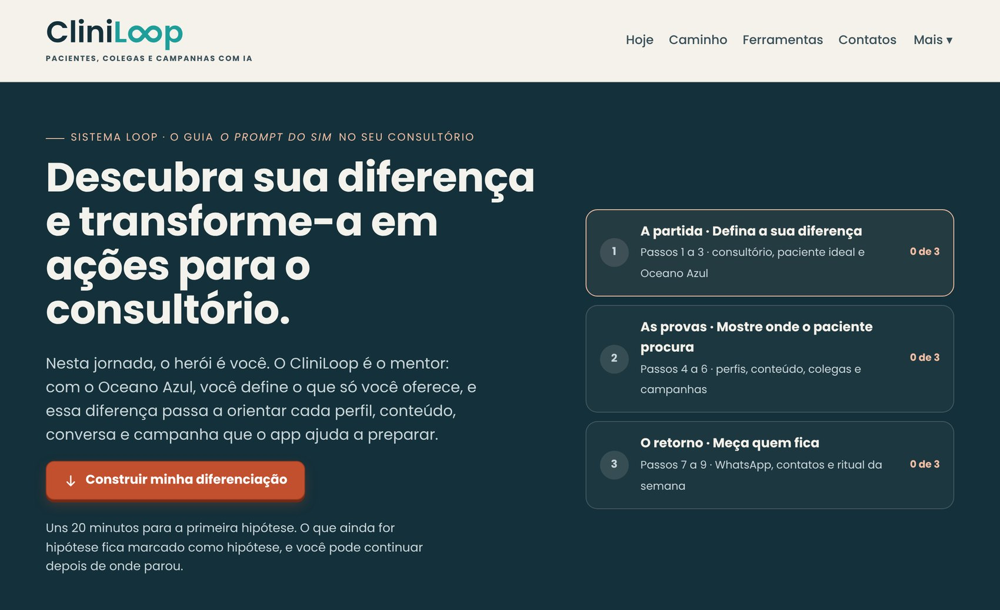
Escolha o tipo de profissional: é essa escolha que carrega as regras do seu conselho em todos os prompts. Preencha registro, especialidade, cidade e bairro e os serviços. No fim do passo, escolha o objetivo dos próximos 90 dias e escreva o resultado numa frase, como “20 primeiras consultas de corredores em 90 dias”. A formação e os detalhes de atendimento ficam em Aprofundar. Clique em Salvar e seguir para o passo 2.
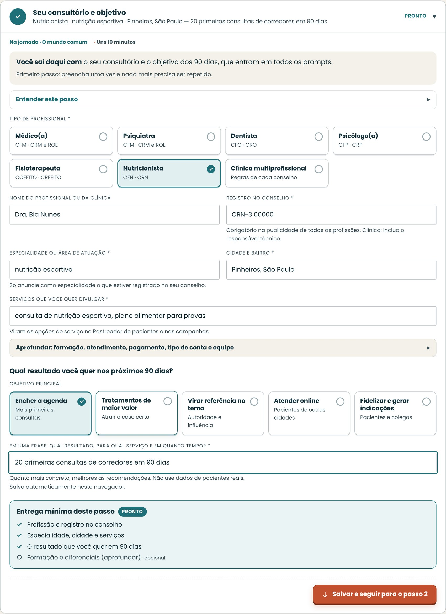
Descreva o paciente que você mais ajuda e a principal dor ou dúvida dele. Os outros campos deixam os prompts mais precisos. Para aprofundar, abra Público, ICP e persona do paciente, logo abaixo.
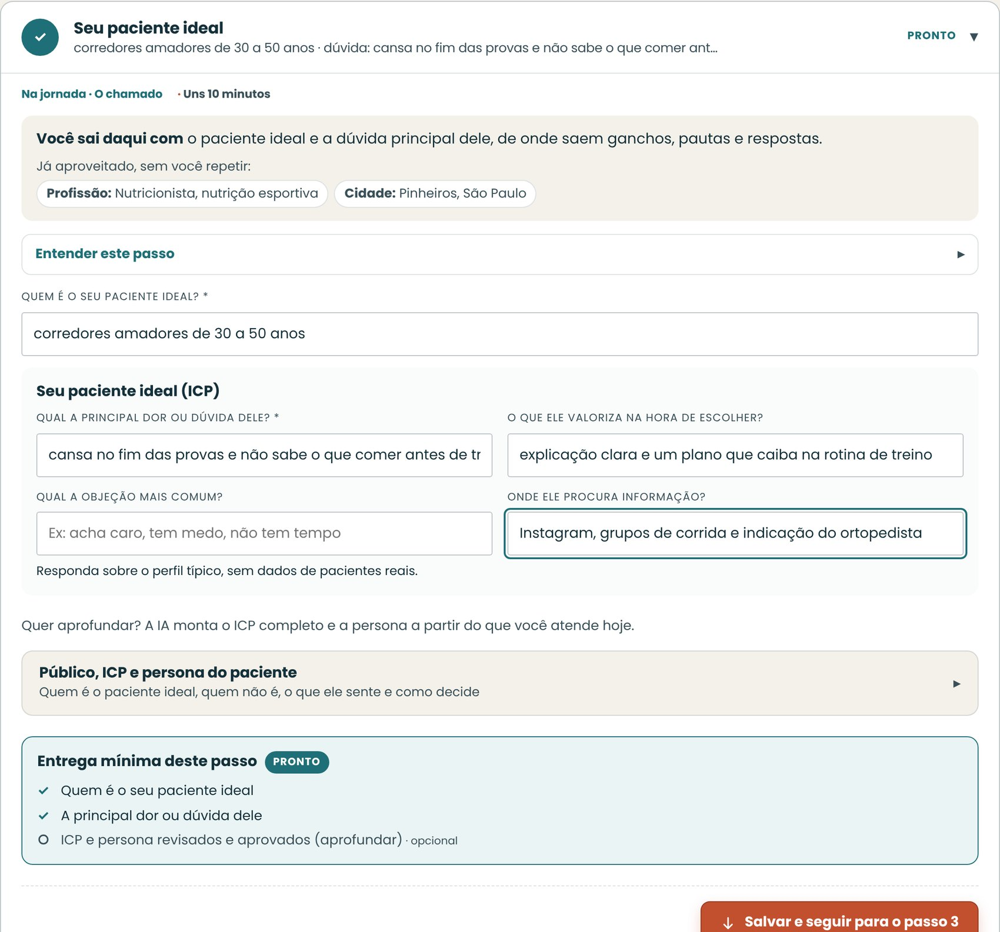
Faça as sete etapas, uma de cada vez. As etapas 2 e 3, de evidência, podem ficar para depois: elas continuam marcadas como pendentes. Na etapa 7, escreva a proposta em uma frase ou use o rascunho. Leia o quadro de decisão e evidência e, quando estiver de acordo, clique em Aprovar esta proposta e confirme os três itens.
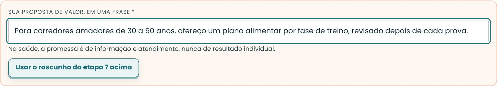
A tela Hoje mostra a sua diferença e o estado dela, o próximo passo e o que ficou pendente. Os passos se fecham com um resumo; para corrigir algo, clique no passo e edite ali mesmo.
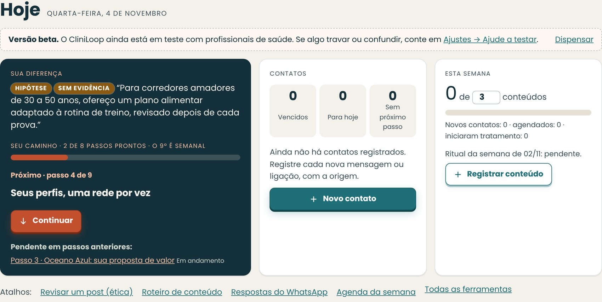
Marque as redes que você já usa. Abra uma delas e cole cada parte do perfil no campo certo: no Instagram, o nome do perfil num campo e a bio em outro; no Google, o nome da ficha, a categoria, a descrição e as avaliações. Embaixo de cada campo, o app diz onde encontrar a informação. Se você ainda não tem o perfil, marque Ainda não tenho, e o prompt cria do zero. A faixa no topo mostra qual diferença o prompt vai usar. Clique em Gerar o prompt do Instagram, do Google ou da rede aberta e siga o ciclo: copiar, abrir a IA, voltar e revisar.
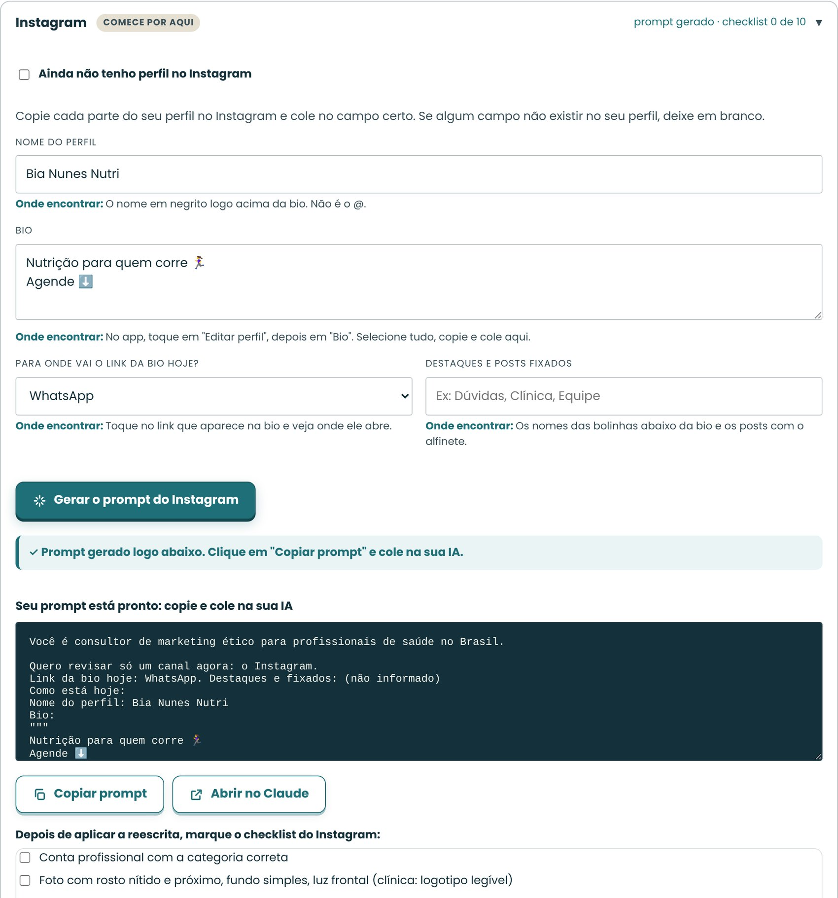
Quando gostar da resposta da IA, revise identificação, promessas e dados, cole o texto em Guardar a versão aprovada e clique em Aprovar e guardar. A versão aprovada entra nos próximos prompts, no briefing, no arquivo do Projeto e no playbook.
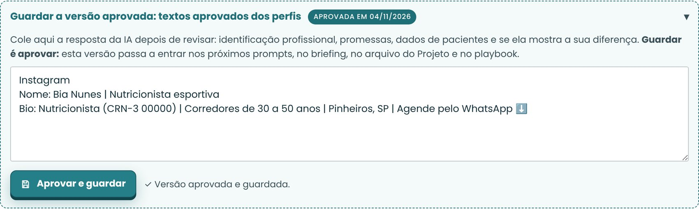
No menu Ferramentas, abra Configurações. Em “Como você usa a IA”, escolha a IA em que vai colar os prompts. Se usa o Claude, indique também o modo: sem assinatura, Pro ou Max, ou API.
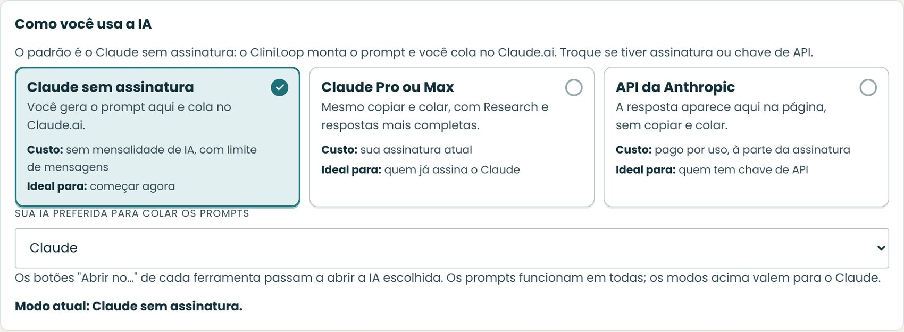
No menu, abra CRM e clique em Novo contato. No cadastro rápido, registre nome ou apelido, de onde a pessoa veio e o próximo passo com data. Em Mais detalhes ficam o contato, o serviço, a etapa e o consentimento que a pessoa deu. Nenhum dado clínico entra aqui: diagnóstico, exames e evolução ficam no prontuário.
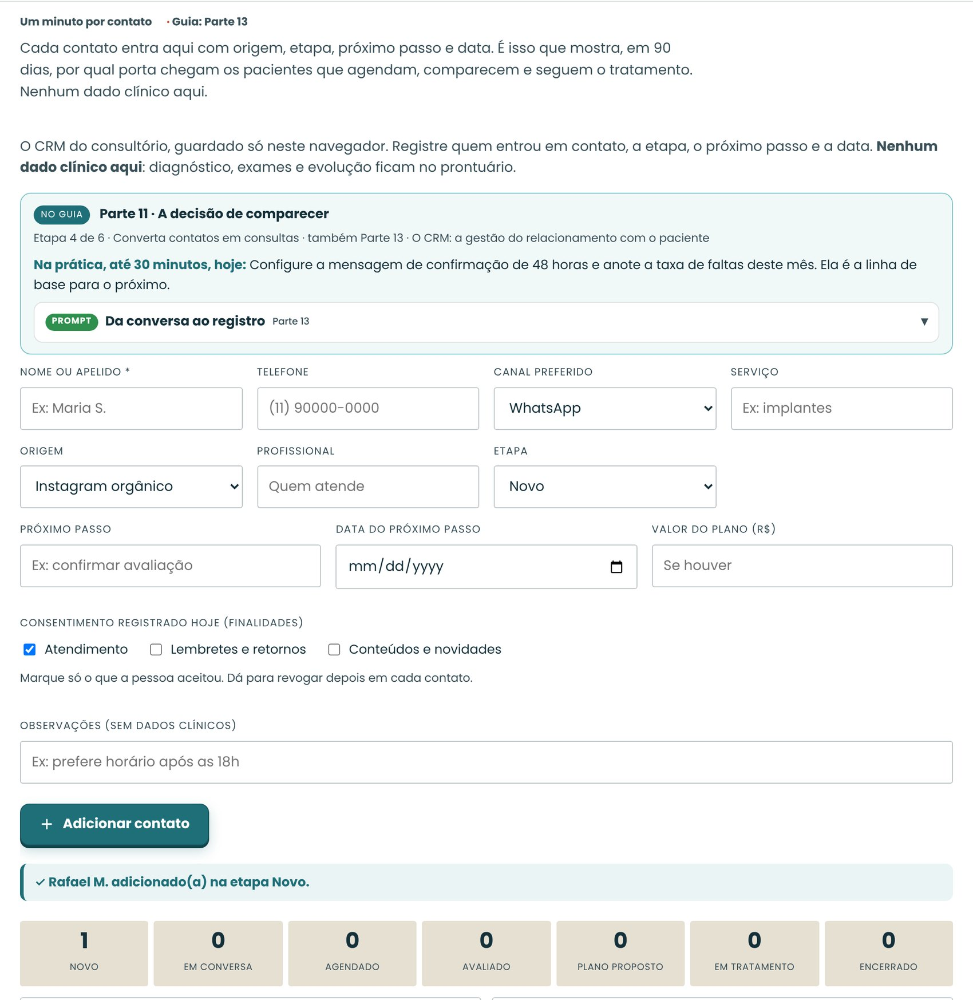
No quadro, arraste o cartão para a etapa seguinte ou use as setas. O app registra a data e sugere o próximo passo. Abra o Procedimento da recepção para ver o que fazer em cada etapa e imprima uma cópia para quem atende. Se a recepção usa o mesmo computador, ligue o Modo recepção.
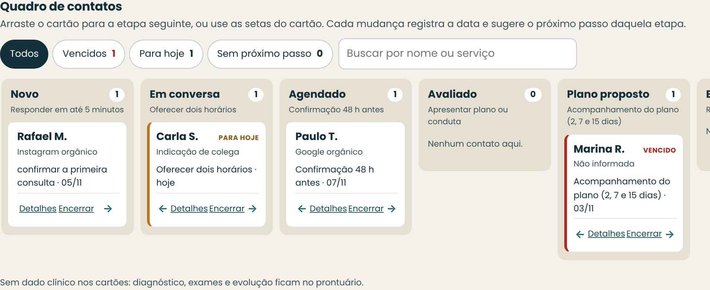
Toda semana, em 30 minutos, abra o passo 9, no fim do módulo CRM. O placar mostra contatos, agendamentos, comparecimentos e tratamentos dos últimos 90 dias, com o período e os números de cada taxa. Com poucos registros, ele só descreve. Monte a semana no Assistente da semana e clique em Fiz o ritual desta semana.
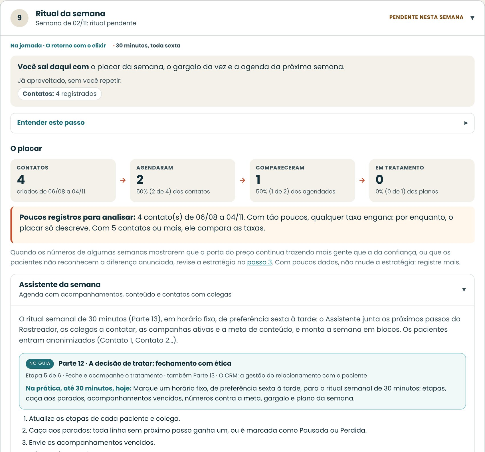
Os dados ficam só neste navegador. No menu Ferramentas, em Configurações, clique em Fazer backup (.json): o app confere o arquivo antes de baixá-lo e diz quantos registros ele traz. Para usar em outro aparelho, clique em Restaurar backup. Se a restauração falhar no meio, o app desfaz tudo e mantém os dados atuais.
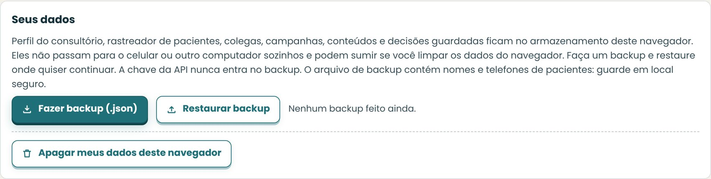
| Ferramenta CliniLoop | O que faz | No app | Parte do guia |
|---|---|---|---|
| Seu consultório e objetivo | Escolhe o tipo de profissional (médico, psiquiatra, dentista, psicólogo, fisioterapeuta, nutricionista ou clínica multiprofissional), carrega as regras do conselho certo e define o objetivo dos 90 dias | Passo 1 | 1 e 2 |
| Público, ICP e persona | Descreve quem você atende e gera o perfil do paciente ideal | Passo 2 | 3 |
| Persona do profissional | Registra sua história, seus valores e o seu tom de voz | Caixa de ferramentas | 3 e 4 |
| Nicho e diferencial | Analisa nicho e concorrência e gera a proposta de valor | Caixa de ferramentas | Apresentação e 3 |
| Estratégia Oceano Azul | Guia em sete passos: onde a sua área compete, o que os pacientes dizem, quem ainda não procura ninguém, as quatro ações, a curva de valor, o que você já faz e como mostrar, e a proposta. O prompt diz se o resultado é um espaço novo ou uma diferença no mercado existente e monta um plano de 12 semanas de conteúdo. As escolhas guardadas orientam as demais ferramentas | Passo 3 | Apresentação, 3, 4 e todas as partes |
| Perfis e presença | Um cartão por rede (Google, Instagram, LinkedIn, YouTube e TikTok), com o prompt daquela rede e o checklist de configuração, e a opção de um prompt com todas | Passo 4 | 3 |
| Pautas e palavras-chave | Banco de dúvidas reais, palavras-chave por serviço e cidade, pautas e calendário | Passo 5 | 4 |
| Roteiros e copy | Reels, carrosséis, Stories, vídeos de YouTube e posts de LinkedIn, com cinco ganchos e versão em blocos para o teleprompter | Passo 5 | 4 e 6 |
| Reaproveitamento de conteúdo | Transforma aula, podcast ou entrevista em carrossel, guia, Reel e Stories, com registro de ideias, autoria e pendências | Caixa de ferramentas | 5 |
| Formação e autoridade | Congressos, cursos, publicações e títulos para o perfil e o LinkedIn | Caixa de ferramentas | 3 |
| Gerador de campanhas | Meta Ads, Google Ads e plano de impulsionamento, com criativos, textos, palavras-chave e público | Passo 6 | 9 e 15 |
| Rede de colegas | Funil de colegas, carta de apresentação, relatório de contrarreferência, agradecimentos | Passo 6 | 8 |
| Atendimento e agendamento | Respostas rápidas do WhatsApp, roteiro de agendamento, retomadas | Passo 7 | 10 |
| Rastreador e quadro de contatos | Funil de sete etapas, filas de vencidos, de hoje e sem próximo passo,, próximos passos vencidos em destaque, lembretes (.ics), exportação (.csv) | Passo 8 | 11, 12 e 13 |
| Assistente da semana | Monta a agenda da semana com acompanhamentos, conteúdo e contatos com colegas | Passo 9 | 13 |
| Painel e diagnóstico | Métricas da Parte 13 e o gargalo da semana | Passo 9 | 13 |
| Verificador ético | Revisa qualquer texto ou anúncio contra as regras do conselho escolhido e as políticas da Meta e do Google | Caixa de ferramentas | 2 e 15 |
| Ferramentas recomendadas | Kit de gravação, editores de vídeo, geradores de imagem e o pedido de imagem para a IA com as regras do conselho | Caixa de ferramentas | 6, 7 e 16 |
| Briefing para terceiros | Monta o briefing para agência, social media ou editor de vídeo | Caixa de ferramentas | 16 |
| Playbook da clínica | Reúne tudo em um documento e agenda revisões quinzenais | Caixa de ferramentas | 13 |
| Etapa no guia | Status no app |
|---|---|
| 1 Novo contato | Novo |
| 2 Em conversa | Em conversa |
| 3 Agendado | Agendado |
| 4 Avaliado | Avaliado |
| 5 Plano proposto | Plano proposto |
| 6 Em tratamento | Em tratamento |
| 7 Alta e vínculo, Perdido, Pausado | Encerrado (com resultado e motivo) |
O CliniLoop foi pensado para o profissional que trabalha sozinho: os dados ficam no navegador de quem usa e não são compartilhados. Por isso, ele não funciona para clínicas em que recepção, coordenação e vários profissionais precisam acessar os mesmos registros. Caso queira uma solução para multiusuários, envie um e-mail para atendimento@loopuniversity.com.br.
Integrações futuras. WhatsApp Business, agenda (Google ou Outlook) e importação de conversões offline para Meta e Google estão previstas, mas ainda não existem. Hoje, o Rastreador exporta planilha e gera lembretes que você abre no seu calendário.
Faça os três primeiros passos do caminho, uma única vez: o consultório e o objetivo, o paciente ideal e a Estratégia Oceano Azul, com a proposta de valor em uma frase. Os três alimentam todas as ferramentas.
O caminho. Abra o app e clique em Continuar: ele abre o módulo e o passo em que você parou. A tela Hoje mostra a sua diferença, o que ficou pendente e o que precisa de revisão.
Próxima passagem. As ferramentas estão à mão. A próxima parte mostra como juntá-las numa campanha completa, que leva tudo o que você aprendeu a mais gente de uma só vez.
No roteiro · Etapa 6 de 6 · Meça e escale com CRM
Na jornada · A última prova
Uma campanha completa cabe em uma página: objetivo, público, diferencial, mensagem, peças, canal, orçamento, atendimento e medição.
Perto do fim de muitas histórias, o herói enfrenta uma última prova, maior que as anteriores, e só a vence porque usa tudo o que aprendeu no caminho. A campanha é essa prova: conteúdo, colegas, anúncio, atendimento e medição trabalhando juntos, com o seu diferencial no centro.
O gerador abaixo produz essa página com IA, e o Verificador ético revisa antes de publicar. Uma campanha deste guia não é um pacote de anúncios genéricos: ela parte do seu diferencial e usa, como peças, o conteúdo que você já produziu e que já provou funcionar.
| Campo | Pergunta |
|---|---|
| Objetivo | Quantos novos pacientes agendados, para qual serviço, em quanto tempo? |
| Público | Quem é o paciente, onde mora, qual a dúvida principal? |
| Diferencial | O que, nesta campanha, só você pode mostrar? Qual das quatro ações ela evidencia? |
| Mensagem central | Qual informação útil abre a conversa? |
| Peças | Quais Reels, carrosséis, Stories, anúncios e páginas? Quais já existem no orgânico? |
| Canais | Orgânico, Meta Ads, Google Ads, YouTube, colegas? |
| Orçamento e duração | Quanto por dia, por quantos dias, sem mexer? |
| Atendimento | Quem responde, com qual roteiro, em quanto tempo? |
| Medição | Contatos, agendados, comparecimentos e planos iniciados por origem |
| Compliance | Conselho, LGPD, políticas da plataforma conferidos? |
Gerador de campanha completa
Atue como estrategista de marketing ético para saúde no Brasil. Monte uma campanha de [DURAÇÃO] para [PROFISSÃO/CLÍNICA] em [BAIRRO, CIDADE], serviço [SERVIÇO], objetivo [N] pacientes agendados, orçamento [R$/DIA]. Meu diferencial: [SUA PROPOSTA DE VALOR]. Conteúdos meus que já funcionaram no orgânico: [LISTE].
Entregue:
1. Ficha da campanha (objetivo, público, diferencial, mensagem central, canais, medição por origem).
2. 3 roteiros de Reel (gancho, contexto, 3 a 5 pontos, CTA, legenda), aproveitando os conteúdos que já funcionaram.
3. 1 carrossel de 7 slides.
4. Anúncios Meta (3 textos, 3 títulos) e Google (15 títulos, 4 descrições, 20 palavras-chave, 15 negativas).
5. Mensagem de boas-vindas do WhatsApp e 3 respostas rápidas.
6. Calendário dia a dia.
7. Lista de verificação ética do [CONSELHO], da LGPD e das políticas da Meta e do Google, marcando o que precisa de atenção.
Regras: sem promessa de resultado, sem superlativos, sem medo, sem afirmar condição de saúde do usuário, sem preço onde o conselho proíbe. Marque com [CONFIRMAR] tudo que eu não informei.
Exemplo preenchido · personagem fictícia
O que foi colocado
Duração: 14 dias. Serviço: consulta de nutrição esportiva. Objetivo: 8 pacientes agendados. Orçamento: R$ 30 por dia.
O que a IA devolveu (trecho)
1. FICHA Objetivo: 8 consultas agendadas em 14 dias. Público: corredores de 30 a 50 anos num raio de 5 km de Pinheiros. Mensagem central: "Organize a alimentação para correr com mais tranquilidade." Canais: Reels, WhatsApp, Meta (mensagens). Medição: mensagens, conversas, agendamentos, comparecimento, por origem. 2. REELS (títulos): "O que comer na véspera" | "Gel: precisa?" | "Café da manhã antes do treino longo" 3. CARROSSEL (7 slides): capa, problema, 3 erros comuns, o que costuma ajudar, quando procurar profissional, convite. 4. ANÚNCIOS: ver exemplo do anúncio. 5. WHATSAPP: boas-vindas e 3 respostas rápidas (ver exemplo de respostas rápidas). 6. CALENDÁRIO (trecho): dia 1 Reel 1 | dia 3 carrossel | dia 5 Reel 2 e início do impulsionamento | dia 7 leitura dos números | dia 10 Reel 3 | dia 14 balanço. 7. CHECAGEM [CONFIRMAR]: CFN não permite promoção nem sorteio como publicidade; sem imagem corporal; sem marcas; LGPD: consentimento no primeiro contato; políticas de saúde da Meta. [CONFIRMAR] orçamento total (R$ 420), prazo de resposta que você consegue cumprir, horários disponíveis.
Antes de usar
| Campanha | Para quem | Mensagem central | Canais |
|---|---|---|---|
| Avaliação de dor lombar | Fisioterapia | “Dor nas costas tem causas tratáveis. Entenda como é a avaliação” | Reels + Meta Ads para WhatsApp + Google Pesquisa |
| Como funciona o implante | Odontologia | “Cada etapa do implante, explicada” (sem preço) | Carrossel + YouTube + Google Pesquisa |
| Terapia online | Psicologia | “Como é uma primeira sessão de terapia online” | Reels + Google Pesquisa (“psicólogo online”) |
| Reativação | Todas | Lembrete de retorno periódico para quem consentiu | WhatsApp a partir do CRM |
Datas de conscientização. Setembro Amarelo, Outubro Rosa, Novembro Azul e outras são boas para autoridade, desde que educativas. Em Setembro Amarelo, siga as recomendações de comunicação responsável sobre suicídio, informe o CVV (188) e não use o tema para captar pacientes.
| Etapa | Prompt | Parte |
|---|---|---|
| Posicionamento | Auditoria de perfis e canais | 3 |
| Conteúdo | Roteiro de Reel ético | 4 |
| Reaproveitamento | Do episódio ao conjunto de peças | 5 |
| Vídeo | Roteiro para teleprompter e plano de gravação | 6 |
| Vídeo | Plano de edição a partir da transcrição | 7 |
| Colegas | Carta de apresentação a colegas | 8 |
| Colegas | Relatório de contrarreferência | 8 |
| Tráfego | Anúncio Meta e Google | 9 |
| Tráfego | Plano de impulsionamento | 9 |
| Agendamento | Respostas rápidas | 10 |
| Fechamento | Plano de tratamento compreensível | 12 |
| CRM | Da conversa ao registro | 13 |
| Campanha | Gerador de campanha completa | 15 |
| Revisão | Verificador ético | 15 |
Verificador ético
Revise o texto abaixo como se fosse a comissão de ética do [CONSELHO]. Aponte, frase a frase: promessa de resultado, superlativo, sensacionalismo, medo, exposição de paciente, preço ou promoção vedados, falta de identificação profissional, afirmação sobre condição de saúde do leitor.
Aponte também, em uma linha, se o texto poderia ser publicado por qualquer colega da mesma especialidade sem mudar nada.
Proponha uma versão corrigida que mostre a diferença com fatos, sem adjetivos. Lembre que esta revisão não substitui a consulta à norma vigente.
Texto: [COLE AQUI]
Exemplo preenchido · personagem fictícia
O que foi colocado
Texto: "Perca 10 kg em 30 dias com o meu protocolo! Resultado garantido, veja o antes e depois das minhas pacientes. Só esta semana, 30% de desconto na consulta."
O que a IA devolveu (trecho)
FRASE A FRASE 1. "Perca 10 kg em 30 dias": promessa de resultado e meta de peso; o CFN restringe. 2. "com o meu protocolo": sugere método exclusivo, sem comprovação. 3. "Resultado garantido": promessa de resultado. 4. "veja o antes e depois das minhas pacientes": exposição de pacientes e imagem corporal atribuindo resultado. 5. "Só esta semana, 30% de desconto": promoção, vedada como publicidade pelas normas aplicáveis. 6. Falta identificação: nome, CRN e especialidade. VERSÃO CORRIGIDA "Quer organizar a sua alimentação com acompanhamento? Na consulta de nutrição, avaliamos a sua rotina e montamos um plano por escrito. O resultado é diferente para cada pessoa. Bia Nunes, nutricionista, CRN-3 00000. Agende pelo WhatsApp." Esta revisão não substitui a consulta à norma vigente.
Antes de usar
Preencha a ficha de uma campanha para o seu serviço principal, começando pelo campo Diferencial, e rode o gerador. Passe tudo pelo verificador ético antes de publicar.
Gerador de campanhas e Verificador ético. A ficha da campanha vira um formulário; o resultado passa pelo verificador antes de ir para o ar.
Próxima passagem. A campanha está desenhada. Falta escolher as ferramentas que a tornam real e preparar o retorno, quando outras pessoas passarão a ajudar você na jornada.
No roteiro · Etapa 6 de 6 · Meça e escale com CRM
Na jornada · O retorno com o elixir
Comece com o mínimo: celular, Canva, WhatsApp Business, Meta Business Suite e o CliniLoop. As demais entram quando o volume pedir. As ferramentas são as mesmas para todos; a diferença está no que você coloca nelas.
O herói volta para casa trazendo algo que serve a outros: o elixir. Aqui, o elixir é o método que você agora domina e que pode passar a uma secretária, a um editor ou a uma agência sem perder a sua diferença no caminho.
As ferramentas abaixo foram listadas, não avaliadas: confira planos, preços e adequação à LGPD antes de contratar.
Nenhuma delas diferencia você. O seu concorrente usa o mesmo Canva, o mesmo CapCut e a mesma IA. Use os modelos prontos como ponto de partida e troque sempre cores, fontes, exemplos e textos pelos seus, com a identidade definida na Parte 3.
| Necessidade | Ferramentas | Observação |
|---|---|---|
| Criar peças | Canva, Adobe Express | Modelos de carrossel e capas com a identidade da clínica |
| Gravar vídeo | Celular, tripé, ring light ou painel de LED, microfone de lapela | Primeiro som, depois luz, por último câmera (Parte 6) |
| Falar sem decorar | BIGVU, PromptSmart, Teleprompter.com | Teleprompter no celular, com rolagem pela voz em alguns (Parte 6) |
| Editar vídeo | Editores nativos das redes, Edits (Meta), CapCut, Canva, InShot, Descript | Comece pelo nativo; revise as legendas automáticas (Parte 7 e Anexo A) |
| Gerar imagens com IA | ChatGPT, Gemini, Meta AI, Canva, Adobe Firefly | Ilustração, nunca paciente ou resultado; revise a anatomia (Anexo A) |
| Avatar e voz com IA | HeyGen, Synthesia | Só a sua imagem e voz, com aviso de IA (Parte 7) |
| Agendar e medir posts | Meta Business Suite, Metricool, mLabs | Calendário e relatórios de Instagram e YouTube |
| Reaproveitamento | Transcrição do app de gravação ou do YouTube, Claude | Da aula ou do podcast às peças; nunca transcreva consultas |
| Comentário que leva ao guia | Manychat | Exige configuração e teste; respeite as regras do conselho |
| Ideias e palavras-chave | Google Trends, Answer The Public, Planejador de palavras-chave do Google Ads | Pautas a partir do que o paciente pesquisa (Parte 4) |
| Escuta das redes | Social Searcher (plano gratuito), Talkwalker Alerts, Google Alertas | O que se fala sobre o seu tema no Instagram, no TikTok e no YouTube (Parte 4) |
| Vídeos curtos fora do Instagram | TikTok, TikTok Studio | Opcional; publique sem marca d’água de outra rede; anúncios pelo Promote ou TikTok Ads Manager (Anexo A) |
| Impulsionamento | Botão Turbinar no Instagram, Meta Business Suite | O primeiro anúncio de quem nunca anunciou (Parte 9) |
| YouTube | YouTube Studio, TubeBuddy ou vidIQ | Títulos, capítulos e análise de retenção |
| Anúncios | Gerenciador de Anúncios da Meta, Google Ads | Pixel, API de Conversões, tag do Google |
| Medição do site | Google Analytics 4, Google Tag Manager | Conversões de WhatsApp, ligação e formulário |
| Presença local | Perfil da Empresa no Google, Doctoralia | Avaliações e agendamento online |
| Atendimento | WhatsApp Business (app ou API oficial) | Respostas rápidas, etiquetas, catálogo de serviços |
| CRM comercial | CliniLoop, RD Station CRM, Kommo, Pipedrive, HubSpot | Funil, próximos passos, automações |
| Agenda e prontuário | iClinic, Feegow, Amplimed, Simples Dental, Clinicorp | Agenda, confirmação e prontuário eletrônico (fora do CRM) |
| Assistentes de IA | Claude, ChatGPT, Gemini, Copilot | Use com as quatro regras; nunca com dados de pacientes |
O passo a passo das principais ferramentas de criação, edição, publicação e anúncios está no Anexo A.
Com o tempo, parte do trabalho pode passar para uma secretária, um social media, um editor de vídeo ou uma agência. É nesse momento que muitos perfis voltam a ficar genéricos: quem recebe a tarefa não conhece o seu diferencial e preenche o vazio com modelos.
Antes de delegar, entregue um briefing por escrito com:
Você pode delegar a produção. Não delegue a revisão clínica e ética, nem a decisão sobre o que é o seu diferencial.
Escolha uma ferramenta por linha, no máximo. Ferramenta demais é registro duplicado, e registro duplicado é paciente esquecido.
Exportação, lembretes e Briefing para terceiros. O Rastreador exporta em planilha (.csv) e gera lembretes para Google Agenda ou Outlook, para conversar com as ferramentas que você já usa. O Briefing para terceiros monta o documento para agência, social media ou editor a partir do seu perfil e das decisões guardadas.
O fim que é começo. A jornada termina onde começou: no consultório, numa segunda-feira comum. Só que agora você sabe quem é o seu paciente, por onde ele chega e o que fazer em cada etapa. Na próxima volta, o caminho é mais curto e mais seguro. É isso que o Loop quer dizer. Os anexos ficam na mochila para quando você precisar deles.
ANEXO A
Este anexo é para ler com o celular na mão. Ele detalha, toque por toque, o que as Partes 3, 6, 7 e 9 explicam: como se posicionar antes de criar, como editar nos aplicativos das redes, no CapCut, no Canva e no HeyGen, como gerar imagens com IA e como montar anúncios no Instagram e no TikTok.
Os aplicativos mudam nomes de botões e menus com frequência, e alguns recursos aparecem primeiro em certos países ou tipos de conta. Se um botão não estiver onde o passo indica, procure por um ícone ou nome parecido, ou consulte a central de ajuda da própria plataforma. Os passos foram conferidos em outubro de 2026.
Conteúdo sem posicionamento vira mais um post parecido com os outros, e é exatamente isso que este guia procura evitar. Antes de abrir qualquer editor, responda às perguntas abaixo. Elas reúnem a proposta de valor e as quatro ações do Oceano Azul (Apresentação e Parte 3), a escada de crescimento e os formatos recorrentes da Parte 4 e o princípio de que o conteúdo vem antes da bio.
Preencha uma vez e deixe à vista enquanto cria. Ela é o filtro de toda pauta, roteiro e imagem.
| Campo | Exemplo (fisioterapeuta) | O seu |
|---|---|---|
| Promessa: “Ajudo [quem] a [entender ou cuidar de quê]” | Ajudo corredores amadores a entender a dor no joelho e a voltar a treinar com segurança | |
| O que me diferencia (as quatro ações do Oceano Azul) | Elimino o jargão, elevo a explicação do porquê de cada exercício, crio um quadro semanal de dúvidas | |
| Até cinco adjetivos | Claro, prático, próximo, técnico, animado | |
| Três temas fixos | Dúvidas sobre lesões · Bastidores da reabilitação · Mitos do treino | |
| Série recorrente | “Pergunta do vestiário”, toda terça | |
| Abertura e fechamento que se repetem | “Pergunta de corredor:” · “Até a próxima largada” | |
| Identidade visual | Azul-petróleo, branco e uma fonte sem serifa | |
| O que eu não faço | Não prometo prazo de recuperação, não mostro paciente, não comento caso pelos comentários |
| Objetivo da peça | Formato | Métrica que diz se funcionou |
|---|---|---|
| Ser descoberto por quem não segue | Reel ou vídeo no TikTok | Alcance entre não seguidores, tempo assistido, envios |
| Ser guardado e consultado | Carrossel | Salvamentos e envios |
| Criar relação com quem já segue | Stories com enquete ou caixinha | Respostas e mensagens |
| Ser encontrado por quem pesquisa | YouTube e Perfil da Empresa no Google | Tempo de exibição, buscas, cliques para agendar |
| Ganhar a confiança de colegas, imprensa e empresas | Conexões qualificadas, convites, indicações |
Uma pergunta por episódio. A resposta vem cedo, o exemplo é seguro, a ressalva é preservada e o fim retoma o começo. Quando a série é reconhecível, o seguidor volta.
Lente na altura dos olhos, olhar para a lente, luz de frente, rosto e textos no centro da tela, fala um pouco mais lenta que numa conversa. O passo a passo completo de enquadramento, luz, som e teleprompter está na Parte 6.
O Edits é um aplicativo gratuito da Meta, separado do Instagram, com mais recursos de edição e publicação direta no Instagram e no Facebook.
No computador, o TikTok Studio (tiktok.com/tiktokstudio) permite enviar vídeos editados em outro programa, agendar e ver as estatísticas.
O LinkedIn tem edição mínima: corte do início e do fim, capa e arquivo de legenda. Edite antes em outro aplicativo, com legenda gravada no vídeo, e use o LinkedIn só para publicar (Parte 3).
O CapCut é gratuito, com recursos extras no plano Pro, e funciona no celular, no computador e no navegador.
Modelos: a aba Modelos traz edições prontas. Use com moderação e prefira os que deixam a sua fala em primeiro plano. Alguns modelos usam músicas que não podem ser impulsionadas.
O Canva serve para carrosséis, capas de Reel, Stories, miniaturas do YouTube, banners e vídeos com a identidade da clínica. O plano gratuito atende ao começo; o Pro libera o kit de marca completo, a remoção de fundo e mais usos de IA por mês.
O plano gratuito tem cota mensal pequena de usos de IA. Confira o limite antes de planejar uma série inteira com imagens geradas.
O HeyGen cria vídeos com avatares digitais a partir de um texto e traduz vídeos para outros idiomas. O plano gratuito permite poucos vídeos curtos por mês, com marca d’água e resolução menor. Avatar personalizado e voz clonada exigem planos pagos.
Tradução de vídeo: a função de tradução dubla um vídeo seu em outro idioma, com a sua voz. É útil para quem atende estrangeiros ou turistas. Revise com um falante do idioma antes de publicar.
Antes de usar, releia na Parte 7 os cuidados com avatar e voz: só a sua imagem, dados biométricos protegidos pela LGPD, aviso de IA, nunca paciente ou depoimento simulado.
Cada assistente de IA tem o seu gerador de imagens, e eles mudam de versão com frequência. A tabela mostra onde gerar e para que cada um costuma ser mais útil. Confira limites e regras de uso comercial no plano que você usa.
| Onde gerar | Gerador | Mais útil para | Observação |
|---|---|---|---|
| ChatGPT (OpenAI) | Gerador de imagens do próprio ChatGPT | Ilustrações a partir de descrições longas, edição por conversa, texto curto na imagem | Plano gratuito com limite diário; mais uso nos planos pagos |
| Gemini (Google) | Modelos de imagem do Gemini (conhecidos como Nano Banana) | Edição de fotos por conversa, variações rápidas, imagens em alta resolução | Disponível no app Gemini; limites variam por plano |
| Meta AI | Gerador do Meta AI, dentro do WhatsApp, do Instagram e do Facebook | Ilustrações rápidas sem sair dos aplicativos que você já usa | Gratuito; recursos variam por país |
| Copilot (Microsoft) | Gerador de imagens do Copilot | Ilustrações e ícones simples | Gratuito com limites; integrado ao Windows e ao Office |
| Claude (Anthropic) | Não gera fotos ou ilustrações realistas | Infográficos, fluxogramas, diagramas e tabelas visuais, criados como página ou código | Útil para explicar etapas de um tratamento ou de uma consulta |
| Canva | Dream Lab e Mídia Mágica | Imagens que já entram no design com a identidade da clínica | Cota mensal pequena no plano gratuito |
| Adobe Firefly e Adobe Express | Modelos Firefly | Imagens para uso comercial, com treinamento em conteúdo licenciado; edição de partes da imagem | Créditos mensais; planos pagos |
| Midjourney | Midjourney | Ilustrações com acabamento artístico e texturas | Só planos pagos |
| Ideogram | Ideogram | Imagens com texto longo e legível, como cartazes e capas | Créditos gratuitos limitados |
| CapCut (Dreamina) | Gerador de imagens do CapCut | Imagens e capas dentro do fluxo de edição de vídeo | Cota de créditos por plano |
Um bom pedido de imagem tem seis partes:
Exemplo. Ilustração plana e limpa de um modelo anatômico de joelho visto de lado, destacando o menisco em azul-petróleo, sobre fundo branco. Objeto à esquerda e espaço vazio à direita para texto. Estilo educativo, traço simples, sem sombras pesadas. Formato 4:5. Sem texto, sem pessoas, sem logotipos e sem aparência de foto real.
O app CliniLoop monta esse pedido para você, com as regras do seu conselho, na ferramenta Ferramentas recomendadas.
O jeito mais simples de anunciar é impulsionar um post pelo botão Turbinar, descrito na Parte 9. Em qualquer caminho, vale a regra da Parte 9: o anúncio amplifica o que já é seu, então o criativo é, de preferência, um conteúdo seu que já funcionou no orgânico. Quando quiser mais controle (escolher o objetivo exato, testar vários criativos, levar a conversa direto para o WhatsApp), use o Gerenciador de Anúncios da Meta.
O TikTok tem dois caminhos: o Promote (promover), feito no próprio aplicativo, e o TikTok Ads Manager, mais completo.
Regras de saúde no TikTok. No Brasil, anúncios de clínicas e instituições médicas exigem público a partir de 18 anos, e anúncios de cirurgia plástica por instituições médicas não são permitidos. Medicamentos e dispositivos médicos exigem registro na Anvisa. Confira a política de saúde do TikTok antes de anunciar e siga também as regras do seu conselho.
ANEXO B
Os termos que o mercado digital usa, explicados em uma linha. Quando um termo for novo no meio de uma parte, volte aqui.
ANEXO C
Pesquisa feita em outubro de 2026. A maior parte dos números públicos vem de fornecedores e não é comparável entre si. Cada dado vem com a ressalva da fonte.
| Dado | Fonte e ressalva |
|---|---|
| 74% das clínicas e hospitais investem em marketing; 24% usam estratégias avançadas; 44% dizem que atrair pacientes é o maior desafio; 65% usam software pago para gerenciar consultas (1.328 respondentes) | Panorama Doctoralia 2024, divulgado pela Medicina S/A. Conteúdo patrocinado; dados autodeclarados pela Doctoralia |
| Taxa de confirmação de consultas passou de 36% para 90% numa Unimed de Santa Catarina após automação por WhatsApp | Medicina S/A, 22/03/2022. Caso divulgado pelo fornecedor da solução |
| Não existe “taxa normal” de faltas no mercado; recomenda-se medir a sua e comparar por unidade, especialidade e antecedência. Revisões de estudos indicam que lembretes reduzem faltas, sem percentual | Digisac, 21/08/2026. Blog de fornecedor; o 8% do texto é um exemplo hipotético |
| Google Ads (global, em dólar): taxa de conversão de 11,08% para Médicos e Cirurgiões, contra 6,96% da média geral; CPC de US$ 6,82 em serviços odontológicos, contra US$ 4,66 da média | Conversion, sobre o relatório da WordStream 2024. Dados globais de 2023 e 2024, não do Brasil, e medem do clique à conversão no anúncio, não paciente atendido |
| Responder em menos de 90 segundos converteria 10 a 15% das consultas, contra 3 a 5% após 30 minutos | Aurora Inbox, 2026. Blog de fornecedor de IA para WhatsApp, números sem fonte. Não use como meta. A direção (responder rápido ajuda) é razoável |
Não existe benchmark brasileiro público e confiável de volume de pacientes por consultório. Por isso os marcos do roteiro medem o que o profissional controla (publicar, registrar, responder, confirmar, indicar) e deixam o resultado para a comparação com a sua própria linha de base.
Não avaliamos cursos pagos nem mentorias, por não termos acesso a conteúdo comparável.
| Categoria | O que entrega | Onde o CliniLoop é diferente |
|---|---|---|
| Agência de marketing ou gestor de tráfego | Anúncios, gestão das redes e relatórios, mediante mensalidade mais verba de mídia. O criativo costuma ser adaptado de modelos usados para vários clientes | Outro jogo: em vez de comprar volume, o profissional constrói a diferença com o próprio conteúdo e a rede de colegas. O custo principal é o tempo dele, de 25 a 30 minutos por dia no primeiro mês. Os dois podem conviver: o guia ensina a entregar à agência o que é só seu, para que o anúncio amplifique a diferença (Parte 9) |
| Conteúdo gratuito de blog | Conceitos, escolha de plataforma, resumo de regras do CFM. Sem números, modelos, roteiros ou checklists | Passos de 30 minutos, 14 prompts, checklists e um registro de contatos |
| CRM de WhatsApp para clínicas | Automação, agente de IA, API oficial do WhatsApp. Preços de fornecedor em setembro de 2026 a partir de R$ 149 por usuário ao mês | O guia não automatiza nem integra o WhatsApp. Em troca, não cobra mensalidade, ensina o método e traz as regras do conselho. Quando o volume crescer, migre para um CRM e leve o método |
| Gestão e marketplace | Agenda, prontuário, teleconsulta, marketplace de pacientes | Trata da captação própria, da rede de colegas e da rotina semanal, fora do marketplace |
Posicionamento: em relação aos CRMs e aos sistemas de gestão, é um complemento: o guia ensina o método e a rotina, e o CRM executa quando o volume pede. Em relação à fábrica de leads, é uma alternativa de jogo, mas não uma oposição: anúncio e agência continuam úteis quando amplificam uma diferença que já existe.
ANEXO D
Nem todo paciente chega por confiança. Muitos chegam porque você estava na lista do convênio, tinha horário na plataforma, atendeu no plantão ou fica perto de casa. Este anexo mostra como levar a sua diferença também para esses caminhos, e como transformar quem chegou por conveniência em quem volta e indica.
Para várias especialidades, os caminhos intermediados são a maior parte da agenda. O pediatra credenciado em três planos, o ortopedista que opera no hospital, a fisioterapeuta listada numa plataforma de agendamento: para eles, ignorar esses caminhos seria ignorar a maioria dos pacientes.
O que esses caminhos têm em comum é que outra pessoa ou empresa fica entre você e o paciente: a operadora, a plataforma, o hospital, o ponto comercial. Você controla pouco das regras deles. Mas controla duas coisas que fazem toda a diferença: como você aparece nesses lugares e o que o paciente encontra quando chega.
O objetivo deste anexo não é ensinar a negociar com operadoras nem a escolher imóvel. É garantir que a sua diferença não desapareça só porque o paciente entrou por uma porta que não é a sua.
O paciente de convênio escolhe numa lista. Muitas vezes, olha o nome, o bairro e o primeiro horário livre, e decide. Às vezes, antes de ligar, pesquisa os nomes da lista no Google ou no Instagram.
O que você controla:
Se o seu cadastro na operadora permite descrição ou foto, use a mesma proposta de valor dos outros canais.
Plataformas como a Doctoralia funcionam como uma vitrine com agenda: o paciente compara perfis, lê avaliações e marca direto. Muitas cobram assinatura, e a comparação lado a lado puxa a decisão para preço, distância e horário.
Como aparecer:
Como decidir se vale a pena: registre no CRM a origem “Doctoralia ou plataforma” e, depois de alguns meses, divida o custo da assinatura pelo número de pacientes que compareceram por ela. Compare com as outras origens na conta da Parte 13.
Quem atende em hospital ou plantão encontra pacientes num momento de urgência, sem escolha prévia. Parte deles vai querer continuar o acompanhamento depois.
O cuidado aqui é ético antes de ser estratégico. Siga as regras da instituição e do seu conselho sobre continuidade do cuidado e encaminhamento. Nunca aborde o paciente para levá-lo ao consultório particular. Se ele pedir para continuar com você, ofereça o canal oficial de agendamento e registre a origem como hospital ou plantão.
O que diferencia, nesse caminho, é a mesma coisa de sempre: explicar com clareza num momento difícil. O paciente que entendeu o que aconteceu com ele no plantão costuma lembrar de quem explicou.
A fachada, a placa, a recepção e a sala de espera também são um canal. Quem passa em frente todos os dias decide, um dia, entrar. Muitas vezes, antes disso, pesquisa o nome que viu na placa.
Os caminhos intermediados trazem pacientes que ainda não conhecem a sua diferença. A consulta é a chance de apresentá-la. Se ela cumprir o que o seu conteúdo promete, o paciente que chegou pela lista do convênio volta pelo seu nome e indica você a outras pessoas. Na próxima volta da jornada, ele chega pela porta da confiança.
Para acompanhar isso, preencha no CRM o campo de quem indicou cada paciente. Com o tempo, você vai ver quantas indicações nasceram de pacientes que chegaram por caminhos intermediados.
Pesquise o seu nome como faria um paciente que acabou de ver você na lista do convênio ou numa plataforma. O que ele encontra? A foto, a especialidade e a proposta de valor são as mesmas em todos os lugares? Corrija a primeira diferença que encontrar.
Rastreador de pacientes. Tem origens próprias para convênio ou plano de saúde, Doctoralia ou outra plataforma, hospital ou plantão e quem passou em frente. Registre sempre, para que a conta da Parte 13 inclua esses caminhos.
ANEXO E
Este guia só existe porque muita gente generosa já publicou o que sabe. Aqui estão as pessoas e as obras em que ele se apoia, com a nossa gratidão.
Agradecemos a JR Tosoni, autor do e-book interativo Prompt do Sim e do aplicativo BuscaLoop, em cuja estrutura de método, funil, registro e ritual semanal este guia foi construído; a Pat Machadu, pelo método de crescimento de perfis em sete etapas que inspirou a escada de crescimento da Parte 4; a Diandra Santos, pela síntese de formatos recorrentes de vídeo que inspirou a seção sobre séries reconhecíveis; a Thiago Lemos e Alexandre Abramo, pela análise sobre reaproveitamento de conteúdo e sobre a ordem “primeiro o conteúdo, depois a bio”; a W. Chan Kim e Renée Mauborgne, pelos conceitos de Oceano Azul e Oceano Vermelho; a Joseph Campbell, Christopher Vogler e Donald Miller, pela estrutura da jornada do herói que organiza a narrativa deste guia; a Rafael Kiso, fundador da mLabs, pela metodologia Unbound Marketing e pelo modelo dos cinco comportamentos nas mídias sociais, que inspiraram o caminho entre os canais na Parte 1, as camadas de conteúdo, a escuta do mercado, os indicadores da ressonância e a busca por credibilidade na Parte 4 e a sequência de anúncios na Parte 9; e a Adam Mosseri, pela confirmação pública dos principais sinais de alcance do Instagram.
Agradecemos também aos criadores clínicos brasileiros cujas estruturas de conteúdo foram analisadas como referência na Parte 4: Ana Escobar (@draanaescobar), Bruna Conde (@drabrunaconde), José Arbex Filho (@arbexfilho), Paulo Muzy (@paulomuzy), Dayan Siebra (@dayansiebra), Leonardo Ávila (@tudosobredor), Bernardo Sampaio (@bernardosam) e Robson Sitta (@dr.robsonsitta). A inclusão é editorial, não implica endosso do guia por eles, e as estruturas, não os conselhos clínicos, é que foram aproveitadas.
Os exemplos preenchidos usam uma personagem fictícia, a Dra. Bia Nunes, criada para este guia. Qualquer semelhança com pessoa real é coincidência.
Normas e políticas mudam: confirme o texto vigente no site de cada conselho e plataforma. Este guia não é auditoria jurídica; para risco maior, consulte um advogado. Pendências conhecidas para a próxima edição:
O guia do CliniLoop. Os módulos Redes e CRM, que completam este guia, levam os prompts para o seu dia a dia e acompanham pacientes, colegas e campanhas no seu navegador, sem servidor.
Este guia não substitui a orientação do seu conselho profissional nem assessoria jurídica.